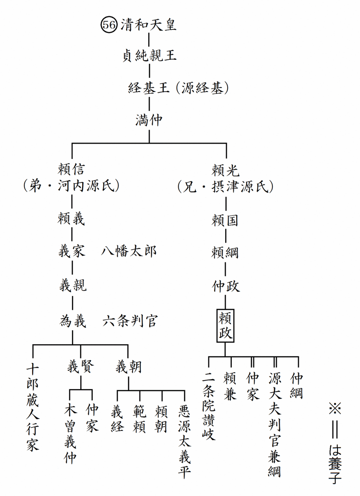

| これで読破！ 平家物語 巻第四 | |
| 三石由起子 | |
| genkosha (2014) | |
完訳 平家物語
百二十句本による
第三十一句から第四十句


第三十一句 いつくしま御かう（厳島御幸）
厳島御幸
一
治承四年正月一日、鳥羽殿には、入道相国もゆるされず、法皇もおそれさせましましければ、元日、元三のあひだ参入する人もなし。故少納言入道の子息、藤原の中納言成範［＊「なりのり」と有るのを他本により訂正］、その弟左京大夫脩範、これ二人ばかりぞゆるされて参られける。
同じく二十日、東宮御袴着、ならびに御魚味初めきこしめすとて、めでたきことどもありしかども、法皇は御耳のよそにぞ聞こしめす。
二月二十一日、主上ことなる御つつがもわたらせ給はぬを、おしおろしたてまつる。東宮践祚あり。これは、入道相国、よろづ思ふままなるがいたすところなり。「時よくなりぬ」とてひしめきあへり。
内侍所、神璽、宝剣、わたしたてまつる。上達部、陣に集まつてふるごとども先例にまかせておこなひしに、弁の内侍、御剣取て歩み出づ。清涼殿の西面にて、泰通の中将受け取る。備中の内侍、しるしの御箱取り出だす。隆房の少将受け取る。内侍所、しるしの御箱、「こよひばかりや手をもかけけん」と思ひあへり。内侍の心のうちども、「さこそ」とおぼえて、あはれぞ多かりける。なかにも、しるしの御箱をば少納言の内侍取り出づべかりしを、こよひこれに手をもかけては、長くあたらしき内侍にはなるまじきよし、人の申しけるを聞いて、その期に辞して取り出ださざりけり。「年すでにたけたり。ふたたびさかりを期すべきにもあらず」とて人々憎みあへりしに、備中の内侍は生年十六歳、いまだいとけなき身ながら、その期に、わざとのぞみて取り出だしける、優なりけるありさまなり。
つたはれる御ものども、品々、つかさづかさ、受け取りてける。新帝の皇居、五条の内裏へわたしたてまつる。閑院殿には火の影もかすかに、鶏人の声もとどまり、滝口の問籍も絶えにければ、ふるき人々、めでたき祝ひのなかにも涙をながし、心をいたましむ。左大臣、陣に出で、御位ゆづりのことども仰せしを聞いて、心ある人々は涙をながし、袖をうるほす。われと御位を儲の君にゆづりたてまつれば、「まこやの山のなかにも静かに」などおぼしめす。もともとだにもあはれは多きならひぞかし。いはんや、これは心ならずおしおろされさせ給ひけんあはれさ、申すもなかなかおろかなり。
新帝、今年三歳。「あはれ、いつしかなる位ゆづりかな」と人々申しあはれけり。
平大納言時忠の卿は、うちの御乳母帥の典侍の夫たるによつて、「『今度の譲位いつしかなり』と、たれかかたぶけ申すべき。異国には、周の成王三歳、普の穆帝二歳。わが朝には、近衛の院三歳、六条の院二歳、みな襁褓のうちにつつまれて、衣帯正しうせざつしかども、『あるいは摂政負うて位につけ、あるいは母君抱いて朝にのぞむ』と見えたり。後漢の孝殤皇帝は、生れて百日といふに践祚ありて天子の位をふむ。先蹤、和漢かくのごとし」と申されけれど、そのときの有職の人々、「あなおそろし。ものな申されそや。さればそれはよき例どもか」とぞつぶやきあはれける。
東宮、位につかせ給ひしかば、太政入道、夫婦ともに准三后の宣旨をかうむり、年官年爵を賜はつて、上日の者を召し使ひ、絵かき、花つけたる侍ども出で入りければ、院、宮のごとくにてぞありける。出家入道ののちも、栄耀なほ尽きせぬとぞ見えし。出家の人の准三后の宣旨をかうむることは、法興院の大入道兼家の卿の例とぞ承る。
治承四年正月一日、清盛が許さず、また法皇も気兼ねをなさっているので、鳥羽殿には、元日からの三ヶ日の間にご年始のご挨拶に伺う者もいなかった。故少納言入道の子息である藤原中納言・成範、その弟の左京大夫・脩範の二人だけが許しを受けて参上した。同じく二十日、東宮が御袴着、並びに御魚味初（幼児に初めて魚肉を食べさせる儀式）をなさるという祝い事があったが、法皇は他人事のようにお聞きになるだけであった。
二月二十一日、ご病気でもない高倉天皇を「おしおろしたてまつる」。東宮の践祚（天皇の位に就く）のためであった。これは、入道相国が全てを自分の思い通りに取り仕切ったということである。三歳の安徳天皇即位であった。平家にとっての「好機到来」であった。天皇の外戚として時運に乗ったことを喜び合った。皇位の象徴である三種の神器、すなわち内侍所（＝八咫鏡）、神璽（＝八尺瓊曲玉）、宝剣（＝天叢雲剣、草薙剣）をお渡しする。上達部たちが陣の座（＝会議場）に集まり、堀川天皇の先例を踏襲して践祚の儀を行なうために、弁の内侍が御剣を取って歩み出た。清涼殿の西面で泰通中将がこれを受け取る。備中内侍が、しるしの御箱を取り出し、隆房少将がこれを受け取る。内侍は、天皇の後宮でお世話をする役目の女性である。
八咫鏡、神璽を入れた御箱を取り出した内侍たちは、
「これに触れるのも、今宵が最後なのだ。」
と、それぞれに思う。
共に高倉天皇のお側でお仕えした者達であった。内侍達の心中を思えば、いかにもと同情されて、哀れな事が多かった。中でも少納言の内侍は、神璽の御箱を取り出す役目であったが、今夜これに手をかけると、永久に新帝の内侍にはなれないのだと人が言うのを聞いて、その期に及んで役目を辞したのであった。これは、兵部卿・平信範の孫であり、少納言・平信国の娘であった。
「もう年齢も過ぎている。再びの盛りを望むことはできまいに。」
と、人々は遺憾に思うのである。
備中内侍は生年十六歳。まだ幼い身であったが、その時、特に志願してそれを持って出た。優なりけるありさまなり。皇室に代々伝わる所蔵品の品々を役人たちはそれぞれに受け取った。新帝の皇居を五条の里内裏にお遷し申し上げる。高倉天皇の里内裏・閑院殿では火の影も微かで、時をお知らせする役人の声もなく、滝口の武士達の姓名誰何も名乗りも絶えてしまった。古くからお仕えする人々は、このめでたい祝いの中で涙を流し、心を痛めているのである。
左大臣・藤原経宗が、陣の座に出てご譲位を発表すると、心ある人々は涙を流し、袖を濡らしたのであった。御自分から皇太子にお譲りになったものならば、上皇となっても平安な生活が期待されたことだろうにと思召す。譲位は元来、しみじみと哀れなことが多いものであるが、まして今回は、心ならずものご退位であったから、その哀れさは言うも愚かであった。
新帝は、今年三歳である。
「ああ、早すぎるご即位であることよ。」
と、人々は言い合っていた。
新帝・安徳天皇の御乳母（＝帥の典侍）の夫である平大納言・時忠卿は、
「『今度のご譲位は早すぎる』などと、誰が悪口を言えようか。異国の先例にもある。周の成王は三歳、普の穆帝は二歳で即位された。我が国の例もある。近衛院は三歳、六条院は二歳のご即位である。どなたも襁褓（産着や背負い紐）の内に包まれて、衣服や帯を正式にお召しにはなれなかったが、『摂政が背負って位に就けたり、母君が抱いて朝廷に臨む』様子であったのだ。後漢の孝殤皇帝は、生後百日で践祚があってご即位なされた。和漢の先例はこのように多くあるのだ。」
と、おっしゃったが、宮廷の故実や礼法に詳しい人々は、
「あな恐ろし。ものを言うな。さればそれは良い先例だったのか。」
と、呟きあっていた。
東宮が即位されたので、入道相国夫妻は、外祖父、外祖母であるから、共に准三后の宣旨をいただき、年官年爵を賜って当番で出仕する者を召し使った。衣服に絵を描いたり、花を付けたりする侍達が出入りしたので、清盛の屋敷はまるで院か宮中の御所のようであった。出家入道してからも、なお栄耀栄華が尽きせぬと思われた。出家の人が准三后の宣旨を頂くことは、法興院の大入道・兼家卿の例に倣ったと聞いている。
これこそが、権力に驕った清盛の強引な振る舞いだったが、いよいよ我が世の春の到来を喜ぶ平家の人々の中で、幼すぎる天皇を危ぶむ声もかき消されて行く。
二
同じく三月に、「新院、安芸の厳島へ御幸なるべし」とぞ聞こえさせ給ひける。皇帝位去らせ給ひて、諸社の御幸のはじめには、八幡、賀茂、春日なんどへこそ御幸なるべきに、はるばるの西のはて、島国へわたらせ給ふ神へしも御幸なることは、人、「いかに」と申しあへり。ある人申しけるは、「白河の院は熊野へ御幸なる。〔後白河の〕法皇は日吉の社へ御幸なる。すでに知んぬ、叡慮にありといふことを。そのうへ、御心中にふかき御願あり、『御夢想の告げあり』とぞ仰せける。厳島は太政入道あがめたてまつり給へば、上には平家と御同心、下には、法皇のいつとなく鳥羽殿へおしこめられてわたらせ給へば、『入道の心をやはらげ給へ』との御祈念のため」とぞ聞こえし。
山門の大衆、憤り申しけるは、「賀茂、八幡、春日なんどへ御幸ならずは、わが山の山王へこそ御幸なるべけれ。安芸の厳島までは、いつのならひぞや。その儀ならば神輿を振り下したてまつりて、御幸をとどめたてまつれ」とぞ申しける。これによ（ッ）て、しばらく御延引あり。入道相国、様々になだめ給へば、山門の大衆しづまりぬ。
同じく三月十七日、上皇、厳島の御門出でとて、入道相国の西八条の第へ入らせ給ふ。その夜、やがて厳島の御神事はじめらる。殿下より、唐の御車、うつしの馬など参らせらる。
その日の暮れほどに、前の右大将宗盛の卿を召して、「明日、厳島御幸の御ついでに、鳥羽殿へ参りて、法皇の御見参に入らばやとおぼしめすはいかに。相国禅門に知らせずしてはあしかりなんや」と仰せければ、宗盛の卿、涙をはらはらとながして、「なんでう事の候ふべき」と申されたりければ、「さらば、宗盛参りて、その様を申せかし」と仰せければ、宗盛の卿、いそぎ鳥羽殿へ馳せ参りて、このよし申されたりければ、法皇は、あまりにおぼしめす御ことにて、「こは夢やらん」とぞ仰せける。
あくる十九日、大宮の大納言隆季の卿、いまだ夜ふかう参りて、御幸をもよほされけり。この日ごろ聞こえさせ給ひし厳島の御幸をば、西八条の第よりとげさせおはします。ころは弥生なかば過ぎぬるに、かすみにくもる有明の月の光もおぼろにて、越路をさしてかへる雁、雲居におとづれてゆくも、をりふしあはれに聞こしめし、夜のほのぼのと明けけるに、上皇、鳥羽殿へ入らせ給ふ。
門のうちへさし入らせ給へば、人まれにして木暗く、ものさびしげなる御すまひ、まづあはれにぞおぼしめす。春すでに暮れなんとす、夏木立にもなりにけり。こずゑの花の色おとろへて、谷のうぐひす声老いんだり。
去年の正月六日、法住寺殿へ朝覲のために行幸なりたるには、諸衛陣をひき、諸卿列に立ち、楽屋に乱声を奏し、院司、公卿参りむかつて、幔門をひらき、掃部頭筵道を敷き、ただしかりし儀式、一つもなし。今日はただ夢とのみこそおぼしめせ。
藤中納言成範［＊「なりのり」と有るのを他本により訂正］参りて、御気色をうかがひ申されければ、法皇は寝殿の階隠の間に御座ありて、上皇を待ちまゐらせさせ給ひけり。上皇は、今年二十にならせおはします。明けがたの月の光に映えさせ給ひて、かがやくほどにいつくしうぞ見え給ふ。故建春門院にゆゆしく似まゐらせましましければ、法皇、まづ故女院の御ことをおぼしめしいだして、御涙せきあへ給はず。御前には、尼御前ばかりぞ侍はれける。両院の御座、近くしつらはれたり。御問答の御ことは、人承りおよばず。
はるかに日たけて、上皇、鳥羽殿を出御なる。上皇は、法皇の離宮の故亭、幽閑寂寞の御座のすまひ、御心ぐるしく御覧じおかせ給へば、法皇はまた、上皇の旅泊行宮の、波の上、船の中の御ありさま、おぼつかなうぞおぼしめす。供奉の人々は、前の右大将宗盛、三条の大納言実房、藤大納言実国、五条の大納言邦綱、土御門の宰相中将通親、殿上人には、高倉の中将泰通、左少将隆房、宮内少輔棟範とぞ聞こえし。前の右大将宗盛は随兵三十騎召し具し、げうげうしうぞ見えける。まことに、宗廟、八幡、賀茂をさしおいて、厳島までの御幸をば、神明もなどか御納受なかるべき。御願成就うたがひなしとぞ見えたる。
同じく三月には、
「新院（＝高倉上皇）が、安芸の厳島へ御幸なるべし。」
との情報が聞こえて来た。
ご退位になってから初めての諸社の御幸であるから、石清水八幡か、賀茂神社か、春日大社などへの御幸が当然であるのに、はるばるの西の果ての島国の神へ御幸なさるとは、どうしたことかと人々は噂していた。ある人が言うには、
「白河院は熊野へ御幸なさった。後白河法皇は日吉の社であった。それを思うと、きっとこれは高倉上皇のご叡慮から出た判断であろうと知れる。その上で、御心中に深い御願がおありなのだろう。『御夢想の告げあり』とおっしゃった。厳島は太政入道清盛が崇敬する神なので、一つには平家と御同心であることを見せ、一つには下には、後白河院の幽閉に配慮してもらうためで、『入道の心を和らげ給え』との御祈念なのだ。」
ということであった。
だが、これを聞く比叡山の大衆は、憤って反対したのである。
「賀茂、八幡、春日などへ御幸されるなら、我が山の山王へこそ御幸なさるべきである。安芸の厳島まで御幸なさるというのは、いつからの先例なのか。そんな例は今までにない。そんなことをなさるなら、神輿を振り下して御幸をお止め申せ。」
との騒ぎであった。
これによって、厳島への御幸は暫く延期となるが、入道相国が大衆を様々に宥めたので、やっと山門は鎮まって実現の運びとなったのである。
同じく三月十七日、高倉上皇は、厳島参詣へ向かうために入道相国の西八条の屋敷にお入りになった。そうしてその夜から直ちに厳島の御神事が始められたのであった。殿下（＝藤原基通）から唐の御車や、乗り換え用の馬などが献上された。その日の暮れに、高倉上皇は前右大将・宗盛卿をお召しになって、
「明日、厳島御幸のついでに、鳥羽殿へ参って法皇にお目にかかりたいと思うがどうか。相国禅門に知らせぬままでは悪かろうか。」
と仰せになったので、宗盛卿は涙をはらはらと流して、
「なぜ悪いことがございましょうか。」
と申し上げると、
「それならば、宗盛が参上してそれを申し上げよ。」
と仰ったので、宗盛卿は急いで鳥羽殿に馳せ参じ、このことを法皇にお伝えした。法皇は、あまりのご感激に、
「こは夢やらん。」
と仰せになった。
翌十九日、大宮大納言・隆季卿が、まだ夜中の内に参上してご出発を催促なさった。この間から申し出されていた厳島御幸を西八条の清盛屋敷から遂げられるのである。弥生の半ば過ぎで、霞みに曇る有明の月の光も朧であった。越後路をさして帰って行く雁が、雲の上を鳴きながら飛んで行くのも時節柄、哀れをお感じになり、夜がほのぼのと明ける頃、高倉上皇は鳥羽殿にお入りになった。門の中にお入りになると、人の姿は稀で木暗く、もの寂しげなお住まいである。それをまずは哀れに思召した。春はすでに暮れようとしていた。夏木立にもなっているのである。梢の花の色は衰えて、谷の鶯の声も老いていた。去年の正月六日に法住寺殿へ朝覲のために行幸された時には、諸衛陣を引き連れて諸卿が列に並び、楽屋に乱声を奏していた。院に仕える公卿達がお迎えに出て幔幕を巡らせた門を開いて、掃部頭は長い筵を敷いて道を作り、正式に行なわれた儀式が、今は一つもなかった。今日はただ夢だと思われよ。藤中納言・成範が参って上皇のご到着をお知らせすると、法皇は寝殿の階段奥のお部屋にお座りになって上皇を待っておられた。父子の涙の対面である。
高倉上皇は今年二十歳になられる。そのお姿は、明け方の月の光に映え、輝くばかりに厳かであった。故建春門院に不吉なほどお似ましであったから、法皇はまず故女院を思い出させて御涙を止めることができなかった。御前には、尼御前だけが付いておられた。法皇、上皇、両院の御座は近くに設えられていた。何をお話しになったのかは誰も伺ったものがないので分からない。
そうして、遥かに日が高くなってから高倉上皇は、鳥羽殿を出御なさったのであった。上皇は、法皇の離宮の故亭、幽閑寂寞の御座のご様子を心苦しく御覧になり、法皇はまた、上皇の旅泊行宮の波の上、船の中の御ありさまをご心配になっておられた。供奉の人々には、前右大将・宗盛、三条大納言・実房、藤大納言・実国、五条大納言・邦綱、土御門宰相中将・通親、殿上人には、高倉中将・泰通、左少将・隆房、宮内少輔・棟範がおられたそうだ。前右大将・宗盛は随兵三十騎を召し具して、仰々しい様子であった。実に、宗廟や、八幡、賀茂の社をさしおいて、厳島までの御幸である。神明もどうして御納受なさらないことがあろうか。御願成就は疑いなしと見えた。
三
同じき二十六日、〔厳島へ〕御参着あつて、太政入道の最愛の内侍が宿所、御所になる。なか一日御逗留ありて、経会、舞楽おこなはる。導師には、三井寺の公顕僧正とぞ聞こえし。高座にのぼり、鉦うち鳴らし、表白の詞にいはく、「まことに九重の内を出でさせ給ひて、八重の潮路をわけて参らせ給ふ御心ざしのかたじけなさよ」と高らかに申されたりければ、君も臣も感涙をぞもよほされける。〔大宮、〕客人をはじめまゐらせて、社々、所々へみな御幸なる。大宮より五町ばかり山をまはつて、滝の宮へ参らせ給ふ。公顕僧正、一首の歌をよみて、拝殿の柱に書きつけられけり。
雲居よりおちくる滝のしら糸に ちぎりをむすぶことぞうれしき
国司藤原の在綱、品にのぼせられて、加階、従下の四品、院の殿上をゆるさる。神主佐伯の景弘加階、従上の五位。座主尊永、法印になさる。神慮もうごき、太政入道の心もやはらぎぬらんとぞ見えし。
同じき二十九日、上皇、御船かざりて還御なる。風はげしかりければ、御船漕ぎもどし、厳島のうち、有の浦にとどまり給ふ。上皇、「大明神の御なごり惜しみに、歌つかまつれ」と仰せければ、隆房の少将、
たちかへるなごりも有の浦なれば 神もめぐみをかくるしらなみ
夜半ばかりに、波もをさまり、風もしづかになりければ、御船漕ぎ出だし、その日は備後の国敷名の泊に着かせ給ふ。このところは、去んぬる応保のころ、一院御幸のとき、国司藤原の為成つくりたる御所のありけるを、入道相国、御まうけにしつらはれたりしかども、上皇それへはあがらせ給はず。「今日は卯月一日。衣がへといふことのあるぞかし」とて、おのおの都の方思ひやり、遊び給ふに、岸に、色ふかき藤の、松に咲きかかりたりけるを、上皇叡覧ありて、隆季の大納言を召して、「あの花、折りにつかはせ」と仰せければ、左史生中原の康定、はし舟に乗りて御前を漕ぎとほるを召して、折りにつかはす。藤の花を手折り、松の枝につけながら持ちて参りたり。「心ばせあり」など仰せられて御感ありけり。「この花にて歌つかまつれ」と仰せければ、隆季の大納言、
千年まで君がよはひに藤波の 松の枝にもかかりぬるかな
その〔の〕ち、御前に人々あまた侍はせ給ひて、御たはぶれごとのありしに、上皇、「白き衣着たる内侍が、邦綱の卿に心をかけたるな」とて笑はせおはしましければ、大納言、大きにあらがひ申さるるところに、文持ちたる女が参りて、「五条の大納言殿へ」とてさしあげたり。「さればこそ」とて、満座、興あることに申しあはれけり。大納言、これを取りて見給へば、
しら波のころもの袖をしぼりつつ 君ゆゑにこそたちもわすれね
上皇、「ゆゆしうこそおぼしめせ。この返事はあるべきぞ」とて、やがて御すずりを下させ給ふ。
大納言、返事には、
思ひやれ君がおもかげたつ波の 寄せくるたびにぬるる袖かな
同じく二十六日、厳島にご到着。太政入道清盛の寵愛する内侍の宿所を御所とした。なか一日御逗留があって、それから経会と舞楽が催された。供養の中心となった僧は、三井寺の公顕僧正だったそうだ。高座に上って鉦を打ち鳴らし、表白を捧げてお祈りをする。
「まことに九重の内を出でさせ給ひて、八重の潮路を分けて参らせ給ふ御心ざしの忝さよ。」
と高らかに申し上げると、上皇も臣下も感涙を催された。
厳島の本社を始めとして、社々、所々を全て御幸なさった。本社から五町ばかり山を廻り、白糸の滝の宮へお参りになる。そこで公顕僧正が、一首の歌を詠んで拝殿の柱に書きつけられた。
雲居より落ち来る滝の白糸に
契りを結ぶことぞ嬉しき
（空から流れ落ちる滝の白糸によって、この滝の宮の神と縁を結ぶことの嬉しさよ）
国司・藤原在綱は加階されて従下の四品となり、院の殿上を許された。神主・佐伯景弘も加階されて従上の五位となった。座主・尊永は法印になった。神慮も動き、太政入道の心も和らいだのだろうと思われる。
同じく二十九日、上皇は御船を飾って還御なさるが、風が激しかったので、御船を漕ぎ戻して厳島の中の有の浦に留まられた。高倉上皇は、
「大明神の御名残り惜しみに、歌を詠め。」
と仰せられたので、隆房少将が、
「立ち帰る名残りも有の浦なれば
神も恵みを掛くる白波
（都へ立ち帰る名残りも惜しい有の浦なので、打ち寄せる白波と同様に、神も恵みを掛けて下さることだろう）」
と、詠んだ。
夜半に波も治まり、風も静かになったので、御船を漕ぎ出して、その日は備後国にある敷名の泊にお着きになった。この場所は、去る応保の頃に法皇が御幸なさった折に、国司・藤原為成が造った御所があった。入道相国はそこをご休憩所として準備なさっていたが、高倉上皇はそこにお上がりにならなかった。
「今日は卯月一日である。衣替えだな。」
と、それぞれが都の方を思って遊んでおられると、岸に濃い色の藤が松に咲き掛かっていた。
上皇がご覧になって隆季大納言をお召しになり、
「あの花、折りに遣わせ。」
と仰せになった。
ちょうど左史生・中原康定が小舟に乗って御前を漕ぎ通るところを召して折りに遣わす。藤の花を手折って、松の枝につけたまま持参する。
「気が利くことだ。」
などと仰せられて感激された。
「この花のことを歌に詠め。」
との仰せに、隆季大納言は、
「千年まで君がよはひに藤波の
松の枝にもかかりぬるかな
（千年ものご寿命をお保ちになる上皇にあやかって、藤の花が千代を寿ぐ松の枝に掛かっております）」
と、詠む。
その後、御前に大勢の人々が侍ってお遊びがあった時に、上皇は、
「白い衣を着ていた内侍が、邦綱卿に心を掛けたようだね。」
と、お笑いになって、大納言が大いに否定しているところに、手紙を持った女が参って、
「五条の大納言殿へ。」
と、差し出したのであった。
「さればこそ。」
と、満座が面白いことだと言い合った。
大納言が、この手紙を取って見ると、
「白波の衣の袖をしぼりつつ
君ゆえにこそたちも忘れね
（白波のような白衣の袖をしぼって泣くばかりで、あなたとの別れの悲しさに立って舞うこともできません）」
と、あった。上皇は、
「優雅なことと思われるぞ。この返事は書くべきぞ。」
と、すぐに御すずりをお下しになった。大納言の返事は、
「思ひやれ君がおもかげたつ波の
寄せくるたびにぬるる袖かな
（どうか思ってほしい。あなたの面影が目に浮かぶ度に、寄せ来る波に濡れるように涙で袖を濡らす私のことを）」
で、あった。
四
それより備後の国児島の泊に着かせ給ふ。
五日の日は、天晴れ、風しづかに、海上ものどけかりければ、御所の御船をはじめまゐらせて、人々の船どもみな出だしつつ、雲の波、けぶりの波をわけしのがせ給ひて、その日の酉の刻に、播磨の国山田の浦に着かせ給ふ。
それより御輿にめして、福原へ入らせおはします。供奉の人々は、「いま一日も都へとく」と急がれけれども、なか一日新院御逗留あつて、福原のところどころを歴覧ありけり。隆季の大納言、勅定をうけたまはつて、入道相国の家の賞おこなはる。〔入道〕養子丹波守清邦、正五位の下に叙す。同じく入道の孫越前の少将資盛、四位の従上とぞ聞こえし。
七日、福原を出でさせ給ひ、その日、寺井に着かせ給ふ。御むかへの公卿、殿上人、鳥羽の深草へぞ参られける。還御のときは鳥羽殿へは御幸もならず。入道相国の西八条の第へ入らせ給ふ。
同じく四月二十二日、新帝御即位あり。大極殿にてあるべかりしかども、ひととせ炎上ののちは、いまだ造り出だされず。「太政官の庁にておこなはるべし」とさだめられたりけるを、そのときの九条殿申させ給ひけるは、「太政官の庁は、およそ人の家にとらば、公文所体の所なり。大極殿なからんには、紫宸殿にて御即位あるべし」と申させ給ひければ、紫宸殿にて御即位あり。
「去んぬる康保四年十一月一日、冷泉院の御即位、紫宸殿にておこなはしことは、主上御邪気によ（ッ）て、大極殿へ行幸かなはざりしゆゑなり。その例いかがあるべからん。ただ延久の佳例にまかせて、太政官の庁にておこなはるべきものを」と人々申しあはれけれども、九条殿の御ぱからひのうへは力およばず。
中宮、弘徽殿を出でさせ給ひて仁寿殿へうつり、高御座へ参らせ給ふありさま、めでたかりけり。平家の人々みな出仕せられたりけれども、小松殿の君達ばかりは、父の大臣去年失せ給ひしあひだ、いまだ色にて籠居せられたり。
蔵人左衛門権佐定長、今度の御即位、違乱なくめでたき様こまごまと記いて、入道相国の北の方、八条の二位殿へ奉り給ひたりければ、入道も二位殿も、これを見給ひて、笑をふくみてぞよろこび給ひける。か様にめでたき事どもは有つしかども、世間はなほしづかならず。
そこから備後国・児島の泊にお着きになる。五日は、空も晴れ、風も静かで海上も長閑であった。御所の御船を初めとして、人々の船もみな漕ぎ出して、遠く雲のように重なり、煙のように霞む波をかき分けて、その日の酉の刻には、播磨国・山田の浦にお着きになった。そこから御輿に乗られて福原にお入りになる。供奉の人々は、
「いま一日も都へとく」
とお急ぎになるが、高倉上皇は、なか一日御逗留あそばされて、福原の所々を歴覧なさった。隆季大納言が勅定を受け、入道相国が自宅を御所としてした事に対する賞が下された。入道の養子である丹波守・清邦は、正五位の下に叙せられた。同じく入道の孫である越前少将・資盛は、四位の従上とされたそうだ。七日には福原をお発ちになって、その日に寺井にご到着であった。御迎えの公卿や殿上人が、鳥羽の深草まで出て来ておられた。お帰りには鳥羽殿へ御幸はなく、入道相国の西八条の屋敷にお入りになった。
同じく四月二十二日、新帝・安徳天皇の御即位が行なわれた。大極殿で行なわれるべき儀式であったが、去年、炎上した後、まだ造られていなかった。
「太政官の庁にて行なわるべし。」
と定められているのを、その時の九条殿が、
「太政官の庁は、そもそも一般家庭の事務室のような所である。大極殿が使用できぬのなら、紫宸殿にて御即位あるべし。」
と申し上げたので、紫宸殿での御即位であった。
「去る康保四年十一月一日、冷泉院の御即位が紫宸殿で行われたのは、主上が御病気で大極殿までお出ましになれなかったからである。その先例はどうであろうか。ただ延久の佳例のままに太政官の庁で行なえば良いのに。」
と、人々が申し合せたが、九条殿の御計らいであるために力も及ばず。
中宮は、弘徽殿を出られて仁寿殿に遷られた。高御座にお就きになるご様子はまことにめでたいことであった。平家の人々は皆、出仕なさったが、小松殿（＝重盛）の子息達は、父大臣が去年亡くなって、まだ籠居なさっておられた。 蔵人左衛門権佐・定長が、今度の御即位が違乱なくめでたかった様子を細々と書き記して、入道相国の北の方（＝八条の二位殿）へ奉られたので、清盛入道も二位殿（＝時子）も、これを御覧になって笑を含み、お喜びになった。
このような吉事はあったが、世間はなお鎮まらない。
第三十二句 たかくらのみやむほん（高倉の宮謀反）
高倉の宮謀叛
頼政のすすめによって、ついに謀反を思い立った以仁親王（＝高倉の宮）である。
一
一院第二の皇子以仁の親王と申すは、御母は加賀の大納言季成の卿の御むすめ。三条高倉にましましければ、「高倉の宮」とぞ申しける。
御歳十五と申せし永万元年十二月十五日の夜、近衛河原の大宮の御所にて、しのびつつ御元服あり。御手跡いつくしうあそばし、御才学すぐれてわたらせ給ひしかども、御継母建春門院の御そねみにて、親王の宣旨をだにもかうぶらせ給はず。花のもとの春のあそびには、紫毫をふるつて手づから御製を書き、月のまへの秋の宴には、玉笛を吹いてみづから雅音をあやつらせ給ひけり。かくて明かし暮らし給ふほどに、治承四年には三十二にぞならせましましける。
治承四年卯月九日の夜、近衛河原に候ひける源三位入道、この御所へ参りて申しけることこそおそろしけれ。「君は天照大神四十八世の御末、神武天皇より七十七代の御宮にてわたらせ給ふ。いまは天子にも立たせ給ふべきに、いまだ親王の宣旨をだにもかうぶらせ給はず、宮にてわたらせ給ふことをば、心憂しとはおぼしめさずや。この世の中のありさまを見候ふに、上には従ひたる様に候へども、下には平家をそねまぬ者や候ふ。されば、君、御謀叛を起させ給ひて、世をしづめ、位につかせ給へかし。また、法皇のいつとなく鳥羽殿に押し籠められてわたらせ給ふをも、やすめまゐらせ給へかし。これ御孝行の御いたりにてこそ候はんずれ。神明三宝もなどか御納受なかるべき。君、まことにおぼしめし立つて、令旨を諸国へくださせ給ふものならば、よろこびをなして馳せ参らんずる源氏どもこそ国々に多く候へ」とて申しつづく。
「京都には、まづ出羽の前司光信が子ども、伊賀守光基［＊「みつとも」と有るのを他本により訂正］、出羽の蔵人光長、出羽の判官光重、出羽の冠者光義。熊野には、故六条の判官為義が末の子、十郎義盛とてかくれて候。津の国には、多田の蔵人行綱こそ候へども、新大納言成親の卿の謀叛のとき、同心しながら返り忠したる不当人で候へば、申すにおよばず。さりながらも、その弟に、多田の次郎朝実、手島の冠者高頼、太田の太郎頼基。河内の国には、武蔵権守入道義基、子息石川判官代義兼。大和の国には、宇野の七郎親治が子ども、太郎有治、次郎清治、三郎成治、四郎義治。近江の国には、山本、柏木、錦織。美濃、尾張には、山田の次郎重弘、河辺の太郎重直、泉の太郎重満、浦野の四郎重遠、葦敷の次郎重頼、その子太郎重資、同じく三郎重澄、木田の三郎重長、開田の判官代重国、八島の先生重高、その子太郎重行。甲斐の国には、逸見［＊「たんみ」と有るのを他本により訂正］の冠者義清、その子太郎清光、武田の太郎信義、加賀見の次郎遠光、同じく小次郎長清、一条の次郎忠頼、板垣の三郎兼信、逸見の兵衛有義、武田の五郎信光、安田の三郎義定。信濃の国には、大内の太郎維義、岡田の冠者親義、平賀の冠者盛義、その子四郎義信。帯刀先生義賢が次男、木曾の冠者義仲。伊豆の国には、流人前の兵衛佐頼朝。常陸の国には、〔為義が三男、〕信太の三郎先生義教。佐竹の冠者昌義、その子太郎忠義、同じく三郎義宗、四郎隆義、五郎義季。陸奥の国には、故左馬頭義朝の末の子、九郎冠者義経。これみな六孫王の苗裔、多田の満仲が後胤なり。
朝敵をもたひらげ、宿望とげしことは、源平いづれも劣りまさりはなかりしかども、いまは雲泥のまじはりをへだてて、主従の礼にもなほ劣れり。国には国司に従ひ、荘には領家につかはれ、公事雑事にかり立てられて、安き心も候はず、いかばかりか心憂く候ふらん。君、もしおぼしめし立たせ給ひて、令旨を賜はりつるものならば、夜を日についで馳せのぼり、平家をほろぼさんこと時日をめぐらすべからず。入道こそ年寄つて候へども、子どもひき具して参り候ふべし」とぞ申しける。
宮は、「このこといかがあらん」とて、しばしは御承引もなかりしかども、阿古丸の大納言宗通の卿の孫、備後の前司季通が子、少納言伊長と申せしは、すぐれたる相人なりければ、時の人、「人相少納言」とぞ申しける。その人、この宮を見まゐらせて、「位につかせ給ふべき相まします。天下のこと、おぼしめし放させ給ふべからず」と申しけるうへ、源三位入道もか様に申されければ、「しかるべき天照大神の御告げやらん」とて、ひしひしとおぼしめし立たせ給ひけり。
後白河法皇の第二の皇子である以仁親王と申し上げる方は、御母が加賀大納言・季成卿の御娘。三条の高倉にお住まいだったので「高倉の宮」とお呼びする。御歳十五になられた永万元年十二月十五日の夜、近衛河原の大宮の御所で密かに御元服なさった。御筆跡が厳かで、才学に優れていらっしゃったが、継母・建春門院の嫉みによって親王宣旨さえも頂けなかったのである。
花の下、春の遊びには紫毫を揮って御製を書き、月の前での秋の宴には、玉笛を吹いて雅音を操っておられた。このように明かし暮らしておられたが、治承四年には三十二歳におなりであった。
治承四年卯月九日の夜、近衛河原におられた源三位入道・頼政が、この御所に参上して申し上げたことは、実に恐ろしいことだったのである。
「親王殿下（＝以仁親王）は、天照大神から四十八世の御末であり、神武天皇から数えると七十七代目の御宮であられます。今は、天皇ともおなりになるべき方であるにも関わらず、いまだに親王の宣旨さえもお受けになっておられない。そんな親王であることを辛いと思われませんか。世の中の状況を見れば、表面では服従しているように見えますが、内心では平家を妬まない者はおりません。されば、君、御謀叛をお起こしになって世を鎮め、即位なされませ。また、法皇が鳥羽殿に押し籠められてお過ごしな状況もご安心していただけるようになさいませ。これぞ御孝行の御至りというものでございますぞ。神明三宝も御納受なさることです。君、まことに御考え立って、令旨を諸国へ下されれば、喜んで馳せ参ずる源氏どもが国内には大勢おりますぞ。」
と、申し続けられたのである。
「京都には、まず出羽前司・光信の子息である伊賀守・光基、出羽蔵人・光長、出羽判官・光重、出羽冠者・光義。熊野には、故六条判官・為義の末子である十郎義盛という逸材が隠れております。津国には、多田蔵人・行綱がありますが、これは新大納言・成親卿の謀叛の時に、一度は同心しながらも返り忠をしたとんでもない男ですから論外です。さりながらも、その弟に多田次郎・朝実がおります。手島冠者・高頼、太田太郎・頼基。河内国には、武蔵権守入道・義基、その子息である石川判官代・義兼。大和国には、宇野七郎・親治の子供で太郎有治、次郎清治、三郎成治、四郎義治。近江の国には、山本、柏木、錦織。美濃、尾張には、山田次郎・重弘、河辺太郎・重直、泉太郎・重満、浦野四郎・重遠、葦敷次郎・重頼、その子である太郎重資、同じく三郎重澄、木田三郎・重長、開田判官代・重国、八島先生・重高、その子である太郎重行。甲斐国には、逸見冠者・義清、その子である太郎清光、武田太郎・信義、加賀見次郎・遠光、同じく小次郎・長清、一条次郎・忠頼、板垣三郎・兼信、逸見兵衛・有義、武田五郎・信光、安田三郎・義定。信濃国には、大内太郎・維義、岡田冠者・親義、平賀冠者・盛義、その子である四郎義信。帯刀先生・義賢の次男、木曾冠者・義仲。伊豆国には、流人となって暮らしている前兵衛佐・頼朝。常陸国には、為義の三男、信太三郎先生・義教。佐竹冠者・昌義、その子である太郎忠義、同じく三郎義宗、四郎隆義、五郎義季。陸奥国には、故左馬頭・義朝の末子、九郎冠者・義経。これは皆、清和天皇の第六皇子・貞純親王の末裔で、多田満仲の後胤でございます。朝敵を平らげ、宿望を遂げた手柄は、源平どちらも劣り優りはございませんのに、今となっては雲泥の違いで、主従の関係よりも隔たっております。国の住民は国司に従い、荘園にいる者達は領家に使われて、公事雑事に駆り立てられて安心してもいられません。どんなに心憂く思っていることか。君が、もし、思召し立たれて令旨を下さるのなら、夜を日についで馳せのぼり、平家を滅ぼすに時を待つべきではありません。清盛入道こそ、年寄ってはいますが、その子息達を引き具して参るでしょうから。」
と、申し上げたのであった。宮は、
「このこと、いかがあらん。」
と、即座には御承引もなかった。
ここに阿古丸の大納言・宗通卿の孫で、備後前司・季通の子である少納言・伊長という者がいた。非常に優れた人相見であった。時の人は「人相少納言」と呼んだほどの男である。その人が、この宮の人相を拝見して、
「天皇の位にお就きになる相がございます。天下のことを、お忘れになって良い方ではございません。」
と言う上に、源三位入道もそんなふうに申し上げるので、
「しかるべき天照大神の御告げやらん。」
と、ひしひしとお考えになってご決心なさった。
その方法として、諸国の源氏に令旨という命令書を発行するのだが、百二十句本では「りょうじ」と読まずに「れいし」と読むのである。その使い役として熊野にいた十郎義盛が立つ。
二
熊野に候ふ十郎義盛を召して、蔵人になされ、「行家」と改名して、令旨の御使に東国へぞ下されける。
同じき四月二十八日、都をたつて、近江よりはじめて、美濃、尾張の源氏どもに次第に触れて行くほどに、五月十日には伊豆の北条に下り着きて、前の兵衛佐殿に対面して、令旨〔を〕奉る。「信太の三郎先生義教にとらせん」とて、常陸の国信太浮島へ下る。「木曾の冠者義仲は甥なれば賜ばん」とて、東山道へぞおもむきける。
そのころ、熊野の別当湛増は平家に心ざし深かりけるが、なにとしてか漏れ聞こえたりけん、「新宮の十郎行盛こそ、高倉の宮の令旨賜はつて、美濃、尾張の源氏ども触れもよほし、すでに謀叛おこすなれば、那智、新宮の者どもは源氏の方人をぞせんずらん。湛増〔は〕、平家の御恩天山とかうぶりたれば、いかでか背きたてまつるべし。那智、新宮の者どもに矢一つ射かけて、平家へ仔細を申さん」とて、ひた兜一千人、新宮の湊へ発向す。
新宮には、鳥居の法眼、高坊の法眼。侍には、宇井、鈴木、水屋、亀甲。那智に、執行法印以下、都合その勢二千余人なり。鬨つくり、矢あはせして、源氏のかたには、とこそ射られ、平家のかたには、かくこそ射られて、矢叫びの声の退転もなく、鏑の鳴りやむひまもなく、三日がほどこそ戦うたれ。熊野の別当湛増、家の子郎等おほく討たれ、わが身手負ひ、からき命を生きつつ、本宮へこそ逃げのぼりけれ。
熊野に住む十郎義盛をお召しになって蔵人になされた。それを「行家」と改名して、令旨の御使に東国へ下されたのであった。同年四月二十八日、都を発って近江から美濃、尾張の源氏どもに次第に触れて行き、五月十日には伊豆の北条に下り着いたので、ここで前兵衛佐殿（＝源頼朝）に対面して令旨を奉った。
使い役の十郎義盛は、保元の乱で総大将として処刑された為義の十番目の息子である。熊野で育った義盛を都に呼んで「行家」と改名させて東国へ使いに出すのである。十郎が熊野で育てられたのは、姉（＝為義の一番上の娘）が熊野に嫁していて、そこに預けられていたからであった。そのために為義の子供たちが保元の乱の後に残らず処刑された中で一人、生き延びることができたのである。これをまず「蔵人」にするが、天皇のお傍御用の蔵人ではなく、八条院という姫宮（＝以仁王にとっては伯母）の蔵人にした。これが諸国の源氏に高倉の宮の令旨を届けて歩くのであった。伊豆の兵衛佐頼朝にも会った義盛は、
「信太の三郎先生義教は、兄だから取らせよう。」
と、常陸国、信太浮島へ下った。また、
「木曾の冠者・義仲は甥であるから、取らせよう。」
と、東山道へと赴いた。
信太三郎先生義教は、為義の三男で、霞ヶ浦の辺りに住んでいた。これも幼い頃からそこに遣わされていたので無事であった。行家の兄に当たる。さらに信濃の山奥にいた木曽の義仲に会う。義仲の父親も、為義の次男にあたる義賢である。行家にとって、義仲は甥であった。
ところが行家の出身地である熊野で合戦が起きたのであった。
その頃、熊野の別当・湛増は、平家に心酔していたのだが、どうして漏れ聞こえたものか、
「新宮の十郎行盛は、高倉の宮の令旨を賜わって、美濃、尾張の源氏どもに触れ廻り、すでに謀叛を起こす様子である。那智、新宮の者どもは源氏の味方をするであろう。だがこの湛増は、平家には山のような御恩を頂く身である。どうして背くことができようか。まずは那智と新宮の者どもに矢一つなりとも射かけてから、平家に仔細を報告しよう。」
と、武装させた武士達を一千人、新宮の湊へ向けて出発させたのであった。
熊野の別当・湛増は、田辺に邸を持っていたので「田辺の湛増」とも言われる。平家に心を寄せる男であった。
湛増の母親は為義の娘である。鳥居禅尼と呼ばれて当時の女傑のひとりに数えられた。初め、湛快という別当に嫁いで湛増を産んだが、後に行範に嫁いで大勢の子どもを産んでいる。行範の子供達は、熊野三山のうちの新宮と那智にいた。湛増は本宮にいた。つまり熊野三山は、この時の事件で、「本宮」対「新宮、那智」の形で対立したのである。新宮と那智は行家の後押しをする。湛増は平家方に付いた。
新宮には鳥居の法眼、高坊の法眼がいる。侍には、宇井、鈴木、水屋、亀甲がいた。那智には、執行法印以下、都合二千余人がいたのである。
鬨をつくり、矢合わせをして合戦が始まった。源氏方は「このように」射られ、平家方は「あのように」射られて、命中した矢を喜ぶ射手の叫びは止むことなく、鏑矢の音が鳴り止む暇もない状態で三日間ほど戦ったのだった。そうして、熊野の別当湛増の家の子、郎等の多くが討たれて散々に負けたのであった。我が身にも傷を受けて、命からがら本宮へと逃げ上った。しかし、その湛増の通報によって、清盛は以仁王の謀反を察知した。
三
さるほどに、法皇は、「成親、俊寛が様に、とほき国、はるかの島へも流しやせんずらん」とおぼしめしけれども、城南の離宮にうつされて、今年は二年にならせ給ふ。
同じき五月十二日、午の刻ばかり、御所中に鼬おびたたしう走りさわぐ。法皇大きにおどろきおぼしめして、御占形をあそばいて、近江守仲兼、そのころはいまだ蔵人にて侍はれけるを召して、「この占形持ちて、泰親がもとへ行き、きつと勘へさせて、勘状を取つて参れ」とぞ仰せられける。
仲兼これを賜はつて、陰陽頭泰親がもとへ行く。をりふし宿所にはなかりけり。「白河なるところへ」と言ひければ、それへたづねゆき、勅定のおもむきをしるしければ、泰親、やがて勘状を参らせける。
仲兼、鳥羽殿へ帰り参りて、門より参らんとすれば、守護の武士ども許さず。案内は知りたり、築地を越え、大床の下を経て切板より泰親が勘状をこそ参らせたれ。〔法皇〕ひらいて御覧ずるに、「いま三日のうちの御よろこび、ならびに御嘆き」とぞ申しける。法皇、「御よろこびはしかるべし。これほどの御身となりて、またいかなる御嘆きのあらんずらん」とぞ仰せける。
さるほどに、前の右大将宗盛の卿、法皇の御ことを、たへふし申されければ、入道相国、やうやうに思ひ直いて、同じき十三日、鳥羽殿を出だしたてまつり、八条烏丸、美福門院へ御幸なしたてまつる。「いま三日がうちの御よろこび」とは、泰親がこれをぞ申しける。
三位入道これを聞き、いそぎ宮へ消息をこそ参らせけれ。
さて、後白河法皇は、
「成親や俊寛のように、遠い国や、遥かな島へでも流す気なのだろうか。」
と、お思いになったが、案に相違して城南の離宮（＝鳥羽殿）に遷されてから、今年は二年におなりである。
同じく五月十二日、正午頃、御所の中で鼬が夥しく走り騒いだ。御所に鼬が出て走り回ったのだから、これは何かの前兆だろうと思うのであった。法皇は大いに驚かれて占いをあそばされ、その当時はまだ蔵人であった近江守・仲兼をお召しになり、
「この占いの結果を持って安倍泰親の所に行き、熟慮させて勘状（＝占いの判断をした文書）を取つて参れ。」
と、仰せられた。
仲兼は承知して、陰陽頭・泰親の許へ行く。だがちょうど不在で宿所にはいなかった。
「白河という場所に行きました。」
と言われて、そこまで訪ねて行き、勅定の趣旨を伝えると、泰親は直ちにこれを文書にして寄こした。
仲兼は鳥羽殿へ帰参して門から入ろうとしたが、守護の武士達が許さない。充分に知り切った屋敷であるから、仲兼は築地を越えて、大床の下を通って、簀の子状の板敷きの縁側から泰親の勘状をお渡ししたのであった。
法皇は開いて御覧になると、
「三日以内の御喜びと、三日以内の御嘆きがございます。」
とのことである。法皇は、
「御喜びは結構なことだ。だが、こんな状態で暮らす我が身にとって、この上何の嘆きがあるというのが。」
と、仰せであった。
そうこうするうちに、前右大将・宗盛卿は、法皇の現在の境遇について頭を垂れて懇ろにお願いした結果、入道相国もようやく考え直されたのであった。同じく十三日には、法皇を鳥羽殿からお出ししたので、八条烏丸の美福門院へと御幸なさったのである。「三日以内の御喜び」と、泰親が申しあげたのは、このことであった。
第三十三句 のぶつらかつせん（信連合戦）
信連合戦
一人の豪傑の武勇伝であり、この後、いくつもの話が登場するが、『平家物語』で初めて書かれるのが、この長谷部信連である。合戦という名が付いているが、軍勢の合戦ではなく、豪傑の奮戦談である。
一
かかりけるところに、熊野の別当湛増、飛脚をもつて、高倉の宮御謀叛のよし、都へ申したりければ、前の右大将宗盛、大きにさわいで、入道相国をりふし福原におはしけるに、このよし申されたりければ、聞きもあへず、やがて都へ馳せのぼり、「是非におよぶべからず。高倉の宮からめ取つて、土佐の畑へ流せ」とこそのたまひけれ。上卿には、三条の大納言実房、職事は頭の中将光雅とぞ聞こえし。追立の官人には、源大夫判官兼房、出羽の判官光長うけたまはつて、宮の御所へぞむかひける。源大夫判官と申すは、三位入道の養子なり。しかるを、この人数に入れられけることは、高倉の宮の御謀叛を三位入道すすめ申されたりと、平家いまだ知らざりけるによ（ッ）てなり。
宮は五月十五夜の雲間の月を詠ぜさせ給ふところに、「三位入道の使」とて、いそがしげにて消息持ちて参りたり。宮の御乳人、六条の佐大夫宗信、これを取りて御前に参り、わなわなと読みあげたり。「君の御謀叛、すでにあらはれさせ給ひて、官人ども、ただいま御迎へに参り候ふなり。いそぎ御所を出でさせ給ひて、園城寺へ入らせ給へ。入道も子どもひき具し、やがて参り候はん」とぞ書いたりける。
宮は、「こはいかがすべき」とて騒がせおはします。長兵衛尉信連といふ侍申しけるは、「別の様や候ふべき。女房の装束を借らせ給ひて、出でさせましますべう候」と申しければ、「げにも」とて、かさねたる御衣に市女笠をぞ召されける。佐大夫宗信、直垂に玉襷あげて、からかさを持ちて御供つかまつる。鶴丸といふ童、袋にもの入れていただきたり。
青侍の、女を迎へて行く様にもてなしたてまつる。高倉の西の小門より出でさせ給ひて、高倉をのぼりに落ちさせ給ふ。溝のありけるを、宮のいともの軽く、ざつと越えさせ給ひければ、道ゆき人が立ちとどまつて、「あな、はしたなの女房の溝の越え様や」とて、あやしげに見たてまつりければ、いとどそこを足早に過ぎさせおはします。
長兵衛は御所の御留守に候ひけるが、「ただいま官人どもが参りて見んずるに、見苦しきものども取りをさめん」とて見るほどに、宮のさしも御秘蔵ありける「小枝」と聞こえし笛を、ただ今しも、常の御枕にとりわすれさせ給ひけるぞ、ひしと心にかかりける、長兵衛これを見て、「あなあさましや。さしも御秘蔵ありし御笛を」と申し、高倉面の小門を走り出で、五町がうちにて追つつきまゐらせて、奉りければ、宮はなのめならず御よろこびあり。「われ死なば、この笛をあひかまへて御棺に入れよ」とぞ仰せける。
「やがて御供つかまつれ」と仰せられければ、長兵衛、「もつとも御供こそつかまつりたく候へども、ただいま官人どもが御迎ひに参り候ふなるに、御所中にひと言葉あひしらふ者候はでは、あまりうたてしくおぼえ候。そのものにては候はねども、『あの御所には長兵衛信連が〔侍ふ〕と、見る人知りて〕候ふに、こよひ候はずんば、『それもその夜逃げたり』なんど申されんこと、弓矢取る身のならひは、かりにも名こそ惜しう候へ。ひと言葉あひしらひて、やがて参らん」とて、いとま申して走りかへる。
こうしているところに、熊野の別当・湛増が、飛脚で高倉の宮御謀叛の旨を都へ報告に及んだので、前右大将・宗盛が大いに騒ぎ立てた。福原においでになる入道相国にこれを伝えると、清盛は聞き終わらぬうちから直ちに都へ馳上った。
「是非に及ぶべからず。高倉の宮を捕縛して土佐の畑へ流せ。」
とのご命令であった。
上卿（首席公卿）は、三条大納言・実房、職事（実務に当たる蔵人）は頭中将・光雅だったそうである。捕縛の官人としては、源大夫判官・兼房、出羽判官・光長が承って、以仁王の御所へ向かったのである。この源大夫判官というのは、三位入道・頼政の養子であった。それなのにこの男をこの役目につけたのは、高倉の宮の御謀叛を三位入道・頼政が勧めたのだと、平家がまだ知らなかったからである。三位入道はこれを聞いて、急いで宮に手紙を書いた。
高倉宮（＝以仁王）が、五月十五夜の雲間の月を御覧になって歌を詠んでいらっしゃると、
「三位入道（＝源頼政）の使。」
と言って、忙しげに手紙を持って来た者がいる。
宮の御乳人（＝乳母子、乳兄弟）である六条佐大夫・宗信が、それを取って御前に参り、わなわなと読み上げた。
「君の御謀叛が、すでに発覚して、官人どもが追捕のために、ただいま御迎えに参るとのことでございます。急いで御所をお出になって、園城寺（＝三井寺）へお入り下さいませ。頼政入道も子供達を連れて、すぐに参上致します。」
と、書いてあった。
園城寺とは、三井寺の正式な名前である。
以仁王は、
「こはいかがすべき」
と、慌てておられた。そこに長兵衛尉・信連という侍が、
「特別な手段などございません。女房の装束を借りて女に化けて出られますように。」
と申し上げたので、
「げにも。」
と、御衣を重ねて市女笠をかぶられた。
長兵衛尉信連は、長谷部という姓である。最初の文字である「長」を官職の前につけて使うのである。藤原の某というのを「藤某」と呼ぶのと同様である。
佐大夫・宗信が、直垂姿にその袖を襷で括りあげ、唐傘を持って「女」の御供のふりをする。女の外出には、「うわざし袋」という袋を持つので、鶴丸という童には、袋に物を入れて持たせた。若い侍が女を迎えて一緒に歩いているように見せたのである。
高倉の西の小門からお出になって、高倉を北へと落ち延びさせなさる。溝があったのだが、以仁王がいかにも軽々とざっとお越えになったので、道行く人が立ち止まった。
「あな、はしたなの女房の溝の越え様や。」
と、訝しく拝見したので、そこを大急ぎで足早に過ぎられた。
信連は御所に留守役として留まっていたが、官人どもが来た時に見苦しい物があってはいけないから片付けておこうと周囲を見渡すと、宮が大切に御秘蔵しておられた「小枝」と呼ばれる笛が、いつもの御枕元にお忘れになっておられるのが、ひしと心にかかった。信連はこれを見て、
「あなあさましや。さしも御秘蔵ありし御笛を」
と言うが早いか、高倉面の小門を走り出て、五町の間に追い付いて奉ったので、宮はこの上もなくお喜びになった。
「我れ死なば、この笛をあい構えて御棺に入れよ。」
と仰せられた。
不吉なお言葉である。この謀反は破れて以仁王も最期を遂げるが、その伏線を書くのである。
「このまま御供せよ。」
との仰せであったが、信連は、
「はい。御供をしたいとは存じますが、今すぐに官人どもが御迎えに参りますから、御所の中にひと言、言い訳をする者がいないことには、あまりにも格好がつきません。大した身分ではございませんが、『あの御所には長兵衛・信連がいると誰もが知っておりますから、今宵、不在となれば、『あいつも夜逃げしたのだ』などと言われるのは、弓矢を取る身としては名が廃ります。ひと言何かあしらって、すぐに参ります。」
と、失礼して走り帰った。
二
三条面の総門をも、高倉面の小門をも、ともに開いてただ一人待つところに、夜半ばかりに、出羽の判官、源大夫判官、都合三百騎ばかりにて押し寄せたり。源大夫判官、存ずるむねありとおぼえて、門前にしばらくひかへたり。出羽の判官、馬に乗りながら庭にうち入れて、申しけるは、「君の御謀叛すでにあらはれさせ給ひて、官人別当宣とにて候ふやらん。当時はこの御所にては候はず」と申せば、出羽の判官、「なんでう、これならでは、いづちへわたらせ給ふべきか。その儀ならば、下部ども、参りて、御所中をさがしたてまつれ」とぞ申しける。
〔長兵衛、〕「ものも知らぬやつばらが申し様かな。馬に乗りながら庭上に参るだにも奇怪なるに、『下部ども参りてさがしたてまつれ』とは、なんぢらいかでか申すべき。日ごろは音にも聞き、いまは目にも見よ。左兵衛尉長谷部の信連といふ者ぞや。近う寄りてあやまちすな」とぞ申しける。
源大夫これを聞き、をめいて駆け入る。下部のなかに金武といふ大力の剛の者あり。大長刀の鞘をはづし、信連に目をかけて斬つてあがれば、同類ども十四五人ぞ続いたる。信連は狩衣の下に腹巻を着て、衛府の太刀をぞ帯いたりける。下部ども斬つてのぼるを見て、信連、狩衣の帯、紐をひつ切つて投げすて、衛府の太刀を抜いで斬つてまはるに、おもてを合はする者ぞなき。信連一人に斬りたてられて、嵐に木の葉の散るやうに、庭にざつとぞおりたりける。
さみだれのころなれば、ひとむらさめの絶え間の月の出でけるに、敵は不知案内なり、わが身は案内者なれば、ここの面廊に追つかけては、はたと斬り、かしこの詰に追つこめては、ちやうど斬り、斬つてまはれば、「宣旨の御使をば、いかでかかうはするぞ」と申せば、「宣旨とは何ぞ」とて、太刀ゆがめばをどり退いて、踏みなほし、押しなほし、立ちどころに屈強の者十五人ぞ斬りふせたる。
太刀の切つ先五寸ばかり打ち折りて捨ててげり。「いまは自害せん」とて腰をさぐれば、鞘巻は落ちてなかりけり。高倉面の小門に、人もなき間に走り出でんとするところに、信濃の国の住人に手塚の八郎といふ者、長刀持ちて寄せ合うたり。「乗らん」と飛んでかかりけるに、乗り損じて股をぬひざまにつらぬかれて、信連、心はたけく思へども、生捕にこそせられけれ。
そののち御所中をさがしたてまつれども、宮はわたらせ給はず。信連生捕られて、六波羅へ具して参り、坪にひつすゑたり。前の右大将、大床に立つて、「いかに、なんぢらは『宣旨とは何ぞ』とて斬りたりけるぞ。なんぢが宣旨の御使悪口し、庁の下部刃傷殺害、奇怪なり。仔細を召し問ひて、そののち河原へひき出だし、首をはね候へ、人々」とぞのたまひける。
信連が三条面の総門も、高倉面の小門も、共に開いてただ一人待っていると、夜半になって出羽判官と源大夫判官が、都合三百騎ばかりで押し寄せて来た。源大夫判官は、何か考えがあるようで門前にしばらく控えていた。
ただ一人で追手を待つ信連は豪胆不敵である。門を全て開いて、全く抵抗する姿勢ではない。そこへ出向いた源大夫判官・兼房は、頼政の息子なので以仁王逮捕は本気でないのだった。光長の方は何も知らないので、庭先に馬で乗り込む。信連が追手の武士達を相手に奮戦する様子が実に生き生きと描かれる。
出羽判官は、馬に乗ったままで庭に入り、
「宮の御謀叛はすでに露見なさいました。官人が検非違使の別当からの命令書を持っております。」
「現在はこの御所においでになりません。」
と言うと、出羽判官、
「何だと。ここでなければどこにおいでか。そういうのなら、手下どもよ、上がって御所中をお捜し申せ。」
と、命じたのであった。信連は、
「ものを知らぬ奴の申し様かな。馬に乗ったまま庭に入ったのでさえ無作法にも程があるが、『手下どもよ、上がってお捜し申せ』とは、お前たちが言えるような言葉か。日頃は音にも聞き、今は目にも見よ。左兵衛尉長谷部の信連という者ぞや。近くに寄って怪我をするなよ。」
と、言ったのであった。
源大夫がこれを聞いて叫びながら駆け入った。手下の中に金武という大力の剛の者があった。これが大長刀の鞘を外して信連を目がけて斬って上がると、同類どもが十四、五人もそれに続いた。
信連は狩衣の下に腹巻鎧を着て、衛府の太刀を腰に付けていた。
信連は、左兵衛という衛府の武士であるから、その役目上の太刀を持っているのである。つまり、抵抗する姿勢では全くない。普段の姿のままで戦う。
手下達が斬って上がるのを見ると、信連は、狩衣の帯と紐を引き切って投げ捨て、衛府の太刀を抜いて斬って廻ると、まともに顔を見られる者さえもない。信連一人に斬り立てられて、嵐に木の葉が散るように、庭にざっと下りたのであった。
五月雨の頃である。ひと雨、俄か雨が来て、その絶え間に月が出ていたのだが、敵は屋敷の様子を知らず、こちらは良く知っている。こちらの廊に追いかけて、はたと斬り、あちらの隅に追い込めて、ちょうと斬り、斬って廻ると、「宣旨の御使であるぞ。こんな抵抗は許されぬぞ。」
との声に、
「宣旨とは何ぞ。」
と、太刀が歪めば飛んで退き、踏み直し、押し直し、立ちどころに屈強の者十五人を斬り伏せたのであった。
太刀の切っ先が五寸ほど打ち折れたので捨てる。
「いまは自害せん。」
と腰を探ると、鞘巻刀を落としてしまったのか、なかった。
高倉面の小門から、人の目をついて走り出ようとすると、信濃国の住人で手塚の八郎という者が、長刀を持って寄って来た。その長刀を足で踏みつけようと飛んでかかったが、長刀に乗り損じ、股を抜きざまに貫かれた。信連の心は猛っていたが、生捕にされてしまったのであった。
その後、御所中をお捜ししたが、以仁王はいらっしゃらない。信連は生捕られて六波羅へ連れて来られ、坪庭に引き据えられた。前右大将・宗盛は大床に立って、
「なぜ、お前たちは『宣旨とは何ぞ』などと言って斬りかかったのだ。宣旨の御使を罵り、庁の部下たちを刃傷殺害に及んだことは怪しからんことだ。仔細を尋問してから河原へ引き出して、首を刎ねてしまえ。人々。」
と、言ったのだった。
三
信連、あざわらひて申しけるは、「さん候。あの御所を、夜な夜な物が襲ひ候ふほどに、門をひらいて待つところに、夜半ばかりに鎧うたる者が二三百騎、庭に群れ入り、ひかへて候ふあひだ、『何者ぞ』と問ひつれば、『宣旨の御使』と申し候ひつるあひだ、強盗などと申し候ふやつばらは、あるいは『君達の入らせ給ふ』あるいは『宣旨の御使ぞ』なんどと申し候ふと、内々うけたまはりおよび候ふほどに、『宣旨とは何ぞ』とて斬つて候。天性、日本国をすでに敵にうけさせ給はんずる宮の御侍として、庁の下部刃傷殺害は、こともおろかに候ふや。鉄よき太刀をだに持ちて候ひしかば、官人どもを安穏にはよも一人も返し候はじ。宮の御在所いづくとも知りたてまつらず。たとひ知りたてまつり候ふとも、侍ほどの者が『申さじ』と思ひきりぬることを、糺問によつて申すべき様や候はん。信連、宮の御ゆゑにかうべをはねられんことは、今生の面目、冥途の思ひ出に候」と申して、そののちはものも言はず。
平家の郎従、並みゐたりけるが、「あはれ、剛の者の手本なり。あたら男の、切られんずらん、無慚や」とて惜しみあへり。そのうちにある者が申しけるは、「先年、御所の衆につらなつてありし時、大番衆が止めかねたりし強盗六人を、ただ一人して追つかかり、四人は矢庭に斬りふせ、二人生捕にして、そのときなされたる左兵衛尉ぞかし。あれこそ一人当千とも申さんずらん」などと口々に申せば、右大将、「さらば、しばしな切りそ」とて、その日は切られず。入道も惜しうや思はれけん、「思ひなほりたらば、のちには当家に奉公もいたせかし」とて、伯耆の日野へぞ流されける。
そののち源氏の世となりて、鎌倉殿より土肥の次郎実平に仰せてたづね出だし、鎌倉へ参りて、事の様、はじめより次第に語り申せば、鎌倉殿、心ざしのほどをあはれみて、能登の国に御恩ありけるとぞ聞こえし。
平家の館に連れられて行った信連は、それでもなお豪傑ぶりを発揮する。
信連は、嘲笑って、
「さん候（＝そのことですよ）。実はあの御所には、夜な夜な物が襲って来るので、門を開いて待っていたところに、夜半に鎧を着た者が二、三百騎で庭に群れ入ってきたのだ。控えていて、『何者ぞ』と訊いたのだが、『宣旨の御使』と言う。強盗などと申す奴らは『若君のご入来だ』とか『宣旨の御使ぞ』などというのだと聞いていたので、『宣旨とは何だ』と、斬ったまでのこと。日本国をすでに敵にまわした宮の侍として、庁の部下たちを刃傷殺害したことは、あだやおろそかには思っておらぬ。質の良い鉄の刀さえ持っておれば、官人どもなどは一人も無事には返さなかったに。宮の居所などは知らぬ。たとえ知っていたとしても、仮にも侍が『言わぬ』と決めたことだ。どんなに尋問されても言う筈がない。この信連、宮のために首を刎ねられるなら、今生の面目、冥途の思い出である。」
と言ったきり、後は無言であった。
並み居る平家の郎党は、
「あっぱれ、剛の者の手本なり。惜しい男が切られるのは、いたわしいことだな。」
と、惜しみ合った。そのうちにある者が、
「先年、御所の武者所で勤務に当たっていた時のことだが、誰もが止めかねた強盗六人をただ一人で追いかけて、四人は矢庭に斬りふせ、二人を生捕にした者がいた。それが左兵衛尉・信連であった。あれこそ一人当千と言うものだろうよ。」
などと口々に言うのである。右大将・宗盛は、
「では、しばらく切るな。」
と、その日は切られなかった。
清盛入道も、この豪胆ぶりを惜しく思われたのだろうか、
「考えを改めたら、当家に奉公でも致せ。」
と、伯耆国の日野へ流したのであった。
その後に源氏の世となってから、鎌倉殿（＝源頼朝）が、土肥次郎・実平に命じて尋ね出し、鎌倉へ出頭して、この時の様子を初めから次第に語ったので、鎌倉殿はその心ざしに感服して、能登国を領地として頂いたということである。
能登の国に領地をもらった長谷部信連の武勇談である。もっとも『平家物語』の異本によれば、この時には捕縛されず、追手を切り抜けて三井寺の以仁王と合流し、宇治で以仁王に殉じて戦死した、というのもある。
第三十四句 きおう（競）
競
この句も一人の勇士の逸話である。いわば武士説話と呼ぶべき物語が続いている。この句の主人公は頼政の家来である。渡辺党の勇士で「滝口の競」という。馬の因縁話である。
一
宮は、高倉をのぼりに、近衛河原を東へ、川を渡らせ給ひて、如意山へかからせまします。いつならはせ給ふべきなれば、御足かけ損じて腫れたり。血あえて、いたはしうぞ見えさせ給ひける。知らぬ山路をよもすがら分け過ぎさせ給へば、夏山の茂みがもとの露けさも、さこそ所せばくおぼしめされけん。とかうして、あかつきがたに園城寺へこそ入らせ給ひけれ。「かひなき命の惜しさに、衆徒をたのみ来たれり」と仰せられければ、大衆うけたまはつて、法輪院に御所しつらひて、入れまゐらせけり。
あくれば十六日、「高倉の宮の、御謀叛おこして失せさせ給ひぬ」と申すほどこそありけれ、都の騒動おびたたし。法皇、「『三日のうちの御よろこび、ならびに御嘆き』と、泰親が勘へ申したりしは、これを申しけるにこそ」と、御涙にむせびおはします。
年ごろ日ごろもあればこそあれ、源三位入道、今年はいかなる心にて、か様に謀叛をば起したりけるぞといふに、前の右大将宗盛、不思議の事し給へり。されば、人の世にあればとて、すまじきことをし、言ふまじきことを言ふは、よくよく思慮あるべきことなり。
以仁王は、高倉を北に、近衛河原を東に逃げ、川をお渡りになって如意山へとかかられた。普段はこんなに御歩きになることがないので、御足が腫れ上がってしまわれた。出血されておいたわしいご様子であった。知らぬ山路を夜中分け入ってお過ごしになったので、夏山の茂みの下露も、さぞかしお辛かったことであろう。ともかくも暁に園城寺にお入りになった。
「甲斐ない命が惜しくて、衆徒を頼りに来たのだよ。」
と仰せられたので、大衆は承知して法輪院に御所を設えてお入れ申し上げる。
明けて十六日、
「高倉の宮が御謀叛を起こして都から姿をお隠しになったと。」
との噂が立って、都の騒動が夥しくなった。
後白河法皇は、
「泰親が解釈した『三日のうちの御よろこび、ならびに御嘆き』という占いは、これだったか。」
と、御涙にむせんでおられる。
後白河院にとって高倉の宮は可愛い皇子の一人である。
そもそも、これまでの長い年月、あの源三位入道・頼政は何事も起こさず無事に過ごして来た。それがなぜ、今年になって、どんな心でこのような謀叛を起こしたのだろうか。それは、前右大将・宗盛が、実に横暴なとんでもないことをしたのが原因であった。つまり、人の世にあって、してはならぬ事をし、言ってはならぬ事を言うのは、よくよく思慮しなければならぬ。
二
たとへば、そのころ、源三位入道の嫡子、伊豆守仲綱がもとに、九重に聞こえたる名馬あり。鹿毛なる馬のならびなき逸物なり。名をば「木の下」とぞいひける。
前の右大将、使者を立て給ひて、「聞こえ候ふ木の下を見候はばや」とのたまひつかはされたりけれども、「乗り損じ候ふあひだ、このほどいたはらんがために、田舎へつかはして候。やがて召しこそのぼせ候はん」と返事せられたりければ、右大将、「さらば力およばず」とておはしけるところに、平家の侍並みゐたりけるが、ある者が、「あはれ、その馬は一昨日まではありつるものを」と申す。またある者が、「昨日も候ひしものを」、「今朝も庭乗り候ひつる」なんどと口々に申せば、右大将、「憎し。さては惜しむごさんなれ。その儀ならば、その馬、責め乞ひに乞へや」とて、侍してはしらせ、文などして、おし返し、おし返し、五六度までこそ乞はれけれ。
三位入道これを聞きて、伊豆守を呼びて、「たとひ黄金をまろめたる馬なりとも、それほどに人の乞はんに、惜しむ様やあるべき。その馬、すみやかに六波羅へ遣はせ」とありければ、伊豆守、「馬を惜しむにては候はず。権威について責めらるると思へば、本意なう候ふほどにこそ遣はし候はね」とて、やがて木の下を六波羅へ遣はすとて、歌をぞ一首そへられける。
恋しくば来ても見よかし身にそへる かげをばいかにはなちやるべき
右大将、歌の返しをばし給はで、この馬を引き廻し、引き廻し、見るべきほど見て、「憎し。さしもにこれをば主が惜しみたる馬ぞかし。やがて主が名乗を金焼にし候へ」とて、「仲綱」といふ焼印をしてぞ置かれける。
客人来たりて、「聞こえ候ふ木の下を見候はばや」と申せば、右大将、「仲綱めがことに候ふや〔らん〕。仲綱め、引き出だせ」「仲綱め、打て」「はれ」なんどぞのたまひける。
伊豆守これを聞き、「馬をば、いつかは『打つ』とはいへども『はる』といふことを聞くことなし。命にも代へて惜しかりつる馬を、権威について取られつるだにやすからぬに、馬ゆゑ仲綱が、けふあす日本国の笑はれぐさとならんことこそ本意なけれ。『恥を見んよりは死をせよ』と申すことの候ふものを」とのたまへば、父入道これを聞き、「げにも、それほどに人に言はれて、命生きて詮あるまじ。所詮は便宜をうかがふ身にてこそあらめ」とてありしほどに、さすがに私には、え思ひ立たずして、宮をすすめまゐらせたりけるとかや。
たとえば、その頃、源三位入道・頼政の嫡子である伊豆守・仲綱は、九重に聞こえた名馬を持っていた。
これは、「九重に聞こえたる名馬あり。」と読み習わしているが、正しくは「九重」は「くじゅう」と読むべきである。「ここのえ」は、「宮中」を意味し、「くじゅう」は「都」を意味する。ここでは都に名の聞こえた名馬という意味なので「くじゅう」と読むべきである。
それは「鹿毛なる馬のならびなき逸物なり。」
鹿毛は、毛並みが茶色で、鬣や尾が黒い馬のことである。
名を「木の下」と言った。
父の頼政も歌人であるが、この仲綱も歌人として有名な男である。和歌を詠む感覚で、ちょっと洒落た名前にしたのであろう。鹿毛であるから「木の下かげ」なのである。
その名馬を前右大将・宗盛が使者を立てて、
「噂に聞く『木の下』を見たい。」
と使いを出された。
これは欲しいと言って強請ったということであった。だが、仲綱は惜しんで、
「乗り損じまして、休ませるために田舎へやってしまいました。帰って参りましたら、お見せ致しましょう。」
と、返事をした。宗盛は、
「それなら仕方がない。」
と諦めておられたのだが、平家の並み居る侍の一人が、
「おかしいぞ。その馬は一昨日まではいた筈だが。」
と、申し上げた。またある者が、
「昨日もいたが。」
「今朝も庭で乗っていたが。」
などと口々に申し上げたので、
「腹の立つことだ。さては惜しんでいるのだな。そういうことなら、その馬を何としても責めてもらい受けて来い。」
と、侍を走らせ、手紙を書き、押し返し、押し返しして、五、六度までも乞うた。執拗な催促であった。三位入道・頼政はこれを聞いて、息子の伊豆守を呼ぶと、
「たとえ黄金を丸めた馬でも、それほどに人が欲しがるのを惜しむことがあるか。その馬、速やかに六波羅へ遣わせ。」
と、おっしゃった。老人らしい、穏健な意見であった。
武士にとっての馬は乗用車に当たる。武士の間ではしばしば名馬をねだることはあった。つまり、宗盛の横暴なねだりも他に例がないわけではない。
息子の伊豆守・仲綱は、
「馬を惜しむのではございません。権威を嵩に着て、責め乞われたと思えば、面白くないのです。それで差し上げませんでした。」
と答えて、木の下を六波羅へ遣わす時に、一首の歌を添えたのである。
恋しくば来ても見よかし身にそへる
かげをばいかにはなちやるべき
（恋しいなら来て見たらいいではありませんか。我が身に添う影法師のような、かわいい名馬の「かげ（鹿毛）」をどうして放してやることができましょうか）
仲綱としては惜しい。しかも権威づくで取られるのが残念であった。だが、父親に言われので仕方がない。それに歌人らしい嗜みとして歌を添えたまでのことであった。つくづく惜しい、という気持ちを歌に託したのである。贈り物をするのに歌を添えるのは貴族の慣わしであり、受け取った方は当然、歌でお返しをする筈なのだが、宗盛にはそうした嗜みもなかったのである。
宗盛は返歌もせずに、この馬を引き廻し、引き廻しして、見るだけは見て、
「憎し。これが主が惜しんだ馬なのだな。すぐにその主の名前をこの馬に入れよ。」
と言って「仲綱」という焼印を入れたのであった。
そうして、客人が来て、
「噂の『木の下』を見たい。」
と言うと、宗盛は、
「仲綱め、のことだろう。仲綱めを引き出せ。」
「仲綱め、鞭で打て。」
「はれ（＝殴りつけよ）。」
などと、おっしゃったのであった。
伊豆守・仲綱はこれを聞いて、馬の恥辱は自分の恥辱であると感じて、非常に残念がった。
「馬は『鞭で打つ』ことはあるが、『殴りつける』とは聞いたことがない。命にも代えても惜しんだ馬を、権威づくで取られたのでさえ面白くないのに、馬のせいでこの仲綱が、将来、日本国の笑わせ草となるのは、とんでもないことだ。『恥を見んよりは死をせよ』という言葉もあるのに。」
と、おっしゃった。
穏健で知られた父入道・頼政も、これを聞いて、
「もっともだ。そんなに平家が横暴なことを言うのなら、そんな平家の下で長生きをしても仕方がない。いつかは平家を倒す機会をうかがってやろう。」
と、言ったのであった。
しかし、個人として復讐の戦を思い立つことはできない。それで名目上の必要から以仁王に勧めて旗揚げをしたのである。「とかや。」
この話につけても、思い合わされるのは重盛の遺徳である。次男の宗盛の横暴さに比べ、長男の重盛は仁徳のある人であった、という逸話が差し挟まれて物語は続く。重盛の生前の逸話で、仲綱と馬も絡んで来る。
三
これにつけても、天下の人、小松殿のことをぞ申されける。
あるとき、小松殿、参内のついでに、中宮の御方へ参り給ひけるに、四五尺あるくちなは、大臣の指貫の左の輪をはひまはりけるを見給ひて、「重盛さわがば、女房たちもさわぎ、また中宮もおどろき給ひなんず」と思ひ給ひて、右の手にてくちなはの頭をおさへ、左の手にて尾をおさへ、殿衣の袖のうちにひき入れて、御前をつい立つて、あゆみ出でられけり。「六位や候ふ、六位や候ふ」と召されけれども、をりふし人もなかりけり。伊豆守、そのとき衛府の蔵人にて侍はれけるが、「仲綱侍ふ」と名のりて参られたりければ、このくちなはを賜ぶ。弓場殿を経て、殿上の小庭に出で、御倉の小舎人を召して、「これを賜はれ」とありければ、頭をふつて逃げ去りぬ。渡辺の競滝口を召して、これを賜ぶ。競賜はつて捨ててけり。
そのあした、小松殿、よき馬に鞍おいて、太刀一振そへて、仲綱のもとへつかはさるるとて、「昨日のふるまひこそ、ゆゆしく見えられ候ひしが、これは乗一の馬にて候。夜陰におよび、傾城のもとへ通はれんとき用ひらるべし」とて、仲綱へ遣はさる。御返事には、六位の使なれば、「御馬かしこまつて賜はり候ひぬ。また昨日のふるまひは、一向、還城楽にこそ似て候ひしが」とぞ申されける。
いかなれば、兄の小松殿はか様にこそおはするに、弟の宗盛は、人の馬を責め取つて、天下の大事におよびぬるこそあさましけれ。
これにつけても天下の人は、亡くなった小松殿（＝重盛）を話題にするのであった。ある時、小松殿が参内のついでに中宮（＝建礼門院徳子、重盛の異母妹）にご挨拶に伺った折のことである。四、五尺もある蛇が、大臣（＝重盛）の指貫の左足の裾に絡みついて来た。重盛は、自分が騒げば女房達も騒ぎ、中宮も驚かれるだろうと判断された。そこで右手で蛇の頭を抑え、左手で尾を抑えると、落ち着いて袖の内に引きずり入れて、御前をついと立って歩いて出られた。
「六位の者はいるか。六位の者。」
と、お呼びになって捨てさせようとしたが、ちょうど人もいなかった。
伊豆守・仲綱は、当時は衛府の蔵人で伺候していたのだが、
「仲綱がおります。」
と名のって参られたので、重盛はこの蛇をお渡しになった。
仲綱は、弓場殿を経て殿上の小庭に出、御倉の小舎人を召して、
「これを受け取れ。」
と言ったが、小舎人は頭を振って逃げ去ってしまった。
そこで、この句の主人公である「渡辺競・滝口」を召す。仲綱の家来で、宮中の奥深くで警護の役に付いていた。
競にこれを差し出すと、競は受け取って捨てたのであった。その翌日のことである。小松殿は、良い馬に鞍を付け、太刀を一振添えて仲綱の許に遣わし、「昨日の態度は立派であった。これは乗り心地の良い馬である。夜更けに御所を退出した時、女の許に通う時にでもお使いなさい。」
と、仲綱に下さったのであった。
仲綱も大臣へのご返事であるから、
「御馬、畏まって頂戴致します。また、昨日の大臣のお振舞は「還城楽」の舞を見ているようでございました。」
と、お礼を申し上げた。
兄の重盛はこういう方だったのに、どうして弟の宗盛は馬を与えるどころか、人の馬を奪い取り、それが天下の大事にまで発展してしまうことになるのか。「あさましけれ。」嘆かわしいことだ、と『平家物語』は批評を添えている。
さて、ここからいよいよ句の題名となった競の登場である。
四
同じき十六日夜に入りて、源三位入道、家の子郎等引き具して、都合その勢三百騎、屋形に火をかけて三井寺に馳せ参る。
渡辺の滝口が宿所は、六波羅の裏の檜垣のうちにてぞありける。競が馳せおくれてとどまつて候ふよしを、右大将聞き給ひて、あくる十七日の早朝に使者を立て、召されければ、競、召しによつて参りたり。右大将出であひ対面し給ひて、「いかに、なんぢは相伝の主三位入道の供をせずとどまりたる。存ずるむねあるか」とのたまへば、競、かしこまつて申しけるは、「日ごろはなにごと候はば、まつ先駆けて討死せんとこそ存じ候ひつるに、今度はなにと思はれ候ひけるやらん、つひにかうと知らせられず候。このうへは、あとをたづねて行くべきにても候はねば、かくて候」とぞ申しける。
「年ごろなんぢがこの辺を出で入りするを、『召し使はばや』と常に思ひしに、さらば当家に奉公いたせかし。三位入道の恩にはすこしも劣るまじ」とのたまへば、競、かしこまつて申しけるは、「たとひ三位入道年来のよしみ候ふとも、朝敵となられたる人に、いかでか同心をばつかまつり候ふべき。今日よりは、当家に奉公つかまつらむ」と申せば、右大将、よにもうれしげにて入り給ひぬ。
その日は、「競があるか」「侍ふ」、「あるか」「侍ふ」とて、朝より夕べまで伺候す。
すでに日もやうやう暮れければ、競申しけるは、「宮ならびに三位入道、すでに三井寺にと承り候。さだめて今は討手を向けられ候はんずらん。三井寺法師、渡辺には、そんぢやうそれなんどぞ候ふらめ。競は、撰り討ちなんどつかまつるべう候。乗りて事にあふべき馬の候ひつるを、したしき奴ばらに盗まれて候。御馬一匹、下しあづからばや」と申しければ、右大将、「いかにもして、ありつけばや」と思はれければ、白葦毛なる馬の太くたくましきが、「南鐐」とつけて秘蔵せられたるに、白覆輪の鞍置いて競に賜ぶ。
この馬を賜はつて宿所にかへり、「はやはや、とくして日の暮れよかし。三井寺へ馳せ参りて、三位入道殿のまつ先駆けて討死せん」とぞ思ひける。
次第に日も暮れければ、妻子どもしのばせ、わが身は、水に千鳥押したる狂文の狩衣に、菊綴大きにきらやかにしたるを着、重代の着背長、緋縅の鎧着て、いかもの作りの太刀を帯き、大中黒の矢かしら高に負ひなし、塗籠籐の弓のまつ中取り、滝口の骨法わすれずして、的矢一手ぞさしそへたる。賜はりたりける南鐐にうち乗りて、乗りがへ一匹具し、舎人の男にも太刀わきばさませて、屋形に火をかけ、三井寺に馳せ参る。
「競が屋形より火出できたれり」と申すほどこそありけれ、六波羅中騒動す。右大将、「競はあるか」とたづねられければ、「候はず」とぞ申しける。「すは、きやつに出しぬかれけるよ。やすからぬものかな」と後悔し給へども、かひぞなき。
三井寺には、をりふし競が沙汰あつて、「あはれ、競を召し具せらるべきものを、すでに、捨ておかせ給ひて、いかなる目にあひ候ひなんず」と口々に申せば、入道、心をや知り給ひけん、「その者、無体に捕へからめられなんどはよもせじ。いま見よ、参らんずるぞ」とのたまひもはてねば、参りたり。入道、「さればこそ」とてよろこばれけり。競、かしこまつて申しけるは、「伊豆守の木の下が代りに、右大将殿の南鐐をこそ取つて参りて候へ」と申せば、伊豆守大きによろこびて、この馬を乞ひて、やがて「宗盛」といふ金焼をさして、そのあした六波羅へつかはし、門のうちへぞ追ひ入れたる。
侍ども、この馬を取つて参りたり。右大将、この馬を見給へば、「宗盛」といふ金焼を見給ひて、大きに怒られけり。「今度三井寺に寄せたらんずるに、余は知らず、あひかまへて、まづ競を生捕にせよ。のこぎりにて首を切らん」とぞのたまひける。
同月十六日の夜に入って、源三位入道・頼盛は、家の子、郎党を引き具して、都合その勢三百騎、自分の屋敷に火をかけて三井寺に馳せ参った。頼政の謀反はまだ清盛に察知されていなかったが、自ら邸を焼いて覚悟を決めたのである。
競の宿所は、六波羅の裏の檜垣の内にあった。平家の六波羅屋形は、周囲の家をあちこち立ち退かせ、吸収して広がっていた。それに、たまたま取り残されたような形で競の家があったのである。頼政が三井寺に行く知らせも、もし競の所にやれば、平家に露見してしまう。競は取り残されてしまったのであった。競が馳せ遅れて留まっているという知らせを宗盛が聞き、翌十七日の早朝に使者を立てて召し出したので、競はお召しによって参上した。宗盛が出て対面し、
「なぜお前は、相伝の主である三位入道の供をせずに残っているのか。何か考えがあるのか。」
と、お訊きになると、競は畏まって、
「普段は何かあればまっ先に駆けて討死せんと思っておりましたが、この度は何をどう思われたのか、私に知らせがありませんでした。この上は、尋ねて行くのも面白くないので、こうして留まっております。」
と、申し上げた。
「長年、お前がこの辺りに出入りしているのを見て、いつも召し使いたいものだと思っていたのだ。そういうことなら当家に奉公したかどうか。三位入道の恩にも劣らぬ世話をしてやるが。」
と、宗盛は言った。
滝口は、宮中の一番奥で警護にあたる役目であった。武勇に優れた勇士であるばかりではなく、容貌にも優れた美男が選ばれた。武士達から見れば花形スターなのである。宗盛が家来として欲しがったのも無理はない。
競は畏まって、
「たとえ三位入道に年来お仕えしたご縁があっても、今は朝敵となられた人でございますから、どうしてお味方できましょうか。それでは今日からは、この平家にお仕えいたしましょう。」
と申し上げたので、宗盛はいかにも嬉しそうであった。
その日などは、
「競があるか。」
「侍ふ。」
「あるか。」
「侍ふ。」
と、朝から夕べまでお側を離れない。
すでに日もだんだんと暮れて来たので、競は、
「宮と三位入道は、すでに三井寺に入ったと聞き及んでおります。定めし今は、討手をお向けになっておられるのでしょう。三井寺の僧兵や、渡辺党の武士達のことは、この競が良く存じております。私なら、それらを見極めて選び討ちに討つことができます。ですが、乗っておりました馬を親しい者に盗まれてしまいました。御馬一匹、お下しいただけませんか。」
と申し上げた。右大将・宗盛は、いかにももっともだと思った。
白葦毛の太く逞しい馬があった。白と黒の混じりで、白みが非常に強く、一見すれば銀色に見える馬である。「南鐐」と名付けられていたのは、南鐐銀という銀貨の色に似ているからであった。この馬をいただいた競は、
「早や早や、早く日よ、暮れよ。三井寺へ馳せ参って、三位入道殿の先駆けとなって討死しよう。」
と、思っていたのである。これが競の本心であった。
次第に日も暮れたので、妻子どもを隠して武装した。水辺の千鳥を押した色変わりに織った狩衣は、縫い目に大きな菊の花状の房がついていた。先祖伝来の着背長（＝大鎧）は、緋縅の鎧である。いかつい太刀を腰に帯び、大中黒の矢を背中にぴったりと付けて、かしら高に背負った。大中黒の矢は、矢羽の上下が白く、中央には太い黒い斑がある矢である。塗籠籐の弓を握って、滝口の武士の礼式作法のままに的矢（＝的を射るための矢）一手（＝二本）を差し添えてあった。
滝口の武士は、御所の奥で警護に当たるが、時には公家達から弓の手並みを見たいと所望されることがある。そこで、常に的矢をひと組必ず携帯するのが慣わしであった。実戦用の矢ではない。この場合にも競はその作法を忘れずに、実戦用の矢の中に的矢をひと組（二本）差し添えていたのである。
賜わった南鐐に乗り、乗り代えの馬を一匹引いて、舎人の男にも太刀を持たせて、自分の屋形に火をかけると三井寺に馳せ参った。
「競の屋形から火が出た。」
と言うので、六波羅中は騒動になった。
右大将・宗盛が、
「競はあるか。」
と尋ねると、
「候はず。」
と、言う。
つい先ほどの「競があるか」｢侍ふ｣「あるか」「侍ふ」と、側にいることに満悦し切っていた描写とは面白い対照が描かれている。
「すわ、きゃつに出し抜かれたのだ。いまいましい。」
憎い奴だ、と後悔したが今さら及ばない。
こうして競は三井寺の頼政のところへ駆けつけた。三井寺ではちょうど競の噂をして、他の武士たちが心配をしていた。
「あわれ、競を連れて来るべきだったのに。捨て置かれてどんな目に合っていることが。」
と、口々に言い合っていたのだが、総大将の頼政は競の本心をよく知りぬいていた。
「大丈夫だ。競がむざむざ捕縛されることなどない。いま見よ、きっと来る。今にも来るぞ。」
とおっしゃっているところに競が姿を見せた。入道・頼政は、
「さればこそ。」
と、お喜びであった。
頼政と渡辺党の武士たちとの主従関係の強さが充分に感じられる場面である。主従は一心同体であった。競が畏まって、
「伊豆守の『木の下』の代わりに、右大将殿の『南鐐』を取って参りました。」
と申し上げたので、伊豆守は大いに喜んだ。
この馬を乞い受けると、すぐに「宗盛」という焼印をつけ、翌日には六波羅へ持って行って門の中に追い入れたのであった。右大将・宗盛が、この馬を見ると「宗盛」という焼印があったのでかんかんになって怒った。
「今度三井寺に寄せる時には、他のことはどうでもよい。必ずきっと、まず競を生捕りにせよ。のこぎりで首を斬ってなぶり殺しにしてやるぞ。」
と、憤慨したのである。
暗雲の立ち込める合戦前夜に、まことに痛快な武士の心意気が伺われる。「馬の報復談」である。競の話は三つの組み合わせから成る。仲綱が愛馬・木の下を宗盛に奪われる話。重盛が蛇を処理した仲綱に感謝して馬を贈る話。最後は競が宗盛から馬を奪う話である。
水原一の解説を引く。
「『平家物語』の異本を見ると、特に分量の多い異本の系統では、この三つの話は必ずしもこの順序ではない。三つがそれぞればらばらに発生したと思われる書き方がされている。蛇の話で、仲綱に命じられて蛇を捨てる「競の滝口」は、別の系統の本によれば、同じ渡辺党の武士「はぶくの次郎」となっている。つまり、元々はそれぞれ別の三つの話であったのだろう。そこに登場する名前も、それぞれが独立したものだったろう。それが語り物の系統では、こうして見事な一つの話にまとまっている。「はぶくの次郎」を「競の滝口」に差し替えて三つの話の連絡を図った。「競の滝口」という名前がこの話の連結管になっている。武士のこうした説話を、説話の発達の仕方、話としての性格という点から考えて見るのも面白い。」
第三十五句 てうじやう（牒状）
牒状
一
三井寺には、貝鉦をならし、大衆おこつて僉議しけるは、「そもそも、近日世上の体を案ずるに、仏法の衰微、王法の牢籠、今度にあたれり。いま清盛入道が暴悪をいましめずんば、いづれの日をか期すべき。ここに、宮入御のことは、正八幡大菩薩、新羅大明神の冥助にあらずや。天神地類も影向し、仏慮神慮も降伏をくはへましまさんこと、なじかはなかるべき。そもそも、北嶺は円宗一味の学地なり。南都はまた夏臈得度の戒場なり。牒奏のところになどか与せざるべき」と、一味同心に僉議して、山へも奈良へも牒状をつかはす。
まづ山門への牒状にいはく、
園城寺牒す、延暦寺の衙殊に合力をいたし、当寺の仏法破滅を助けられんと欲するの状。
右、入道浄海、ほしいままに仏法を失ひ、王法をほろぼさんと欲す。愁嘆きはまりなきのあひだ、去んぬる十五日の夜、一院第二の皇子、不慮の難をのがれんがために、ひそかに入寺せしむ。ここに院宣と号し、官軍をはなちつかはすべきのむね、その聞こえありといへども、あへて出だしたてまつるにあたはず。当寺の破滅、まさにこの時にあたれり。
延暦、園城両寺は、門跡二つにあひ分かるといへども、学ぶところはこれ円宗一味の教門なり。たとへば鳥の左右のつばさのごとく、または車の両輪に似たり。一方欠くるにおいては、いかでかその嘆きなからんや。ていれば、殊に合力をいたし、当寺の仏法破滅をたすけられば、はやく年来の遺恨をわすれ、かさねて住山のむかしに復せん。衆議かくのごとし。
よつて牒件のごとし。治承四年五月十八日
とぞ書かれたる。
三井寺では、法螺貝と鉦が鳴らされ、大衆達が僉議していた。
「そもそも、昨今の世間の様子を考えて見ると、仏法が衰微し、王法が廃れて、ここまで来たのである。今、清盛入道の悪行を戒めなければ、他の日はなかろう。ここに宮がお入りになったのは、正八幡大菩薩、新羅大明神の冥助である。天の神、地の神がお姿を現わし、神仏がその叡智で敵を屈服させないわけはない。そもそも、比叡山は偏りがなく、誰もが仏道を成就できるという一乗の教えを学ぶ場所である。興福寺は僧たる資格を与える戒壇を持つ寺である。ここから牒状を送れば、誰もが心を同じくするだろう。」
と、一味同心に僉議して、比叡山へも奈良の興福寺へも牒状を遣わしたのであった。
まずは比叡山への牒状である。
園城寺が文書を送る。延暦寺の社務所当て。
特別な協力を頂き、当園城寺（＝三井寺）の仏法破滅から助けていただきたい旨。
右の件について、入道浄海（＝清盛）は、好き放題に仏法を失い損じて、王法を滅ぼそうとしている。嘆かわしいことこの上もない状況の中で、去る十五日の夜、後白河法皇の第二皇子（＝以仁王）が、不慮の難を逃れて密かに当寺にお入りになった。ここに院宣と言い立てて、官軍を放ち遣わし討手を向けるという知らせがあったが、この宮をお引き渡しする訳にはいかない。当寺の破滅は、今この時に当たっている。延暦寺、園城寺の両寺は、門跡は二つに分かれてはいるが、学ぶところは円宗一味の教門で同じである。譬えるなら鳥の左右の翼、車の両輪のようなものだ。一方が欠けては大いなる嘆きとなる。特別に協力をして、当寺の仏法破滅を救助願えれば、年来の遺恨を忘れて元々の本懐を達することができる。衆議はかくのごとく一致した。よって牒件のごとし。治承四年五月十八日
とのことであった。
三井寺の大衆は、以仁王に味方すると決めた。清盛の暴悪を懲らしめる絶好の機会であった。その連携を求めて、比叡山延暦寺と奈良の興福寺に書状を送ったのである。ところが延暦寺はこの書状に返事もしなかった。というのは、三井寺とは長年の確執があった上、この書状が三井寺と延暦寺を同等に扱っていたからである。三井寺の開祖は延暦寺の出身で、比叡山は三井寺を末寺と見做していた。
二
山門には、これを披見して、「こはいかに。当山の末寺として、『鳥の左右のつばさのごとく、車の両輪に似たり』と押して書く条、狼藉なり」とて、返牒を送らずと聞こえし。
そのうへ、平家、近江米一万石、北国の織延絹三千匹、山の往来に寄せらる。これを谷々峰々にひかれけるに、にはかのことではあり、一人してあまた取る大衆もあり、また手をむなしくして一つも取らぬ衆徒もあり。何者のしわざにやありけん、落書をぞしたりける。
山法師織延絹のうすくして 恥をばえこそかくさざりけれ
また、配分にもあたらぬ大衆のよみたりけるやらん、
織延の一きれも得ぬわれらさへ うすはぢをかく数に入るかな
座主同心して、「園城寺一味はしかるべからざる」よし、こしらへ給へば、宮の方へは参らざりける。
南都の牒状にいはく、
園城寺牒す、興福寺の衙殊に合力を豪つて、当寺仏法破滅を助けられんと請ふの状。
右、仏法殊勝なることは、王法をまぼらんがためなり。王法また長久なることは、すなはち仏法によるなり。ここに去年よりこのかた、入道前の太政大臣平の清盛、ほしいままに王法をうしなひ、朝政を乱る。内外につけ、うらみをなし嘆きをなすのあひだ、去んぬる十五〔日〕の夜、一院第二の皇子、不慮の難をのがれんがために、にはかに入寺せしめ給ふ。ここに「院宣」と号し、官軍をはなちつかはすべきのむね、その責めありといへども、衆徒、一向これを惜しみたてまつる。よつて、かの禅門、武士を当寺に入れんと欲す。仏法といひ、王法といひ、一時にまさに破滅せんとす。諸衆なんぞ愁嘆せざらんや。
むかし唐の会昌天子、軍兵をもつて仏法を滅せんとせしむるのとき、清涼山の衆徒、合戦してこれを防ぐ。なんぞいはんや、謀叛八逆のともがらにおいてをや。なかんづく南京は、無例無罪、長者を配流せらる。今度にあらずんばいづれの日にか会稽をとげんや。願はくは、衆徒、内には仏法の破滅を助け、外には悪逆のたぐひを退け、ていれば、同心の至り、本懐に足んぬべし。
よつて牒件のごとし。治承四年五月十八日
とぞ書かれたる。
比叡山では、この手紙を広げると、
「こはいかに。当山の末寺の分際で『鳥の左右の翼の如く、車の両輪に似たり』とのうのうと書いてある。狼藉なり。」
と、返事を送らなかったようである。
その上、平家から「挨拶」として、近江米一万石、北国の織延絹三千匹が寄せられて来たので、三井寺と同調するのを止めたのであった。引き出物は、比叡山の谷々、峰々に散在する宿坊に配られたが、この俄かな贈り物に、一人で沢山取る大衆もあり、また手を空しくして一つも取れぬ衆徒もあった。何者の仕業なのか、落書があった。
山法師織延絹の薄くして
恥をばえこそ隠さざりけれ
（山法師が奪い合って手に入れた、織延絹で作った衣は薄いので、強欲という恥を隠すことはできなかったわい）
また、配分に当たらなかった大衆が詠んだと思われる物もあった。
織延の一きれも得ぬ我らさへ
薄恥をかく数に入るかな
座主も賛同して「園城寺一味には同心しない」旨を明らかにされたので、宮のお味方には参上しなかった。
南都・興福寺への牒状はこうであった。
園城寺が文書を送る。興福寺の社務所当て。
特別な協力を頂き、当園城寺（＝三井寺）の仏法破滅から助けていただきたい旨。
右の件について、仏法が殊に優れているのは、天皇のご政道である王法を守るためのものだからである。王法が長久であることは、とりもなおさず仏法によるものである。ここに去年以来、入道・前太政大臣平清盛が、好き勝手に王法を損じて、朝政を乱れさせている。内外につけても恨み、嘆くことが多かったが、去る十五日の夜、後白河法皇の第二皇子が不慮の難を逃れるために、急遽、当寺にお入りになった。「院宣」と言い立てて、官軍を放ち遣わして追討するという知らせが来て、責め立てられているが、当山の衆徒達は、宮の御身を惜しんで引き渡しを拒否している。それで、かの清盛が武士を当寺に入れようとしているのである。仏法といい、王法といい、ここに一時に破滅するばかりの危機を迎えている。諸衆の嘆くまいことか。昔は、唐の武宗皇帝は、仏法を軍兵をもって滅ぼそうとしたが、清涼山の衆徒達は、合戦してこれを防いだのである。皇帝にさえ反抗したのであるから、まして謀叛八逆の輩である清盛と合戦するのは当然である。特に南京（＝興福寺）は、先例もなく無罪の長者である関白基房が配流されてしまった。この機会を延ばせば、またいつの日に会稽の恥を雪ぐことができようか。願わくは、衆徒たち、内には仏法の破滅を助け、外には悪逆の類を退けるため、同心下さって本懐を遂げたいと考える。よってこの書を送る。治承四年五月十八日
と書かれていた。
三
南都には、東大、興福両寺の大衆僉議して、やがて返牒をぞ送られける。
興福寺の牒、園城寺の衙来牒一紙に載せられたり。入道浄海がために貴寺の仏法をほろぼさんとするのよしのことを牒す。
玉泉、玉花両家の宗義を立つるといへども、金章、金句おなじく一代の教文より出づ。南京、北京ともに〔もつて〕如来の弟子たり。自寺、他寺たがひに調達魔障を伏すべし。
そもそも、清盛入道は平氏の糟糠、武家の塵芥なり。祖父正盛、蔵人五位に仕じ、諸国受領の鞭をとる。大蔵卿為房、加州の刺史〔の〕いにしへ、検非違使に補せらるるのところに、修理大夫顕季、播磨の太守として、むかし、厩の別当職に任ず。しかるに、親父忠盛昇殿をゆるされしとき、都鄙の老少みな蓬壷の瑕瑾をそねむ。内外の英豪、おのおの馬台の晨文に泣く。忠盛、青雲のつばさをかいつくろふといへども、世の民なほ白屋の種をかろんず。名を惜しむ青侍は、その家にのぞむことなし。
しかるに、平治元年十二月、信頼、義朝追討せしとき、太上天皇、一戦の功を感じて、不次の賞を授け給ひしよりこのかた、高く相国にのぼり、かねて兵仗を賜はる。男子、あるいは台階をかうむり、羽林につらなる。女子、あるいは中宮職にそなはり、あるいは准三后の宣旨をかうぶる。群弟庶子みな棘路をあゆむ。その孫、その甥、ことごとく竹符を裂く。しかのみならず、九州を統領し、百司を進退す。みな奴婢僕従となり、一毛も心にたがへば、皇侯といへどもこれをとらへ、片言も耳にさかへば、公卿といへどもこれをからむ。ここをもつて、あるいは一旦の身命をのべんがため、あるいは片時の凌辱をのがれんがため、万乗の聖主、なほ緬転の媚をなす。重代の家君、かへつて七行の礼をいたす。代々相伝の家領をうばふといへども、上宰もおそれて舌を巻き、官々相承の荘園を取るといへども、権威にはばかりてものいふことなし。勝つに乗るのあまりに、去年の冬十一月、太上皇帝のすまひを追捕し、博陸公の身をおし流したてまつる。叛逆のはなはだしきこと、〔まことに〕古今に絶えたり。
そのときわれら、すべからく賊衆にゆきむかつて、その科を問ふべしといへども、あるいは神慮にはばかり、あるいは皇憲を称するによつて、鬱胸をおさへて、光陰をおくるのあひだ、かさねて軍兵をおこし、一院第二の宮の朱閣を押し囲みたてまつる。八幡三所、春日大明神、ひそかに影向をたれ、仙蹕を捧げたてまつり、貴寺におくりつけ、新羅の扉にあづけたてまつる。王法尽くべからざるのよし明らけし。したがつて、貴寺身命を捨て守護したてまつるの条、含識のたぐひ、たれか随喜せざらん。われら遠域にあつて、その情を感ずるのところに、清盛入道、なほ凶器をおこして貴寺に入らんとするのよし、ほのかに〔もつて〕承りおよぶ。かねて用意をいたし、十八日辰の一点に大衆をおこして、十九日諸寺牒送、末寺に下知して群衆を得て、のちに案内をのべんと欲するのところに、青鳥飛び来たつて芳翰を通ず。数日の鬱念、一時に解散す。
かの唐家の清涼一山苾芻、なほ武宗の官兵をかへす。いはんや和国南北両門の衆徒、なんぞ謀臣の邪類を払はざらん。よく梁園左右の陣をかためて、よろしくわれら進発の告を待つべし。状を察し、疑殆をなすことなかれ。もつて牒件のごとし。治承四年五月廿一日
とぞ書きたりける。
南都・興福寺では、東大寺と興福寺の両寺の大衆が僉議を開くと、すぐに返事を送ったのである。
興福寺から文書を送る。園城寺の社務所当て。都合一枚。
入道浄海のために貴寺の仏法が滅びようとしている由、ご返事致します。天台宗と法相宗は、それぞれの教義を立ててはいるが、経典に書かれた金章、金句は、同じ釈迦一代の教文より出た物です。奈良・興福寺と京都・延暦寺はともに如来の弟子なのです。自寺、他寺、お互いに協力して邪悪な物は調伏しなければなりません。そもそも、清盛入道は「平氏の糟糠、武家の塵芥」なり。祖父・正盛は、蔵人五位に仕じられて、諸国の受領であったに過ぎぬのです。大蔵卿・為房が加賀守であった頃には、検非違使に捕縛されたような男で、修理大夫・顕季が播磨太守であった頃には、厩の別当職だったのです。それを、親父・忠盛が昇殿を許されたのは、上皇の玉に瑕のご失敗でした。内外の英豪は、皆、この昇殿を前々からの不吉な予言が当たったとして泣いたものです。忠盛は立身出世して威儀を整えたが、世の民はみな、素性の悪さを軽蔑したものです。名を惜しむ若侍達は皆、落胆したのです。しかるに平治元年十二月、信頼と義朝を追討した時に後白河法皇が一戦の功を感じて、破格の恩賞をお与えになって以来、高く相国にまで上り、随身までをも賜ったのです。子息達は大臣となり、大将となって、また、娘達は中宮となり、准三后の宣旨を受けた者も出ました。大勢の弟たちや、正妻以外が生んだ子供達も公卿になったのです。その孫や、その甥もまた、ことごとく国司になりました。そればかりではない。九州を統領し、百官の任命も思いのままに行なっているのです。それ以外は皆、奴婢や僕従の扱いです。少しでもその意志に違えば、王侯であっても捕縛し、つまらぬことを片言でも耳に入れれば、公卿といえども絡め取る始末。こういうわけで、一日の命を延ばすため、また片時の凌辱を逃れるために、万乗の聖主が、媚を売り諂っております。代々の家君（＝藤原氏）も、かえって平家に礼をとる有様。その代々相伝の家領を奪われても、宰相も恐れて舌を巻き、官家が代々世襲して来た荘園を奪われても、平家の権威を憚ってものも言えないのです。驕りに増長して、去年の冬十一月には、後白河法皇を法住寺殿から鳥羽離宮に追捕し、関白公の御身を流罪に処したのです。叛逆の甚だしいことは、古今に例がありません。その時にでも賊衆に向かって罪科を糾弾すべきでしたが、神慮に憚りもあり、あるいは帝の御意志だと言われて、鬱積するものを抑えて年月を送って来たのでした。それをまた重ねて軍兵を起こして、後白河法皇の第二の宮のお住まいを押し囲んだのです。幸いにも八幡三所と春日大明神が、密かにお姿を現わされて、宮に乗り物を差し出して、貴・三井寺にお送りになって扉の内にお預けになったのです。王法がまだ尽きてはいないという証拠が明らかでした。従って、貴寺が身命を捨てて守護し奉ったことは、心ある者の全てが随喜したのです。我らは遠くからその情を感じておりましたが、そこへ清盛入道はまた武力を持って貴寺に入ろうとしているとのこと。微かには聞いておりましたので、かねて準備をしておりました。十八日の午前八時頃に大衆を奮い立たせて、十九日には諸寺に文書を送り、末寺にも下知して群衆を集め、それから手紙を書こうと思っておりました。そこへご使者の手紙が届いたのです。数日来の鬱念が、一時に晴れました。かの唐家の清涼山の僧達は仏教を弾圧した武宗の軍兵を撃退しました。まして、我が国の南北両門（興福寺と三井寺）の衆徒は、なぜ謀臣の邪を払わないでいられましょうか。高倉の宮の左右の陣を固め、我らの到着まで持ちこたえて下さい。文書の意味を察して、恐れることなかれ。これをもってご返事とします。治承四年五月廿一日
と、書いてあった。
京の比叡山とは異なり、奈良では、東大寺と興福寺の大衆が評議して、三井寺に同意したのである。文面の「清盛入道は平氏の糟糠、武家の塵芥なり」は、激烈である。
第三十六句 三井でら大しゆぞろひ（三井寺大衆揃ひ）
三井寺大衆揃ひ
源頼政は、保元の乱、平治の乱と勝者の側に属し、戦後も平氏の政権下で源氏の長老として中央政界に留まっていた。清盛からは信頼されて、晩年には従三位に昇る。平氏が専横を極める中で、それまでは正四位下を極位としていた清和源氏に突出した従三位に叙せられたのである。そのことから「源三位頼政」と称された。その頼政が、平氏の専横への不満が高まる中で、以仁王に肩入れするのであった。
一
同じき二十三日の夜に入りて、源三位入道、宮の御前に参り、申しけるは、「山門はかたらひあはれず、南都はいまだ参らず。事のびてはかなふまじ。こよひ六波羅へ押し寄せ、夜討にせんと存ずるなり。その儀ならば、老少千余人はあらんずらん。老僧どもは、如意が峰よりからめ手にまはるべし。若き者ども一二百人は、先立つて白河の在家に火をかけて、下りへ焼きゆかば、京、六波羅のはやりをの者ども、『あはや、事いでくる』とて、馳せ向かはんずらん。そのとき、岩坂、桜本に引つ懸け、引つ懸け、しばしささへて防がんあひだに、若大衆ども、大手より伊豆守大将として六波羅へ押し寄せ、風上より火をかけ、ひと揉み揉うで攻めんずるに、なじかは太政入道、焼き出だして討たざるべき」とぞ申されける。
さるほどに、やがて大衆おこつて僉議しけり。そのうちに、平家の祈りしける一如坊阿闍梨心海といへる老僧あり。僉議の庭にすすみ出でて申しけるは、「かう申せばとて、平家の方人するとはおぼしめされ候ふまじ。たとひさも候へ、いかでかわが寺の恥をも思ひ、門徒の名をば惜しまでは候ふべき。むかしは源平左右にあらそひて、いづれ勝劣なかりしかども、平家世を取つて二十余年、〔天下に〕なびかぬ草木も候はず。内々の館のありさまも、小勢にてたやすう落しがたし。よくよく〔ほかには〕はかりごとをめぐらし、勢をあつめて寄せ給ふべうや候ふらん」と、時刻をうつさんがために、長々とぞ僉議しける。
乗円坊の阿闍梨慶秀、節縄目の腹巻を着、頭つつんで、僉議の庭にすすみ出でて申しけるは、「証拠をほかに引くべからず。われらが本願浄御原の天皇、大友の王子におそれさせ給ひて、大和の国吉野山を出でて、当国宇陀の郡を過ぎさせ給ひけるに、その勢わづかに十七騎。されども、伊賀、伊勢に越え、美濃、尾張の勢をもつて、つひに大友の王子をほろぼし、位につき給ひけり。『窮鳥ふところに入れば、人倫これをあはれむ』といふ本文あり。余は知らず、慶秀が門徒においては、こよひ六波羅へ押し寄せて討死せよ」とぞ申しける。
円満院の大輔源覚が申しけるは、「僉議端多し。夜のふくるに、いそげや、すすめや」とぞ申しける。
如意が峰よりからめ手にむかふ老僧どもの大将軍には源三位入道。乗円坊の阿闍梨慶秀、律静坊の阿闍梨日胤、帥の法印禅智、禅智が弟子に義宝、禅永を先として、ひた兜六百余人ぞ向かひける。大手より向かふ若大衆には、円満院の鬼土佐、律静坊の伊賀の公、これ三人は、打ち物取つては鬼にも神にもあふべきといふ一人当千の者どもなり。平等院には、因幡の竪者荒大夫、成喜院の荒土佐、角の六郎坊、島の阿闍梨。筒井の法師に卿の阿闍梨、悪少納言。北の院には、金光院の六天狗、大輔、式部、能登、加賀、佐渡、備後等なり。五智院但馬、水尾の定連、〔四郎坊、〕松井の肥後、大矢の俊長。乗円坊の阿闍梨慶秀が坊の人六十人がうち、加賀の光乗、刑部俊秀、法師ばらには一来法師すぐれたる。堂衆には、筒井の浄妙明秀、小蔵の尊月、尊永、慈慶、楽住、かなこぶしこんけんの玄永坊。武士には、伊豆守仲綱、源大夫判官兼綱、六条の蔵人仲家、子息蔵人太郎仲光、下河辺の藤三郎清親、渡辺の省播磨の二郎、授薩摩の兵衛尉、長七唱、適の源太、与馬の三郎、競滝口、清、勧を先として、ひた兜一千余人、三井寺をこそうち立ちけれ。
同月二十三日の夜に入って、源三位入道・頼政は、宮の御前に参上して、
「比叡山には合意が得られませんでした。南都・興福寺はまだ参りません。事態は延期がなりません。今宵、六波羅へ押し寄せて夜討をかけようと存じます。当方は、老少合わせて千余人はいるでしょう。老僧どもは、如意が峰から搦め手に廻り、若い者達一、二百人は、先に白河の流域一帯の家に火をかけて下れば、京や六波羅で逸った者達が『事件が起きた』と、馳せ向かうことでしょう。その時に、岩坂、桜本に馬を懸けて攻めかかり、しばらくは防戦しておりますから、そこで若大衆達が大手から伊豆守を大将として六波羅へ押し寄せるのです。風上から火をかけて、ひと揉み揉ん攻めるなら、太政入道を焼き出して討つことができましょう。」
と、申された。
そうこうするうちに、すぐに大衆が立ち上がって僉議が始まった。その中に平家の祈祷を務めたことのある一如坊阿闍梨・心海という老僧がいた。僉議の庭に進み出て、
「こう言えば、私が平家の味方だとお思いになるだろうが。たとえそう思われても、どうして我が寺の恥を思い、門徒の名を惜しまずにいられようか。昔、源平が左右に争って、どちらも優劣はなかったが、平家の世になって二十余年、天下には靡かぬ草木もない。六波羅の館の内部の有様も、小勢で容易に落とせるようなものではない。よくよく計画を立てて勢を集め、軍兵をお側にお寄せになるべきと存じます。」
と、時間稼ぎのために長々と演説をした。
この老僧が引き延ばしで評議は長引き、出発は遅れた。
乗円坊阿闍梨・慶秀が、節縄目の腹巻兜を着、頭を布で包んで僉議の庭に進み出て、
「小勢でも充分に勝てますぞ。我らが寺の発願者である天武天皇は、大友王子を怖れられて、大和国・吉野山を出て当国の宇陀郡をお過ぎになったが、その勢は僅かに十七騎でしたぞ。だが、伊賀、伊勢を越え、美濃と尾張の勢をもって遂に大友王子を滅ぼし、ご即位になったのだ。『窮鳥、懐に入れば、人倫これを憐れむ』と言うではないか。他は知らぬが、この慶秀の門徒は、今宵、六波羅に押し寄せて討ち死にせよ。」
と、言ったのだった。
円満院の大輔源覚が、
「枝葉末節の議論が多すぎる。夜が更けてしまうぞ。急げや、進めや。」
と、言った。
如意が峰から搦め手に向かう老僧達の大将軍には、源三位入道・頼政が立った。乗円坊阿闍梨・慶秀、律静坊阿闍梨・日胤、帥法印・禅智、そして禅智の弟子である義宝と禅永を先駆けとして、武装した兵が六百余人で向かったのであった。大手から向かう若大衆には、円満院の鬼土佐、律静坊の伊賀の公があった。「打ち物取っては鬼にも神にも会うべき」武器を手にすれば、どんな強敵にでも立ち向かおうと言う一人当千の者達である。三井寺の中院にある平等院には、因幡の竪者・荒大夫、成喜院の荒土佐、角の六郎坊、島の阿闍梨。また筒井に住む法師達と、卿の阿闍梨達、悪少納言がいた。北の院には、金光院の六天狗、大輔、式部、能登、加賀、佐渡、備後等がいた。五智院但馬、水尾の定連、四郎坊、松井の肥後、大矢の俊長もある。乗円坊の阿闍梨・慶秀の宿坊にいる六十人の内、加賀の光乗、刑部俊秀などの法師達の中では、一来法師が最も優れている。堂衆には、筒井の浄妙明秀、小蔵の尊月、尊永、慈慶、楽住、「かなこぶし」拳骨玄永坊。武士では、伊豆守・仲綱、源大夫判官・兼綱、六条蔵人・仲家、その子息である蔵人太郎・仲光、下河辺藤三郎・清親、渡辺省播磨の二郎、授薩摩の兵衛尉、長七唱、適の源太、与馬の三郎、競滝口、清、勧を先として、武装兵一千余人が、三井寺を出発したのであった。
二
三井寺には、宮入らせ給ふのちは、大関、小関掘り切つて、逆茂木をひいたりければ、堀に橋を渡し、逆茂木をのけんとしけるほどに、時刻おしうつりて、関路の鶏鳴きあへり。
円満院大輔源覚が申しけるは、「しばし。むかし秦の昭王のとき、孟嘗君が君のいましめをかうむりて召し籠められたりけるが、はかりごとをもつて逃げのがれけるときに、函谷関にいたりぬ。鶏の鳴かぬかぎりは、この関の戸をひらくことなし。孟嘗君が三千の客のうちに、田客といふ兵あり。鶏の鳴くまねをありがたうしければ、鶏鳴きつづくとぞ言ひける。かれが高きところに登つて、鶏の鳴くまねをしたりければ、関路の鶏鳴きつたへて、みな鳴きぬ。鳥のそら音にばかされて、関の戸あけて通しけり。これも敵のはかりごとにてもやあらんずらん。ただ寄せよ」と申しけれども、五月の短か夜なれば、はやほのぼのとぞ明けにける。
伊豆守のたまひけるは、「ただいまここにて鶏鳴いては、六波羅へは白昼にこそ寄せんずれ。夜討こそさりともと思ひつれ、昼軍にはいかにもかなふまじ」とて、搦手は如意が峰より呼び返す。大手は松坂よりとつて返す。
若大衆どもが申しけるは、「これは所詮、一如坊が長僉議にこそ夜は明けたれ。その坊切れや」とて押し寄せて、散々に打ち破る。防ぎ戦ふ弟子、同宿、数十人討たれぬ。一如坊は、はふはふ六波羅へ参り、このよしをいちいちに訴へ申されけれども、六波羅へ軍兵馳せあつまつて、騒ぐこともなかりけり。
三井寺に、宮がお入りになってから、大関（＝逢坂を経て大津に通じる道）、小関（＝四宮から大津の北を迂回して三井寺に至る道）を切って堀を造り、逆茂木を敷いた。逆茂木は、敵の襲撃を防ぐために、木の枝先を外側に向けて連結した柵である。そこで、堀に橋を渡し、逆茂木を退けようとしているうちに時間が過ぎて行き、関路の鶏も鳴く時刻となった。円満院大輔源覚は、
「待て。昔、秦の昭王の時、孟嘗君が勅勘を蒙って召し籠められていたのを、策略によって逃げようとして函谷関に至った。鶏の鳴かぬ限りは、函谷関の関の戸は開かない決まりであった。孟嘗君が面倒をみていた三千人の食客の中で田客という兵があったが、鶏の鳴き真似が恐ろしく上手かったので、田客が鳴き真似をすると本物の鶏が鳴き続いたと言われている。その男が高い場所に登って、鶏の鳴き真似をしたので、関路の鶏が次々に鳴いた。鳥の嘘鳴きに騙されて、関守は関の戸を開けて通したという話がある。これも敵の計略かも知れぬ。まだ、そんな時刻ではあるまい。ただ六波羅に寄せよ。」
と言ったのだが、五月の短か夜であるから、空は早くもほのぼのと明けて来てしまったのだった。伊豆守は、
「ここで鶏が鳴くようでは、六波羅に着くころには白昼になってしまう。夜討ちをしようとの計画であったのだが、昼の戦いでは勝てる見込みはあるまい。」
と、搦手を如意が峰から呼び返した。
大手は松坂から引き返す。若大衆どもは、
「これは結局、あの一如坊の長僉議が原因で夜明けになってしまったのだ。その坊主を切れや。」
と押し寄せて、散々に打ち破った。
防ぎ戦う弟子が、同宿で数十人討たれた。一如坊は、ほうほうの体で六波羅へ参上して、このことを逐一訴えたが、もはや、六波羅へ軍兵が馳せ集まることも騒ぎもなかったのである。
水原一の解説を引く。
「新しい天皇（＝安徳天皇）が決まろうという矢先、以仁王は、ここにも資格者がいるぞ、それよりも兄で、成人を遂げた自分がいるぞという宣言をしたに違いない。出家など真っ平だという意思表示であった。以仁王の元服が、近衛河原の大宮・多子（たし＝二代后）の屋敷で行われたことも意味を持った。多子は以仁王が元服した二日後に出家する。形は亡くなった二条天皇を慕ってのことだが、おそらくは、以仁王の無断元服、その式場をした責任問題も絡んでのことである。多子の父・徳大寺公能は、以仁王の生母と、いとこ同士であった。つまり多子と以仁王とは、またいとこに当たる。以仁王に徳大寺家、大きく言えば閑院家の後ろ盾があったのは明らかである。閑院とは藤原北家のうち、三条家、西園寺家、徳大寺家の三大公家をさし、閑院流と呼ばれる。その閑院家からは度々后が立って、帝の乳母も出し、上げ潮に乗っていた。多子が二代后と呼ばれて二条天皇に入内した時にも、皇子誕生という実家の期待を担わされたのである。閑院家の貴族としての当然の野望が、以仁王の帝位実現にかけられていた。
面白いことに、大宮・多子の近衛河原の屋敷と源三位頼政の屋敷とは、道ひとつ挟んで向かい合っていた。そればかりではなく、大宮の屋敷と頼政の屋敷は以前は逆であり、多子からの希望で屋敷を交換したという間柄だった。頼政の和歌などから、それは確認されている。そうした親しい縁で、大宮の屋敷に頼政はよく出入りしていた。つまり、以仁王と頼政を結びつけたのは大宮・多子と言っても良いかもしれない。屋敷が仲立ちになっていた。
もうひとつ、以仁王は、鳥羽院の姫宮である八条院（＝近衛天皇の姉）の養子になっていた。正確には「猶子」という。八条院は女ながらも大した人物であったようだ。たとえば、弟の近衛天皇が十七歳で亡くなった時、つまり保元の乱の直前であるが、後継の天皇がいなかったので、女帝として立てられようとした事実がある。それは結局、実現せず、腹違いの兄である後白河院にお鉢が回る事になった。また、ずっと後のことではあるが、平家が都落ちをして安徳天皇が西の海に去る。その後で天皇問題が紛糾した時にも、再び八条院女帝の噂が出たほどであった。鳥羽院に可愛がられて、沢山の領地を父親から頂戴した。また、母親に当たる美福門院の領地も受け継いで、八条院領といえば、当時の貴族が涎を流しかねない大変な財産であった。以仁王はその八条院の養子になったのである。そして八条院に仕える女房との間に子供もできていた。その子供もまた八条院の養子になった。親子で八条院の養子になったのである。そうした深い縁を考えてみると以仁王謀反の経済的な後ろ盾は、この八条院領であったと言われている。領地に関してもう一つ付け加えれば、以仁王は出家の予定で天台座主・最雲法親王の弟子になっていた。その法親王が亡くなると、その財産である城興寺の財産を受け継ぐ。その領地は治承三年十一月、清盛の政変で没収された。それは、元々が天台座主の領地であったという名目で、平家と親密だった明雲座主に渡ったのである。この政変は以仁王の財産を脅かし、以仁王の夢を粉砕する事件だった。三歳の赤ん坊天皇（＝六条天皇）が立つと、平家筋である弟の高倉天皇が親王になり、皇太子になり、天皇になる。その皇子はなかなか恵まれなかったが、遂に誕生すると、直ちに皇太子になった。こういう平家独裁路線を目の当たりに見ながら成人した天皇有資格者・以仁王の思いは察するにあまりある。だが、その一縷の望みは、治承四年の安徳天皇即位で、もはや全て断たれたのである。後は実力行使以外にはなかった。そういう帝位争奪戦としての謀反であった。
以仁王は諸国の源氏に令旨を発行したが、その令旨の中で自分を最勝親王と称している。「親王」は｢王｣よりも帝位候補者に近い名前である。この以仁王の事件を知った貴族達の心の動揺は、「新天皇出現の怖れと期待であった」と、当時の公家の日記の行間から読み取れる。
一方、頼政は、平家全盛の中で清和源氏の名門として残り、朝廷に忠勤を尽くす。つまり平家の政権に忠勤していたのである。しかも、和歌の名人として、教養人として、貴族仲間でも尊重されていた。したがって、清盛はこの頼政を非常に信頼し、重んじてもいたのである。頼政もまた、平家に恩義を感じる立場だった。しかし、頼政は治承三年十一月の政変直後に出家をする。年齢も年齢だからという理由もあったが、あるいは源氏の老将の血が、あまりの平家の独裁に、厭世的な決意をさせたのかもしれない。」
第三十七句 はしがつせん（橋合戦）
橋合戦
第三十六句の「三井寺大衆揃ひ」は、以仁王側が不利である。そこで奈良の僧兵が味方に付いたのを機会に、奈良に向かって移動する。その途中で平家の大軍が追い付き、宇治の平等院を戦場にして戦闘が始まった。
宇治橋という一つの橋を挟んでの源平の衝突を「橋合戦」と呼ぶのである。これは『平家物語』最初の有名な合戦である。
書き出しは、三井寺を去るにあたって、以仁王が秘蔵の笛を三井寺の弥勒菩薩に納める話である。
一
宮は、山門、南都をもつてこそ、「さりとも」とおぼしめされつれども、「三井寺ばかりにてはいかにもかなふまじ」とて、同じき二十三日のあかつきに、南都へおもむき給ひけり。
宮は、「蝉折」「小枝」と聞こえし漢竹の御笛二つ持たせ給ひけり。蝉折は、鳥羽院の御時、黄金を千両、宋朝の帝へ奉らせ給ひたりければ、その御返報とおぼしくて、生身の蝉のごとくに節ついたる漢竹の笛竹、一節わたさせ給ふ。「いかが、これほどの重宝をば左右なく彫るべき」とて、大納言僧正覚宗に仰せて、壇の上にて、七日加持して彫らせ給へる御笛なり。おぼろげの御遊びには取りも出だされざりけるを、あるときの御遊びに、高松の中納言実行の卿、御笛を賜はつて吹かれけるが、ただ世のつねの笛の様に思はれて、膝より下に置かれたりければ、笛やとがめたりけん、そのとき蝉折れにけり。それ〔より〕してぞ「蝉折」とはつけられける。この宮の伝はらせ給ひたりしを、いま〔は御〕心細うやおぼしめされけん、泣く〔泣く〕金堂の弥勒に奉らせ給ひけり。「龍花の御あかつき、値遇の御ためか」とおぼえて、あはれなりし御ことなり。
乗円坊の阿闍梨慶秀、鳩の杖にすがり、宮の御前に参りて申しけるは、「この身はすでに齢八旬にたけて、行歩かなひがたく候へば、いとま申してまかり留まりて候。弟子にて候ふ刑部卿俊秀を参らせ候。かの俊秀と申すは、相模の国の住人、山内の須藤刑部丞義通が子なり。父須藤刑部は、平治の合戦のとき、故左馬頭義朝について、六条河原にて討死つかまつり候ひぬ。いささかゆかり候ふによつて、幼少より跡懐にて生ほしたてて、心の底までも知りて候。これをば、いづくまでも召し具せらるべう候」と申しもあへず、涙にむせびければ、「いつのよしみに、さればかくは申すらん」とて、宮も御涙にむせびおはします。
しかるべき老僧どもをば留めさせ給へり。三位入道の一類、三井寺法師、都合その勢一千余人、醍醐寺にかかつて南都へおもむき給へり。
さるほどに、宮は宇治と寺とのあひだにて、六度まで御落馬あり。これは、去んぬる夜、御寝もならざりつるゆゑなりとて、宇治の橋二間ひきはづし、平等院に入らせ給ふ。しばし御休息ありけり。
宇治川に馬ども引きつけ、引きつけ、冷やし、鞍、具足をこしらへなんどしけるほどに、六波羅にはこれを聞きて、「宮は、はや南都へおもむき給ふなり」とて、平家の大勢追つかけたてまつる。
大将軍には入道の三男左兵衛督知盛、中宮亮通盛、薩摩守忠度。侍大将には上総守忠清、太郎判官忠綱、飛騨守景家、飛騨の太郎判官景高、越中の前司盛俊、武蔵の三郎左衛門有国、伊藤、斎藤のしかるべき者ども、「われも」「われも」と進みけり。都合その勢二万余騎、木幡山をうち越えて、宇治の橋詰に押し寄す。
宮（以仁王）は、比叡山や興福寺が味方をするのであれば、何とかなるかもしれないとお思いであったが、味方が三井寺だけでは、どうしてもかなうまいと、同月二十三日の暁に奈良の興福寺に赴かれたのであった。
宮は、「蝉折」「小枝」という二つの名笛を持っておられた。「小枝」は、前述で、長兵衛・信連が、お忘れになったのをお届けしたとあった。「蝉折」は、節に蝉の形がある笛である。竹は節ごとに小枝を出す。その根元が、おそらく蝉の羽の形をしていたのだろう。二つとも漢竹から作られた笛であった。
蝉折は、鳥羽院の御代に千両の黄金を宋朝の帝へ献上して、そのお礼にと頂いた笛用の竹である。生身の蝉のような形が節に付いていた。
「どうすればこれほどの貴重品を間違いなく笛に彫らせられようか。」
と、大納言僧正・覚宗にお命じになり、壇上で七日間の加持をしてから彫らせた御笛である。
簡単な御遊びの時には、取り出す事もなかったが、ある時の管絃の御遊びで、高松中納言・実行卿が、この御笛をお受けになって吹かれたのである。ただ、普通の笛のように思ったので膝から下に置いたのだが、それをこの笛が咎めたのだろうか、その時に蝉が折れた。それ以後、「蝉折」と呼ばれる。
それがこの以仁王に伝えられていたのだが、今は心細い状況であったので、泣く泣く三井寺金堂にある弥勒菩薩に奉ったのであった。
弥勒菩薩は、未来仏である。釈迦の没後、五十六億七千万年の後に現われるとされる仏である。世の中が乱れ切ってから出現し、釈迦の教えを再び告げると言われている。平安時代にはこの弥勒菩薩に対する信仰、弥勒信仰が非常に盛んであった。以仁王は、もはやこの世は諦めて、遠い将来、弥勒菩薩がこの世に現われる時に、また生まれ合わせてみたいというお心を笛を奉って表されたのである。「弥勒菩薩が兜率天から下り、龍花樹の下で道を説く時に」と、御考えになられたのだと思えば、哀れが沁みることであった。
乗円坊阿闍梨・慶秀が、鳩飾りのある杖に縋って、宮の御前に参って、
「この身はすでに八十歳となり、歩行も自由になりませんので、これでお暇をいただき退出いたします。代わりに弟子の刑部卿・俊秀をお供させます。俊秀は、相模国の住人で、山内の須藤刑部丞・義通の子です。父・須藤刑部は、平治の合戦では故左馬頭義朝について、六条河原で討ち死に致しました。いささか縁がございまして幼少から懐中で育て、心の底までも知っている男でございます。いつまでもどこまでもお連れ下さいませ。」
と、最後まで話ができずに咽んだのであった。
慶秀の涙ながらの言葉に、三井寺の僧達がいかに以仁王に肩入れしていたかが感じられる。宮は、
「今まで特別な恩顧を与えたこともなかったのに、いつの恩義を感じて、このようなことを言ってくれるのだろうか。」
と思われて、御涙にむせんでおられた。
老僧達を残しての出発である。三位入道・頼政に縁のある者達、三井寺の法師達、都合その勢は一千余人。醍醐寺を過ぎて、奈良の興福寺へと赴かれた。途中の宇治と寺との間で、宮は六度まで御落馬になった。これは、前の晩にお寝みにもならなかったからだと、宇治の橋桁を二間分引き外して、平等院にお入りになり、しばしの御休息があった。
三井寺から奈良へ行くには、西南の方へ下がって奈良街道に出る。疲労困憊の高倉宮の落馬が続くので平等院へ入るが、敵襲に備えて宇治橋を壊すのである。「宇治の橋二間ひきはづし」は、建物なら柱と柱の間を一間と数えるが、橋であるから、橋柱の間を一間という。その二間分の橋板を全て引き外して、敵が渡れないようにしたのだった。戦の準備をしながらの休息である。
宇治川に馬どもを引きつけて、涼ませ、鞍や具足を整えていると、六波羅ではこれを聞きつけて、
「宮は、興福寺へ行かれるぞ。」
と、平家の大勢が追いかけて来たのである。
平家方の大将軍には、清盛入道の三男である左兵衛督・知盛、中宮亮・通盛、薩摩守・忠度がいた。侍大将には上総守・忠清、太郎判官・忠綱、飛騨守・景家、飛騨太郎判官・景高、越中前司・盛俊、武蔵三郎左衛門・有国、伊藤、斎藤のしかるべき者どもが、「われも」「われも」と進んで行った。
都合その勢力は二万余騎である。木幡山をうち越えて、宇治の橋詰に押し寄せた。
二
「敵、平等院にあり」と見てければ、橋よりこなたにて二万余騎、天もひびき、地も動くほどに、鬨をつくること三箇度なり。先陣の「橋を引いたぞ。あやまちすな」と言ひけれども、後陣はこれを聞きつけず、「われ先に」とかかるほどに、先陣二百余騎押し落されて、水におぼれて流されけり。
宮の御方には、大矢の俊長、渡辺の競が射ける矢ぞ、ものにも強く通りける。橋の両方の詰にうち立つて矢合せしけり。五智院の但馬は、長刀の鞘をはづし、兜の錣をかたぶけて、橋は引いたり、敵には寄りあひたし、錣をかたぶけて立ちたるところに、平家これを見て、差しつめ、引きつめ、散々に射る。但馬は、越ゆる矢をばついくぐり、さがる矢をば躍り越え、むかうて来る矢をば長刀にて切つて落す。敵も味方も、「あれを見よ」とて見物す。それよりしてぞ、「矢切の但馬」とは申しける。
堂衆に筒井の浄妙明秀は、褐の直垂に、黒革縅の鎧着て、黒漆の太刀をはき、大中黒の矢負ひ、塗籠藤の弓のまつ中取つて、好む白柄の長刀と取りそへて、橋のうへにぞすすみける。大音あげて名のりけるは、「日ごろは音にも聞き、いまは目にも見よ。園城寺にはそのかくれなし。堂衆に筒井の浄妙坊明秀とて、一人当千の兵ぞや。平家の方にわれと思はん人々は、駆け出で給へ。見参せん」と言ふままに、二十五差したる矢を、差しつめ、引きつめ、散々に射けるに、十二人矢庭に射殺し、十二人に手負ほせて、一つは残りて箙にあり。弓をうしろへからと投げ捨て、箙も解いて川へ投げ入れ、敵「いかに」と見るところに、貫脱いではだしになり、長刀の鞘をはづいて、橋の行桁をさらさらと走り渡る。人は恐れて渡らねども、浄妙坊が心には、一条、二条の大路とこそふるまひけれ。
長刀にて、むかふ敵五人なぎふせ、六人にあたるところに、〔長刀の〕柄うち折つて捨ててけり。そののち、太刀を抜いて斬りけるが、三人斬りふせ、四人にあたる度に、あまりに兜の鉢に強う打ち当て、目貫のもとよりちやうど折れ、川へざぶと入る。いまは頼むところなし。腰の刀にて、ひとへに「死なむ」とくるひけり。
乗円坊の阿闍梨の召し使ひける下部のうちに、一来法師とて、生年十七歳になる法師あり。浄妙に力をつけんとて、続いて戦ひけるが、橋の行桁はせばし、通るべき様はなし、浄妙が兜の手先に手を置いて、「あしう候、浄妙坊」とて、肩をゆらりと越えてぞ戦ひける。一来法師はやがて討死してけり。
浄妙は、はふはふかへりて、平等院の門前なる芝の上に鎧ぬぎ置いて、矢目を数へければ六十三ところ、裏かく矢目五ところ、されども痛手ならねば、頭をつつみ、弓切り折つて杖について、南都のかたへぞ落ち行きける。〔第三十八句 頼政最後〕源三位入道は、長絹の直垂に、科革縅の鎧着て、「いまを最後」と思はれければ、わざと兜は着給はず。嫡子伊豆守仲綱は、赤地の錦の直垂に、黒糸縅の鎧着て、「弓をつよく引かん」とて、これも兜は着ざりけり。
橋の行桁を浄妙が渡るを手本にして、三井寺の悪僧、渡辺の兵ども、走り渡り、走り渡り、戦ひけり。ひつ組んで川へ入るもあり。討死する者もあり。橋の上のいくさ、火の出づるほどこそ見えにけれ。
いよいよ戦闘場面である。
「敵、平等院にあり。」
と見ると、橋からこちらに二万余騎が、天も響き地も動くほどに、鬨をつくること三箇度。先陣が、
「橋を引いたぞ。あやまちすな。」
と声を掛けたが、後陣にまでは声が届かない。
「われ先に。」
と打ちかかって、先陣の二百余騎が押し落とされて、水に溺れて流された。
平家は大軍である。橋の一か所に二万余騎が押し寄せる。後ろでは前が見えず、前は橋が引かれて渡れない。後ろから押し落とされることになった。一本の橋を挟んでの源平の衝突は、『平家物語』の中でも、非常に珍しい合戦である。
宮方の大矢の俊長、渡辺の競が射る矢は、鎧も盾も通すほどに強い。橋の両方の詰で矢合わせが行なわれる。
「矢合」とは、開戦の合図に両軍が鏑矢を射ることである。鏑矢は実戦用の矢ではなく、大きな音を立てて飛ぶ。
まず五智院の但馬が登場する。橋は引かれているが、敵の近くには行きたい心が逸った。長刀の鞘を外し、兜の錣（＝頚部を守るため、兜の鉢の左右や後ろに垂らす革や鉄板）を傾けて立っていると、平家がこれを見て、差しつめ、引きつめ、散々に射る。但馬は、高目の矢をくぐり避け、下がる矢を躍り越え、向かって来る矢は長刀で切って落とす。
それを敵も味方も、
「あれを見よ」
と、見物する。
いかにも昔の合戦らしいのどかさである。これ以後、彼は「矢切りの但馬」と言われる。おそらくそのあだ名によって彼の武勇談は後々までも語り伝えられることだろう。
次には橋を渡って切り込みをするという浄妙明秀という堂衆である。「褐の直垂に黒革縅の鎧着て、黒漆の太刀」は、全身黒づくめの装束である。褐は濃紺だが、ほとんど黒に見える。黒革で編んだ鎧を着て、黒い漆を塗った太刀に「大中黒の矢」である。矢の中ほどの黒い部分が非常に大きい。「塗籠籐の弓」を持っていた。弓の所々には籐蔓を巻くが、その籐蔓の上に漆を塗った真っ黒な弓である。ただ長刀の柄だけが白かった。木を削ったままで何も塗らない白柄なのである。そういう服装で橋の上に進み出ると、大音声で名のりをあげた。
合戦で堂々と名乗りを上げ、武勇を誇り、恥ずかしい戦いはしない、と宣言する。当時の合戦の習慣であった。
「「日ごろは音にも聞き、いまは目にも見よ」日頃は噂で聞いているだろうが、今はその眼で見よ。「園城寺にはそのかくれなし。堂衆に筒井の浄妙坊明秀とて、一人当千の兵ぞや」園城寺で知らぬ者とてない堂衆で、筒井の浄妙坊明秀という一人で千人の働きをする勇士だぞ。「平家の方にわれと思はん人々は、駆け出で給へ」平家方で自信のある方は相手になろう。出て来い。手合わせしよう。」
と、言うが早いか、まずは背中に二十五本差した矢で、十二人を射殺し、十二人に手傷を負わせた。
背中に背負う箙には、矢を二十五本差すのが決まりである。二十四本は戦闘用の普通の矢で、一本は鏑矢である。やや長い。その一本だけ残した箙を解いて川へ投げ入れた。敵が
「いかに。」
と、見ていると、貫（戦闘用の毛皮の沓）を脱いで裸足になり、長刀の鞘を外して、橋の行桁（橋に縦に通した桁）をさらさらと走り渡った。
大きな橋の行桁なので太い材木が使われてはいるが、川の上の床のない材木を渡るのである。人は恐れて渡らないが、浄妙坊の心には、一条、二条の大路とでも思われるのか、まるで気ままな振舞いであった。京都の大通りのうちでも、特に一条、二条は大きな通りで、賀茂祭りでは桟敷を設けるほど特別に広い。
それから、長刀で向かって来る敵を五人薙ぎ伏せ、六人目を倒そうとして長刀の柄が折れた。捨てる。太刀を抜いて斬る。三人を斬り伏せて、四人目の時、あまりに兜の鉢に強く当てたので、目貫の元からちょうと折れて、川へざぶと入る。今は頼りの武器はない。最後には腰の刀で一息に死のうと猛った。
乗円坊の阿闍梨が使っていた一来法師という十七歳の少年法師が加勢をしようとするが、橋の行桁が狭い上に、人混みをすり抜けて通ることができない。そこで浄妙の兜の手先に手を置くと、
「あしう候、浄妙坊（＝失礼しますよ、浄妙坊さん）。」
と、馬跳びに肩をゆらりと飛び越えて戦ったのであった。
「兜の手先に手を置いて」は、錣（兜の左右と後ろに垂れて首筋を覆う物）が両側で折り返されている部分（＝吹き返し）に手をかけて、頭上を馬跳びに飛び越えたのである。
この一来法師はそのまま討ち死にをした。浄妙は、ほうほうの体で帰り、平等院の門前にある芝の上に鎧を脱ぎ置く。敵の矢が当たった跡がある。数えて見ると六十三箇所、頑丈な兜の裏まで通った矢は五箇所あった。そこから受けた傷も大して深くはなかった。そこで、「頭つつみ、」武装を解いて袈裟を着、白絹で頭を包み、弓を切り折って杖にして、奈良の方へと落ちて行った。
これが僧兵気質であった。まだ戦闘は終わっていないが、彼は全力を尽くしてやるだけはやったのである。この後の戦闘で、疲労した自分は戦力にならないのである。では、失礼しますよ、と先に帰る。これが武士とは違う僧兵の戦いぶりであった。
橋を戦場とする珍しい合戦で、平家方の若武者・足利又太郎忠綱が、勇敢に敵前突破する話が次に続く。だが、百二十句本の第三十七句はここまでである。
第三十八句 よりまささいご（頼政最期）
頼政最後
源氏方は浄妙坊を学び、次々と橋の行桁を走り渡って敵に切り込む。源氏は小勢であるが、戦場は一本の橋であった。源氏方からだけ切り込みがある。小勢の源氏にいずれは勝つが、戦闘は長引きそうであった。平家は大軍を抱えて動きが取れなかった。そこで遂に敵前渡河を決断した。川を渡って大軍で一気に源氏を討つのである。登場する上総守忠清は侍大将である。平家方には大将軍が何人も来ていた。平家の公達が総大将だが、実際の戦闘の指揮を執るのは、戦場経験の豊かな侍大将である。
一
先陣は上総守忠清、大将に申されけるは、「橋の上のいくさ、火の出づるほどになりて候。かなふべしともおぼえ候はず。今は川を渡すべきにて候ふが、をりふし五月雨のころにて、水量はるかにまさりて候。渡すほどにては、馬、人、押し流され、失せなんず。淀、一口へや向かひ候ふべき、河内路をやまはり候ふべき」と申せば、下野の国の住人、足利の又太郎すすみ出でて申しけるは、「おおそれある申しごとにて候へども、悪しうも申させ給ふ上総殿かな。目にかくる敵をただいま討ちたてまつらで、南都へ入らせ候ひなば、吉野、十津川とかやの者ども参りて、ただいまも大勢にならせ給はんず。それはなほ御大事にて候ふべし。いくさ延びてよきことは候はぬものを。淀、一口、河内路をば天竺、震旦の武士が参りて向かふべきか。それも、われわれどもこそ向かはんずらめ。武蔵と下野とのさかひに、『坂東太郎』と聞こえし利根川といふ大河あり。故我杉、長井の渡とて、ともに大事の渡なり。秩父と足利と仲をたがひて、つねに合戦をつかまつり候。上野の国の住人、新田の入道かたらはれて、搦手にむかひ候ふ。秩父が方よりみな舟を破られて、新田入道、『人にたのまれながら、舟がなければとて只今ここを渡さずは、われらが長き疵なるべし、水におぼれて死なば死ね。いざ渡らん』とて、馬筏をつくりて、杉の渡をも渡せばこそ渡しけめ。坂東武者のならひとして、川をへだてつる敵を攻むるに、淵、瀬をばきらふ様やある。この川深さ、浅さも、利根川にいかほどの、劣り、まさりはよもあらじ。いざ渡さん」とて、手綱かい繰り、まつ先にこそうち入れけれ。
同じく轡を並ぶる兵ども、小野寺の禅師太郎、兵庫の七郎太郎、佐貫の四郎太郎広綱、〔大胡、〕小室、深須、山上、那波の太郎。郎等に〔金子の〕丹の二郎、弥の六郎、大岡の安五郎、切生の六郎、小深の次郎、田中の宗太を先として、三百余騎ぞうち入れたる。
足利、大音声をあげて下知しけるは、「強き馬をば上手に立てよ。弱き馬をば下手になせ。馬の足のおよばんほどは、手綱をくれてあゆませよ。はづまば手綱かい繰つて泳がせよ。さがらん者をば弓筈にとりつかせよ。肩をならべて渡すべし。馬のかしら沈まば引きあげよ。いたう引いて、引きかづくな。馬には弱く、水には強くあたるべし。敵射るとも、あひ引きすな。つねに錣をかたぶけよ。あまりにかたぶけて、天辺射さすな。かねに渡して、あやまちすな。水にしなひて、渡せや、渡せ」と下知をして、三百余騎を一騎も流さず、むかひの岸にざつと渡す。
足利は、褐の直垂に、赤革の鎧着て、白月毛なる馬に金覆輪の鞍置いて乗つたりけり。鎧ふんばり、つつ立ちあがつて、鎧の水うちはらひ、まづ名のりけるは、「朝敵将門をほろぼして、勧賞にあづかる俵藤太秀郷が十代、足利の太郎俊綱が嫡男、又太郎。生年十八歳。か様に無官無位なる者の、宮に向かひたてまつりて弓を引くことは、冥加のほど、そのおそれすくなからず候へども、弓も、矢も、冥加のほども、今日みな平家の太政入道殿の御身のうへにこそ候はんずれ。宮の御方にわれと思はん人々は駆け出で給へや。見参せん」と言ひ、平等院の門のまへに押し寄せ、をめいて戦ひけり。
これを見て、二万余騎うち入れて渡す。馬、人にせかれて、さすがに早き宇治川の水は、上へぞたたへたる。おのづから、はづるる水は、いづれもたまらず流れけり。いかがしたりけん、伊賀、伊勢両国の軍兵六百余騎、馬筏を押し切られ、水におぼれて流れけり。萌黄、緋縅、色々の鎧の、浮きぬ、沈みぬ、流れければ、神南備山のもみぢ葉の、峰のあらしにさそはれて、龍田川の秋の暮、堰にかかつて流れもやらぬにことならず。
いかがしたりけん、緋縅の鎧着たる武者が三人、宇治の網代にかかつて揺られけるを、いかなる人や詠みたりけん、
伊勢武者はみな緋縅の鎧着て 宇治の網代にかかりぬるかな
これは、伊勢の国の住人に、黒田の後平四郎、日野の十郎、鳥羽の源六といふ者なり。黒田が弓筈を岩のはざまにねぢ立て、かきあがりつつ、二人をも引きあげ、助けたりけるとかや。
先鋒を上総守忠清が申し出て言った。
「橋の上の戦は激しくなっていますが、このままでは決着が付きません。もう川を渡すべきだと思うがちょうど五月雨の時期で水かさが増しています。ここを渡せば、馬も人も押し流されて損害が多くなるでしょう。下流の淀や、一口の方へ向かいましょうか。それとももっと下流の河内路へ迂回しましょうか。」
それを聞いて出て来たのが、関東からこの合戦に参加していた若武者であった。下野国の住人・足利又太郎である。
「恐れ多い事を申しますが、利の通らないことを申される忠清殿かな。目の前の敵を討たずに、ぐずぐずして高倉の宮を奈良へ入れてしまえば、奈良の後ろには吉野山の山岳地帯があって勇猛な武士達がおります。そのまた奥には十津川、熊野があり、そこも獰猛な武士達で知られております。そういう連中が奈良に寄せれば大変なことになって、戦は長引きます。淀、一口、河内路にと言われるが、それはインドや中国の武士にでも向かわせるのでしょうか。そうでないなら、まさか、我々が向かうのでしょうか。よろしいですか。武蔵と下野との境に坂東太郎と呼ばれる大河・利根川があります。その利根川の渡し場としては、二か所、故我杉、長井があり、どちらも大事な渡し場でした。利根川を挟んで南側が秩父、北側は足利で、この両豪族がいつも喧嘩をして合戦に及んでおりました。ある合戦で、上野の新田の入道（＝新田義重と考えられる）が利根川の北だという好で足利に味方し、搦め手として向かいました。」
と、故郷の例を挙げて話し出した。
正面方向へ向かうのが「大手」、別働隊を「搦め手」という。新田の入道は、正面を攻める足利に協力して、別働隊となって秩父を攻める約束をしていたのであった。
「ところが用意してあった舟が、全て秩父方に壊されていたのです。その時、新田の入道は、頼まれて引き受けた以上、舟がなくて渡れなかったとは武士の面目として言えない。我が一門の後世までもの瑕となる。水に溺れて死なば死ね。いざ渡らんと、馬筏を作って杉の渡を渡したのです。馬を結びつけて大きな塊にすれば流されにくくなります。そうやって無理にでも渡したからこそ、渡せたのです。自分は「坂東武者」でありますから、川を隔てて敵を攻めるのに、深い淵だの、浅い瀬だのと選んだり嫌ったりは致しません。この川は、深さ浅さも、利根川とどれ程の違いもありますまい。いざ渡さん。」
と、手綱を繰って真っ先に川に踊り入ったのだった。
すると、関東から来ている武士団、足利の仲間の連中が一斉に川を渡り出したのであった。轡を並べて川に入ったのは小野寺の禅師太郎、兵庫の七郎太郎、佐貫の四郎太郎広綱、大胡、小室、深須、山上、那波の太郎。郎等に金子の丹の二郎、弥の六郎、大岡の安五郎、切生の六郎、小深の次郎、田中の宗太を先として、三百余騎が打ち入れた。
足利又太郎が、大音声をあげて、
「強き馬をば上手に立てよ。弱き馬をば下手になせ。馬の足のおよばんほどは、手綱をくれてあゆませよ。はづまば手綱かい繰って泳がせよ。さがらん者をば弓筈（弓の両端の弦を掛ける部分）にとりつかせよ。肩をならべて渡すべし。馬のかしら沈まば引きあげよ。いたう引いて、引きかづくな。馬には弱く、水には強くあたるべし。敵射るとも、あひ引きすな。つねに錣をかたぶけよ。あまりにかたぶけて、天辺射さすな。かねに渡して、あやまちすな。水にしなひて、渡せや、渡せ」
と下知して、三百余騎を一騎も流さず、向かいの岸にざっと渡した。
強い馬を上流に置け、もし弱い馬を上流に置いて、その馬が川に流されると、下流の強い馬まで巻き添えを食ってしまう。水に抵抗できる強い馬を上流に置けというのだ。馬の足が川底に届く間は、手綱は緩めて馬に歩ませて行け、馬が弾むようになったら、足が届かないのだから手綱をたぐって泳がせて行け、遅れる馬があったら、弓の先を掴ませて遅れないようにさせよ、肩を並べて渡せ、馬の頭がもし沈むようだったら手綱を引いて引きあげよ、しかしあまり強く引きすぎると後ろにひっくり返るから気をつけよ。馬には弱く水には強く当たれ。敵が射て来るけれども応戦してはならぬ。渡る事に専念せよ。錣をかたぶけよ。これは、兜を前に伏せて敵の矢を防げという指図である。ただし、あまりに兜を傾けると、兜の天辺には穴がある。（＝烏帽子を被ったまま兜を着る時には烏帽子の先を出す、まげを結ったまま兜を着る時には髷の先を出すための穴である）狙いのうまい者は、天辺の穴を射当てることもあり得るから、あまり天辺を傾けて、敵に穴をさらすな。「かねに渡す」とは直角に渡すことである。直角に渡さずに水にしなう形で渡せ、渡せと指図して三百余騎が一騎も流さず川を渡ったのだった。
矢切りの但馬や浄妙坊では個人の見事な戦いが描かれるが、又太郎の渡河は三百騎が集団としての見事さを表している。
渡り終わった又太郎が名乗りを上げ、ここで、彼の装束が説明される。もちろんこれは最初から彼の服装であるのだが、軍記物語では、一番いい場所、その人物にとっての一番の見せ場で服装の説明をするのである。
足利又太郎は、褐の直垂に赤革の鎧を着て、白月毛という馬に金覆輪の鞍を置いて乗っていた。鎧を踏ん張って、つつと立ち上がり、鎧の水を打ち払い、まず名乗った。
彼の名乗りである。
「朝敵・平将門を滅ぼして勧賞にあずかった俵藤太秀郷（＝藤原秀郷）の十代目の子孫、足利の太郎俊綱の嫡男、又太郎である。生年十八歳。このような無官無位の者が、宮に手向かいして弓を引くことは、畏れ多いが、手向かう弓も矢も冥加のほども、全ては清盛太政入道殿の御身がなさることである。宮のお味方で我と思わん者は駆け出で給えや。見参せん。」
俵藤太秀郷は「藤」の字に見られるように藤原氏の末である。この藤原氏が足利に住み着いて、足利を姓とした。父の名は足利太郎俊綱であり、自分は太郎の子供である又太郎である。二郎の子ならば又二郎、三郎の子は又三郎と言う。「か様に無官無位なる者」とは、又太郎や、一緒に川を渡った人々、禅師太郎、七郎太郎、四郎太郎などの名前である。前出の平家の武士達の名前や肩書と比較すると面白い。平家方では上総守、判官、飛騨守、三郎左衛門（ただの三郎ではない）という肩書がついている。つまり、政府に仕える武士であった。足利又太郎、その他は田舎武士で、官職も位もない。名乗りを上げるだけで、彼らにはある種の劣等感があった。「足利又太郎」この名前でお分かりのように無官無位の者が、高倉宮に向かって戦うのは恐れ多いが、と言ったのである。しかし、戦いは全て清盛公がするのであって、私がする戦いではございませんからと、言い訳を含んだ名乗りを上げた。
それから平等院の門の前に押し寄せて、喚き叫んで戦ったのであった。これを見た平家の大軍・二万余騎が一度に川を渡った。馬や人に堰き止められて、さすがに流れの速い宇治川の水も、上流で滞った。たまたま隙間から流れ出た水は、堪えられないように流れて行った。そこで、どうしたものか、伊賀、伊勢両国の軍兵六百余騎が、馬筏を押し切られて水に溺れて流されたのだった。萌黄、緋縅、色々の鎧が浮いたり沈んだりして流れたので、神南備山の紅葉が峰の嵐に誘われて龍田川に浮かぶ秋の暮が思われた。堰にかかって流れられないでいる状態と同じであった。
どうしたことか、緋縅の鎧を着た武者が三人、宇治の網代にかかって揺られていたのを、誰が詠んだのだろうか。
伊勢武者はみな緋縅の鎧着て
宇治の網代にかかりぬるかな
大勢で渡る中には、流された者もいたのであろう。それをからかって、おそらくは源氏の誰かが詠んだであろう歌である。
宇治では網代で「氷魚」を採る風俗があった。伊勢の武者達は、その氷魚と同じ名前の緋縅の鎧を着て、まんまと網代にかかったわい、という意味である。
これらは、伊勢国の住人・黒田の後平四郎、日野の十郎、鳥羽の源六という者達であった。黒田が弓筈を岩の隙間に捻り立てて、かき上がりながら二人を引き上げて助けたのだそうな。
又太郎忠綱のまことに颯爽とした若武者ぶりである。これは平家方の勇士である。先に書かれた源氏方の三井寺の僧兵の活躍に続く平家の勇士の記述なのである。
軍記物語を文学として成立させるためには、敵も味方も書くという書き分けの姿勢が大事であった。たとえば、初期の軍記物語『将門記』には、その書き分けがほとんどない。『陸奥話記』になると、阿倍貞任側のことにも少しは触れるようになる。やがて、『保元物語』『平治物語』『平家物語』と、軍記物語が文学として進んで来ると、双方の活躍と心理を描写する角度が出て来る。
また、当時の関東地方の歴史は未詳であるが、この『平家物語』に残された足利又太郎の話などから豪族たちの領地争いや権力争いを知ることができる。
二
そののち、大勢川を渡して、平等院の門のうちへ、攻め入り、攻め入り、戦ひけり。宮を南都へ先立てまゐらせて、三位入道以下残りとどまつて、ふせぎ矢射けり。
三位入道、八十になりていくさして、右の膝口射させて、「今はかなはじ」とや思はれけん、「自害せん」とて、平等院の門のうちへ引きしりぞく。敵追つかくれば、次男源大夫判官兼綱、紺地の錦の直垂に、緋縅の鎧着て、白葦毛なる馬に沃懸地の鞍置いて乗りたりけるが、中にへだたり、返しあはせ、返しあはせ、戦ひけり。上総守、七百余騎にてとり籠めて戦ひけるに、源大夫判官十七騎にて、をめいて戦ふ。上総守が放つ矢に、内兜を射させてひるむところに、上総守が童、三郎丸といふ者、押し並べてむずと組んで落つ。判官手負ひたれども、三郎丸を取つて押さへ、首かき切つて立ちあがらんとするところに、平氏の兵ども、「われも」「われも」と落ちかさなつて、判官をつひにそこにて討ちてげり。
三位入道は、釣殿にて長七唱を召して、「わが首取れ」とのたまへば、唱、涙をながし、「御首、ただいま賜はるべしともおぼえず候。御自害だに召され候はば」と申しければ、入道、「げにも」とて、鎧脱ぎ置き、高声に念仏し給ひて、最後の言こそあはれなれ。
むもれ木の花さくこともなかりしに みのなるはてぞかなしかりける
と、これを最後のことばにて、太刀のきつ先を腹に突き立て、たふれかかり、つらぬかれてぞ失せ給ふ。このとき、歌詠むべうはなかつしかども、「若きよりあながちにもてあそびたる道なれば、最後までもわすれ給はざりけり」とあはれなり。首をば、唱泣く泣く掻き落し、直垂の袖に包み、敵陣をのがれつつ、「人にも見せじ」と思ひければ、石にくくりあはせて、宇治川の深きところに沈めてけり。
伊豆守仲綱は、散々に戦ひ、痛手負うて、「今はかう」とや思はれけん、自害してこそ伏しにけれ。その首をば、下河辺の藤三郎清親が取つて、本堂の大床の下に投げ入れけり。
三男六条の蔵人仲家、その子蔵人太郎仲光も一所にて腹かつ切つてぞ伏しにける。この六条の蔵人と申すは、六条の判官為義が次男帯刀先生義賢が子なり。父義賢は、久寿二年、武蔵の国大倉にて、鎌倉の悪源太義平がために討たれぬ。そののちみなし子にてありしを、源三位入道、子にして、蔵人になしたりしほどに、日ごろのちぎりを変ぜず、今はか様に討死しけるとぞ、弓矢取りのならひとはいひながら、あはれなりし事どもなり。
競滝口をば、平家の兵、「いかにもして生捕にせん」とて、面々に心をかけたりけれども、競も心得て、散々に戦ひ、自害してこそ失せにけれ。
円満院の大輔は、矢種のあるほど射〔つくし〕て、「今は、宮ははるかに延びさせ給ひぬらん」と思ひければ、大太刀帯き長刀持ちて、敵の陣をうち破り、宇治川へ飛び入り、物の具一つも捨てずして、むかひの岸に泳ぎ着く。高き所にのぼりて、「平家の人々、これまでは御大事かな」と呼ばはつて、長刀にてむかひの方を招きつつ、三井寺にむかつてぞ帰りける。
それから大勢が川を渡り、平等院の門の内に攻め入り、攻め入り、戦った。
こうして大軍が川を渡ってしまえば、もはや頼政側に勝ち目はない。頼政は自分は最後と覚悟を決めるが、高倉宮だけはなんとか奈良にお届けしたいと踏み留まるのである。
宮を南都に先立たせ奉り、三位入道・頼政以下は残り留まって防ぎ矢を射る。頼政はこの時七十三歳と考えられている。「八十になりて」とあるのは、昔は大雑把に繰り上げて十単位で物を言ったからである。八十の老年での戦であり、膝口を「射させて」もはやこれまでと思われたのか、
「自害せん。」
と、平等院の門の内に引き退いた。
軍記物に度々登場する表現がここにもある。
「射させて」は「射られて」である。受け身の物言いが面白くないので「射られて」とは言わず、「射させて」と能動的に表現するのである。
敵が追いかけて来た。頼政の次男である源大夫判官・兼綱は、紺地の錦の直垂に緋縅の鎧を着て、白葦毛の馬に沃懸地の鞍を置いて乗っていたが、父親を逃げ延びさせようと、引き返しては戦い、引き返しては戦い続けていた。平家方の上総守忠清は、七百余騎でとり籠んで戦っていたが、対する源大夫判官は十七騎で叫びながらの戦いであった。上総守が放った矢に、内兜を射られて怯んだところに、上総守の童で三郎丸という者が、馬を押し並べて馬上でむずと組んで落ちた。判官は怪我をしていたが、三郎丸を取り押さえて、首をかき切った。立ち上がろうとすると、平氏の兵どもが、「われも」「われも」と落ち重なって、遂にそこで判官を討ったのであった。
三位入道・頼政は、平等院の釣殿に長七唱を召して、
「わが首取れ。」
とおっしゃった。手足と頼む大事な家来である。
しかし、唱は涙を流して、
「御首は、今はいただくことができません。御自害でもなさいましたら。」
と、申し上げた。頼政は、
「げにも。」
と、鎧を脱ぎ置いて高声に念仏し、辞世を詠んだ。
しみじみとすることであった。
頼政は歌人としても有名であった。おそらく武士が戦場で歌を詠んで死ぬ最初が、この頼政であったろう。
むもれ木の花さくこともなかりしに
みのなるはてぞかなしかりける
（埋れ木にも似て花の咲く事もなかったこの私であったが、こうして身のなる（＝実のなる）なれの果ての、何とまあ悲しいことか）
水原一は、「花の咲く事のなかった自分ではあったが、実は成ったかもしれないな」と、解釈している。「武士としての一つの満足を含めたのかもしれない。」との考察である。
これを最後の言葉として、太刀の切っ先を腹に突き立て、その上に倒れ掛かって貫いて死んだのである。こういう時に、歌を詠むことなどないものだが、若い頃から専心した道なので、最後までお忘れにならなかったのだろうと思うと哀れである。唱は、その首を泣く泣く掻き落とすと直垂の袖に包んで敵陣を逃れるのであった。人には見せまいと思い、石に結び付けると、宇治川の深い所に沈めたのである。
伊豆守仲綱は、散々に戦った後、深手を負って「もはやこれまで」と覚悟の自害であった。その首を下河辺の藤三郎清親が取って本堂の大床の下に投げ入れたという。三男六条の蔵人仲家と、その子である蔵人太郎仲光も一所で腹をかき切って伏した。この六条の蔵人は、六条の判官・為義の次男・帯刀先生義賢の子である。父・義賢は、久寿二年に武蔵国の大倉で、鎌倉の悪源太義平のために討たれた。その後、孤児だったのを源三位入道が養子にして蔵人にさせたのである。普段からの約束を違えずに、このように討ち死にしたのは、弓矢取り（＝武家）の習いとは言いながら、哀れなことであった。
競滝口は、平家の兵が、何としてでも生捕にしようと、それぞれが心がけていたのだが、競もそれを心得て、散々に戦ってから自害して死んだ。
円満院の大輔は、矢種のある限りは射尽くして、
「今頃はすでに、高倉の宮は遠くに落ち延びておられるだろう。」
と判断したので、大太刀を腰に帯き、長刀を手に持って敵の陣をうち破ると、宇治川へ飛び入った。身につけていた道具を一つも捨てずに向こう岸に泳ぎ着く。高い所に上って、
「平家の人々、ここまで来るのは大儀かな。」
と大声で呼ばわり、長刀で敵を招きながら、三井寺に向かって帰って行った。
三
この三十八句の前には、数文が入っている。語り出しの部分であろう。
〔第三十八句 頼政最後〕源三位入道は、長絹の直垂に、科革縅の鎧着て、「いまを最後」と思はれければ、わざと兜は着給はず。嫡子伊豆守仲綱は、赤地の錦の直垂に、黒糸縅の鎧着て、「弓をつよく引かん」とて、これも兜は着ざりけり。橋の行桁を浄妙が渡るを手本にして、三井寺の悪僧、渡辺の兵ども、走り渡り、走り渡り、戦ひけり。ひつ組んで川へ入るもあり。討死する者もあり。橋の上のいくさ、火の出づるほどこそ見えにけれ。
この部分は水原一の解説を引く。
「登場人物の服装を説明する。源三位入道（＝頼政）は長絹の直垂に、科革縅の鎧である。上等の絹の直垂を鎧の下に着る。「しながわ」は「科革（しだがわ）」の訛りで、シダの葉の模様を染め抜いた大変丈夫で上品な鎧である。そして「『いまを最後』と思はれければ、わざと兜は着給はず」である。源平時代の兜は、敵の矢を防ぐために錣が非常に大きく造られていて肩までかぶさる。敵の矢を防ぐにはいいが、弓を引き絞るのには不便であった。源平時代の戦闘は、まずは弓矢であった。弓を引くためには、両手を左右にぐっと張る。その時に錣が邪魔になる。頼政は、もう今は最後、と覚悟した。そうであれば頭部を庇う必要はない。思い切って頭をむき出しにして、守るよりも充分に弓を引こうというのである。
戦国時代になると、錣は浅く短くなっていく。
長男の伊豆守仲綱は、赤地の錦の直垂である。赤い地色に金銀で刺繍をした直垂に黒糸縅の鎧である。こういう服装の説明では、色の配合を想像して読むとかなりイメージが鮮やかになる。この仲綱もまた、弓を強く引こうと兜も被らないで戦った。」
さらに、本文第三十八句について水原一の解説を引く。
「頼政の長男・仲綱が討ち死にする。三男の仲家は、実の父は為義の次男・義賢であった。関東に出て秩父氏の婿になっていたが、甥の悪源太義平に攻められて討ち取られてしまった。この義賢のもう一人の子供、つまり仲家の弟が、この後で平家を追い落とす大功労者・源義仲、木曽の義仲である。こうして頼政の犠牲で以仁王を逃すものの、それも空しく以仁王は追手のために討ち取られた。
宇治川の合戦は、『平家物語』に表れる最初の戦闘談、いくさ物語である。川と橋を隔てた非常に特殊な状況の中で、参加者は武士達の他には僧兵の活躍も見え、文芸的にも優れた章段である。この合戦は都の人たちにとっても、都近くの出来事ではあるし、戦う人々も以仁王や源頼政という高貴な人々であるし、親しい平家の人達が展開する合戦だったので、大いに関心が持たれて様々に伝えられた。『玉葉（九条兼実の日記）』や『山槐記（中山忠親の日記）』などの公家の日記を見ると、その合戦の状況がかなりよくわかる。
実際の頼政勢は、わずかに五十騎程度の小勢で奈良に向かったようである。宇治橋を壊して平等院で食事を摂っていたところに、平家方（日記によれば三百余騎）が攻めて来た。橋の上での戦闘も実際に行われた。川を渡る状況は、「忠清以下十七騎、まずうち入れ、霞あへて深きことなし。つひに渡るを得たり」だと『玉葉』にはある。忠清が十七騎を引き入れて渡ったが、川の水はそう深くはなかったというのだから、『平家物語』は誇張である。しかし、川を渡ってからは、平家方は進むこともできないものすごい抵抗にあう。
「その間、死者はなはだ多し。傷をこうむる輩勝げて測るべからず。敵軍わずか五十余騎、みなもって死をかえりみず、あへて生をこふ色なし。はなはだもってこうなり。」敵軍とは頼政方であるが、わずか五十騎であるが決死の覚悟で、生き延びようと思う者など一人もなかった。勇士ばかりであった、という記録が残っている。
「そのうち兼綱の矢先にまわる者なし。さながら八幡太郎のごとし」とある。兼綱は、源大夫判官兼綱で、頼政の次男である。兼綱の矢の前に立ち向かえる者はなかった、まるで八幡太郎のようであった、というのである。八幡太郎と言えば、当時は伝説的な超人的な武将である。兼綱の奮戦ぶりがしのばれる。しかもこれは、官軍方の立場での情報を書き留めた物である。頼政たちの激闘、玉砕の姿は確かにすさまじいものだったろう。
また、平等院の廊下には三人の自殺者があった。ひとりは浄衣という白い着物を着て、首がなかった。頼政、兼綱、仲家たちの首はあったが、以仁王と仲綱の首はなくて、死んだかどうかについては疑問が残ったと疑われるとも書かれている。
又太郎忠綱の渡河の手柄については、日記類には全く記されていない。おそらく田舎武士であるために黙殺されたのであろう。日記に載っていないから虚構であるとは簡単には言えまい。」
第三十九句 たかくらの宮さいご（高倉の宮最期）
高倉の宮最後
一
飛騨守景家は古き兵にて、「宮をば南都へ先立てまゐらせたるらん」と、いくさをばせで、五百余騎にて南都をさして追ひたてまつる。
案のごとく、宮は二十四騎にて落ちさせ給ふに、光明山の鳥居のまへにて、〔飛騨守、〕宮に追つつきたてまつり、雨の降る様に射たてまつる。いづれが矢とは知らねども、宮の御側腹に矢一つ射立てまゐらする。御馬にもたまらせ給はず落ちさせ給ふを、兵ども落ちあひまゐらせて、やがて御首をぞ賜はりける。鬼土佐、荒土佐、〔荒〕大夫なんどといふ者ども、そこにてみな討死してんげり。御供つかまつるほどの悪僧の、そこにて一人も漏るるはなかりけり。
宮の御乳母子に六条の佐大夫宗信［＊「むねはる」と有るのを他本により訂正］は、ならびなき臆病者なりけるが、馬は弱し、敵はつづく、せんかたなさに、馬より飛びおり、新羅が池に飛び入りて、目ばかりわづかにさし出だしてふるひゐたれば、しばらくありて、敵、みな首ども取つて帰る。その中に、浄衣着たる人の首もなきを、蔀に乗せて舁いて通るを、「たれやらん」と思ひて、恐ろしながらのぞいて見れば、わが主の宮にてぞましましける。「われ死なば、御棺に入れよ」と仰せられし小枝ときこえし笛も、いまだ御腰にぞさされたる。「走り出でて、とりつきまゐらせばや」とは思へども、恐ろしければかなはず。ただ水の底にてぞ泣きゐたる。敵みな過ぎてのち、池よりあがつて、濡れたるものども絞り着て、泣く泣く京へむかひてぞのぼりける。
南都の大衆、先陣は木津川にすすみ、後陣はいまだ興福寺の南の大門にぞゆらへたる。老少七千余騎、御むかへに参りけるが、「宮ははや光明山の鳥居のまへにて討たれ給ひぬ」と聞こえしかば、大衆ども涙を流してひき返す。いま五十町ばかりを待ちつけさせ給はで討たれさせ給へる宮の御運のほどこそうたてけれ。
平家は、宮ならびに三位入道の一類、三井寺法師、都合其の勢五百余人が首を取つて、夕べにおよんで京へ入る。兵ども、ののじり騒ぐことおびたたし。三位入道の首をば、長七唱が石にくくりあはせて、宇治川の深きところに沈めければ、人見ざりけり。子どもの首は、みなたづね出だされけり。
飛騨守景家（＝上総守忠清の弟）は、戦いの経験が豊富な老練な武士であったので、
「高倉の宮は、きっと南都へ先に逃げられたに相違ない。」
と判断し、戦をせずに五百余騎で南都をさして追い立てた。案の定、宮は二十四騎で落ちておられ、光明山の鳥居の前で追いついたのである。雨が降るように射かける。誰の矢とは知れなかったが、宮の御側腹に矢一つ射立て申し上げた。御馬にも乗っていられずに落ちられたのを、兵どもがすぐに御首をいただいてしまった。鬼土佐、荒土佐、荒大夫などという者どもは、そこで皆、討ち死にしたのだった。御供の悪僧達で、その場に漏れた者はいない。
だが、そうした中でこの以仁王の乳母子である六条の佐大夫宗信という者は生き延びた。以仁王が御所から女装で脱走する時に、若侍の姿で付き添った男である。乳母子というのは、主従ではあるが、子供の頃から一緒に育てられるので兄弟同然の間柄である。軍記物語では、乳母子の立場での物語がいくつかある。だが、この宗信は、自分だけおめおめと生きながらえてしまう。
宮の御乳母子である六条佐大夫・宗信は、二人とはない臆病者だったが、馬は弱く、敵は続々と現われるので、仕方なく馬から飛び下りて新羅が池に飛び込み、目だけを少し水面から出して震えていると、しばらくの後には敵が皆、首などを取って帰ったのだった。その中に、浄衣を着た首のない者が蔀に乗せられて担がれて通って行くのを、誰だろうと、恐る恐る覗いて見ると、我が主・高倉の宮でいらっしゃった。
「我れ死なば、御棺に入れよ。」
と仰せられた「小枝」と呼ばれた笛も、そのまま御腰にさされていた。
走り出て取り付きたいとは思うが、恐ろしくてできなかった。ただ水の底で泣いていたのである。敵が皆、いなくなってから池から上がり、濡れた着物を絞って着直し、泣く泣く京へと向かい上った。
奈良の僧兵は、先陣は木津川にまで進んでいたが、後陣はまだ興福寺の南の大門にうろうろしていたのである。老少の者達が七千余騎で宮を御迎えに参ったのに、
「宮は、はや光明山の鳥居の前にて討たれ給ひぬ。」
と聞こえたので、大衆達は涙を流して引き返したのであった。
あと五十町ばかりのことであった。それをお待ちになれずに討たれてしまわれた宮の御運のほどは、悲しいことである。
奈良の僧兵達は宮を迎えに繰り出したが、ついに間に合わなかった。わずかなところで及ばなかった。この以仁王の死によって奈良の僧兵達が一丸となり、平家反抗の狼煙を挙げるが、それも空しく終わる。だが、この無念は尾を引いて不穏な情勢が続き、遂には奈良焼き打ち事件に繋がるのである。
平家は、宮ならびに三位入道の一党、三井寺法師、都合其の勢五百余人の首を取って、夕方になってから京へ入った。兵どもが大騒ぎする様子が甚だしかった。三位入道の首は、長七唱が石に結び付けて宇治川の深い所に沈めたので誰も発見できなかった。子息達の首は、全て見付け出された。
討ち取った人々の首を確かめる首実験の風俗は、武士の世界では当然のことであるが、これが京都の中で行なわれ、しかも先日まで貴族の仲間だった人達の首であるから、都の人々にとっては大変な衝撃だった。記録によれば、後白河院は物好きな人で、わざわざその首実験の席に出て行ったと伝えられている。当時の公家の日記によれば、仲綱の首と以仁王の首がどうも分からなかったそうだが、『平家物語』では頼政の首は宇治川の深い所に沈めて、平家には届かなかったとある。
浅ましい話がこれに続く。終戦の話題としてはこのような話も伝えられていくのである。
二
宮の御首は、宮の御方へつねに参りかよふ人もなければ、見知りまゐらせたる者もなし。典薬頭〔定成〕が、ひととせ御療治のために召されたりしかば、「それぞ、見知りまゐらせん」とて、召されけれども、所労とて参らず。宮の年ごろ召されける女房一人召し出だされて、たづねられければ、御子を生みまゐらせける女房なれば、なじかは見損じたてまつるべき。御首を見まゐらせて、やがて涙にむせびけるにこそ、宮の御首には定まりけれ。宮の御額に疵のわたらせ給ひけり。これは、ひととせあしき瘡の出で来させ給ひたりしを、典薬頭めでたう療治しまゐらせて、そのときはのがれさせおはせしが、今はあへなく失せさせ給ふぞあさましき。
宮は、腹々に御子あまたわたらせ給ふ。八条の女院に、伊予守盛章がむすめ、三位の局とて候ひける女房の腹にも若君わたらせ給ひけり。この宮たちをば、女院、わが子のごとくにおぼしめされて、御ふところにて育てまゐらせ給ひけり。高倉の宮の御謀叛おこさせ給ひて失せ給ふと聞こえしかば、女院、「たとひいかなる御大事におよぶとも、この宮たちをば、出だしたてまつるべしともおぼえず」とて、惜しみまゐらせ給ひけり。六波羅より、太政入道、他の中納言頼盛をもつて、「この御所に、高倉の宮の若君、姫君わたらせ給ふなる。姫君をば申すにおよばず、若君をば出だしまゐらせ給へ」と申せば、女院の御乳母宰相と申す女房に、中納言あひ具して、つねに参られければ、日ごろはなつかしうこそおぼしめされしに、今かく申して参られたれば、あらぬ人の様にうとましくこそおぼしめせ。
女院御返事には「さればこそ。かかる聞こえありしあかつき、御乳母なんど、心をさなうも具したてまつりて出でにけるやらん、この御所にはわたらせ給はず」と御返事ありければ、中納言、「さては力におよばず」とてましましけるに、太政入道、重ねてのたまひけるは、「なんでう、その御所ならではいづくにわたらせ給ふべき。その儀ならば、御所中をさがしたてまつれ」とて、使しきなみにありければ、中納言は、すでにはしたなき事がらになり、門に兵を置きなんどして、「御所中をさがしたてまつるべし」と聞こえしかば、「こはいかがすべし」とて、御所中の女房たち、あきれ、騒がしく見えたり。
若君、生年七歳にならせ給ひけるが、これを聞こしめし、女院の御前に参りて申させ給ひけるは、「今はこれほどの御大事に候へば、力におよばず候。ただとくとく出ださせ給へ」と申させ給へば、女院、「人の七つなんどは、いまだ何事も思はぬほどぞかし。われゆゑ大事出で来たらんことを、かたはらいたさに、かくのたまふいとほしさよ。よしなかりける人を、この六七年手慣れしことよ」とて、御衣の袖をぞしぼらせまします。御母三位の局は申すにおよばず、女官ども、局々の女、童部にいたるまでも、涙をながし、袖をしぼらぬはなし。
御母三位の局、泣く泣く御衣を召させたてまつり、出だしまゐらせ給ふも、ただ「最後の御いでたち」とぞおぼしめされける。中納言も、同じく袂をしぼりつつ、御車のしり輪にまゐり、六波羅へわたしたてまつる。
前の右大将宗盛、この宮を一目見たてまつり、父の入道に申されけるは、「前の世にいかなるちぎりが候ひけん。一目見たてまつりしより、あまりに御いとほしう思ひたてまつり候。この宮の御命には、宗盛かはり候はん」と申されければ、入道、「ものも知らぬ宗盛かな」と、しばしは聞きも入れ給はざりけるが、重ねて再三申されければ、「さらば、とくとく出家せさせたてまつりて、御室へ入れたてまつれ」とぞのたまひける。
右大将大きによろこびて、女院へこのよし申されければ、女院、御手を合はせてよろこばせまします。御母三位の局の御心のうち、いかばかりうれしうおぼしめしけん。やがて御出家ありて、釈氏に定まらせ給ふ。「安井の宮道尊」と申せしは、この宮の御ことなり。
また、奈良にも一所ましましけり。御乳人讃岐の重秀が出家せさせたてまつり、北陸道越中の国へ落ちくだりたりしを、木曾、「主にしたてまつらん」とて、越中の国に御所造りて、もてなしたてまつりけるが、木曾上洛のとき、同じくこの宮も御のぼりありて、還俗ありしかば、「還俗の宮」とも申しけり。また「木曾の宮」とも申す。のちには、嵯峨の野入にわたらせ給ひしかば、「野入の宮」とぞ申しける。
首実験となった。宮の御首は、宮の御方へ常に参り通う人もいなかったので、首実験が難しかった。以仁王は、いわゆる若隠居の生活が続いていたからである。典薬頭定成という医者が、先年、御療治のために召されたことがあったので、
「その男なら分かるだろう。」
と、召されたが、病気だと言って参上しなかった。
宮が長年お召しになっていた女房が一人召し出されて、尋ねられたが、これは、御子をお生み奉った女房であるから、見誤るはずはないのである。御首を拝見して、すぐに涙にむせんだので、宮の御首と決まった。宮の御額には疵が広がっていて、これは、先年、悪性の腫れ物が出たのを典薬頭がうまく治療したものであった。その時に取り留めたお命を、今はあえなく無くされたのであった。浅ましいことである。
宮は、世間とはあまり交際はなかったが、すでに三十才であり、あちこちにご寵愛なさる女性があり、大勢の御子をお持ちであった。八条の女院にお仕えする伊予守盛章の娘で三位の局という女房にも若君があった。この宮達を八条の女院は、我が子のようにお思いになって、御自分の手許でお育てになっておられたのである。八条の女院は鳥羽院の姫宮であり、近衛天皇の姉である。以仁王はこの八条院の養子で、そこに仕える女房に子供を産ませ、その子供もまた八条院の養子になっていたのだった。男女二人の若宮であった。
高倉の宮の御謀叛から、若君達の命も危ないと御聞きになった女院は、
「どんな大事に及ぼうとも、この宮達を平家に引き渡す事はできません。」
と、惜しんでおられた。
六波羅から、太政入道清盛の使いとして、弟の中納言・頼盛が参上する。
「この御所に、高倉の宮の若君と姫君のお二人がいらっしゃるそうですが、姫君は差し支えありません。若君は出していただきたい。」
と、申し上げる。
頼盛が使いに立った理由は、頼盛もこの八条院の中に御乳母宰相という愛人がいたからであった。その宰相の許に常時訪れていたので八条の女院にも直接お目にかかっていた。親しい間柄なので、使いとして差し向けられたのだった。いつもは宰相の愛人として、女院も親しみを覚えておられたが、今は「かく申して参られたれば、あらぬ人の様にうとましくこそおぼしめせ」別人のように、見るのも厭わしく思うのである。女院は若君を引き渡すつもりはない。頼盛に、
「さればこそ（やっぱり思った通りでした）。かかる聞こえありしあかつき（こういう騒動の噂が聞こえて来た朝に）、乳母たちが深い考えもなく、軽はずみに外にお連れしてしまい、今は御所にはいらっしゃいません。」
と、ご返事があった。空とぼけたのである。
頼盛中納言は、
「それでは致し方ございません。」
と、引き下がったが、太政入道清盛は、騙されない。重ねて、
「その御所以外の場所にいらっしゃるはずがない。そういうことなら御所の中を家探しせよ。」
と、頻繁に督促されるのあった。
女院の御所に武士たちを差し向けて家捜しをするとは、大変なことである。頼盛は仕方なく門に武士を並べて、
「出していただかなければ、中を捜さなければなりません。」
と、申し上げた。
「こはいかがすべし。」
と、御所中の女房達が、驚き呆れて騒がしくしている。
この若君は、今年で七歳になられる。この騒ぎをお聞きになって、御自分から女院の御前に来られると、
「今はこんな大騒ぎになっているのですから、仕方ございません。ただ早くお引き渡し下さいませ。」
と、おっしゃったのであった。
自分のせいで女院や御所の女達に迷惑がかかってはいけないからと、自分を平家に引き渡してくれと言ったのである。女院は、
「七つと言えば普通の子供なら何の思慮もない年頃ですのに。自分が原因で騒動になっている事を知って、聞いていられずにこうおっしゃる。何といじらしいことか。それにしても御世話のし甲斐もなかった方を六、七年大事にお育てしたということなのですね。」
と、涙を流された。
御母・三位の局は言うに及ばず、女官ども、局々の女、童部に至るまでが涙を流して袖を絞った。御母・三位の局は、泣く泣く御衣をお着せになって、お出し申し上げる時にも、これが「最後の御出で立ち」だとお思いであった。頼盛中納言も、同じように袂を絞り泣いて、御車に載せ、六波羅へと連行したのであった。
前右大将・宗盛は、この若君をひと目見て同情した。宗盛は重盛に代わって、清盛の後を継いだが気が弱い男であった。そこで父・清盛に、
「前世から何か縁があったのか、ひと目拝見した時からあまりにお気の毒でなりません。私が責任を持ちますから、この子の命を私に預けて下さい。」
と、命乞いしたのであった。清盛は、
「わけのわからんことを言う奴だ。」
と拒否したが、再三にわたって懇願されて折れたのであった。
「ただし、さっそく出家をさせて、御室へ入れたてまつれ」
と、命じられた。
仁和寺へ入れよということである。八条院の御所は仁和寺の常盤殿という場所にあった。仁和寺とは実に縁の深い場所であった。非常に寛大な処置だったことになる。
宗盛がこのことを報告したので、八条院は手を合わせてお喜びになった。生みの母・三位の局もどんなに嬉しかったことか。こうしてすぐに御出家なさって、「釈氏に定まらせ給ふ」お釈迦様のお弟子におなりになった。後に「安井の宮道尊」と呼ばれたのは、この宮である。
この八条院の御所探索事件は、宇治の合戦の場面の後に書かれるので、合戦後の事件と思ってしまうが、実際には以仁王の謀反が発覚して翌日のことであった。合戦前の事件が『平家物語』では、その後のように書かれている。
宮の子供は奈良にもう一人いらっしゃった。これはお育て役の讃岐の重秀が出家させて北陸道へお連れして落ち下られたが、木曽義仲が、
「主にして奉らん。」
と、越中の国に御所を造ってお仕えしたのであった。
越中の国におられて、後に木曽義仲が兵を起こして越後を攻め取り、越中へ出てこの宮と出会う。この宮を守って平家と戦うことになるのである。義仲が上洛する時にはこの宮も上洛した。一度出家をした宮がもう一度俗人に戻ったので「還俗の宮」と呼ばれた。また「木曾の宮」とも呼ばれた。後には嵯峨の野入という場所におられたので「野入の宮」とも申し上げた方である。
三
むかし、登乗といふ相人あり。宇治殿、二条殿をば、「ともに関白の相まします。御歳八十」と申したりしもたがはず。帥の内大臣をば「流罪の相まします」と申したりしもたがはず。聖徳太子、崇峻天皇を「横死の相まします」と申させ給ひたりしも、馬子の大臣に殺され給ひにき。かならず相人ともなけれども、しかるべき人々はかうこそめでたくおはしますに、そもそも相少納言は「めでたき相人」とこそ申せしに、この宮を見損じまゐらせて、失ひたてまつるこそあさましけれ。
兼明親王、具平親王、「前の中書、後の中書の王」とて、賢王の聖主皇子にてわたらせ給ひしかども、つひに御位にもつかせ給はざれども、いつかは御謀叛おこさせ給ひし。
また、後三条院の第三の皇子輔仁の親王をば、「東宮の御位ののちは、かならずこの宮をば太子に立てまゐらせ給へ」と仰せおかせられたりしに、東宮御かくれありしかども、白河の院、いかがおぼしめしけん、つひに太子にも立てまゐらせ給はず。あまつさへ、この親王の御子を御前にて源氏の姓をさづけたてまつりて、無位より一度に三位に叙して、やがて中将になしたてまつり給ひけり。これ花園の左大臣殿の御ことなり。一年源氏、無位より三位になることは、嵯峨の天皇の御子、陽成院の大納言定郷のほかは承りおよばず。
また、高倉の宮討ちたてまつらんとて、調伏の法修せられける高僧たち、勧賞おこなはる。
前の右大将宗盛の子息、侍従清宗、三位して「三位の侍従」とぞ申しける。今年十二歳。「父の卿もこのよはひにては、わづかに兵衛佐にてこそおはせしに、おそろし、おそろし」とぞ人申しける。これは、「源の以仁［＊「これひと」と有るのを他本により訂正］ならびに頼政法師追討の賞」とぞ聞書にはありける。「源の以仁［＊「これひと」と有るのを他本により訂正］」とは、高倉の宮を申しけり。まさしく太上法皇の御子を討ちたてまつるのみならず、凡人にさへなしたてまつるぞあさましき。
もう一つ、以仁王の人相を拝見して謀反を勧めた相少納言惟長の話が続く。宮に対する人相の見方が怪しからんという非難である。
昔、登乗という人相見がいた。宇治殿（＝藤原頼通）、二条殿（＝頼通の弟・教通）を見て、
「共に関白の相まします。御歳八十。」
と占ったが、その通りであった。
帥の内大臣（＝藤原伊周・花山院を呪詛した）を見て、
「流罪の相まします。」
と占って、当てた。高貴な方々の運命を次々に言い当てたのである。
聖徳太子は、崇峻天皇に、
「横死の相まします。」
と占い申し上げて、事実、天皇は蘇我馬子に弑されたのだった。
人相見が必ず当てる訳ではないが、しかるべき人々は、このように立派に占い当てるのである。相少納言は「素晴らしい人相見」だと評判だった筈だが、この宮を見誤って、命を落とさせたことは浅ましいことよ。
兼明親王（＝醍醐天皇の第九皇子）、具平親王（＝村上天皇の第七皇子）は、共に博学を以て聞こえ、唐名で「前の中書」「後の中書の王」と並び称されるほどの賢王、聖主の皇子であられたが、遂にご即位もなかった。だが、ご謀叛など起こされはしなかったのだ。
また、後三条院の第三皇子輔仁親王は、後三条院が大変に可愛がられた方であった。第一皇子の白河天皇の時代、東宮はその弟の実仁親王であったが、後三条院は、
「実仁親王が即位した後は、この輔仁親王を東宮に立てよ。」
と、遺言したのであった。
しかし、白河院は何を思われたか、ついに次の東宮にもお立てにはならなかった。白河院は、自分の息子・堀河天皇を立てて輔仁親王を退けた。さすがに気が咎めたようで、輔仁親王の御子供である有仁という方を、源氏の姓を授けて「源有仁」とした。臣下にしてしまったのだが、無位の者をいきなり三位に叙せられて、すぐに中将になられた。この方は後に「花園左大臣有仁」と呼ばれた有名な方である。源氏姓の者が、無位から三位になることは、嵯峨天皇の御子と、陽成院大納言・定郷以外には例がない。
このように天皇の位をめぐる色々な前例を出して、以仁王が謀反を起こして滅びたのは困ったことであるという間接的な批判を書いている。
戦後の処理がもう一つあった。以仁王の謀反をお祈りで鎮めようとした僧たちへの褒美と、追討に参加した武士たちへの褒美である。
前右大将・宗盛の子息である侍従清宗は三位になり、「三位の侍従」と申し上げる。今年で十二歳である。
「父・宗盛卿は、この年齢では兵衛佐であっただけなのに、恐ろし、恐ろし。」
と、噂になった。
その文書には、以仁王のことを「源以仁並びに頼政法師追討の賞」と書いてあった。「源の以仁」とは、高倉の宮のことである。まさしく太上法皇（＝後白河院）の御子をお討ちになったのに、それを「源」という臣下にしてしまったのだ。浅ましいことである。
皇子であれば、「追討」が穏やかではない。俗人、臣下に下しての追討の褒美へ合理化したのである。
第四十句 ぬえ（鵺）
鵺
宇治の合戦の余談として、有名な頼政の鵺退治の話があるが、その前に、頼政の和歌による昇殿の話を置く。「歌徳説話」と呼ばれ、和歌の徳で幸運を掴むという説話である。『平家物語』では、頼政の記述には、和歌の逸話が必ず付く。「木の下」の話にも仲綱の詠んだ和歌が絡んでいる。頼政は、有名な歌人として貴族達と交わっていた。『頼政歌集』も残っている。
一
そもそも、〔この〕頼政と申すは摂津守頼光が五代の後胤、三河守頼綱が孫、兵庫頭仲政が子なり。保元に御方にてまつ先駆けたりしかども、させる賞にもあづからず。平治にまた、親類を捨て、参りたりしかども、恩賞これ疎かなり。重代の職なれば、大内の守護うけたまはりて年久しかりしかども、昇殿をば〔いまだ〕ゆるされざりけり。年たけ、よはひかたぶいてのち、述懐の和歌一首つかまつりてこそ昇殿をばゆるされたりけれ。
人知れず大内山のやまもりは 木がくれてのみ月を見るかな
とつかまつり、昇殿したりけるとぞ聞こえし。
四位にてしばらく候ひけるが、つねに三位に心をかけつつ、
のぼるべきたよりなき身は木のもとに しゐをひろひて世をわたるかな
とつかまつりて三位したりけるとぞ聞こえし。すなはち出家し給ひて、今年は七十七にぞなられける。
そもそも、この頼政は、摂津守・頼光の五代目の子孫で、三河守・頼綱の孫、兵庫頭・仲政の子である。保元の乱で先駆けをしたが恩賞には与かれなかった。平治の乱でもまた、親類を敵に廻して参戦したが、ろくな恩賞もなかったのであった。
頼政は、大内守護という職で、代々源氏の武士が勤める慣わしであった。天皇の守護というよりは、皇居、地域、土地としての大内を守護する役目である。長年務めていたが、まだ昇殿を許されていなかった。平家の忠盛と同じように昇殿したいと願い、年をとってから詠んだ歌一首をもってそれが叶ったのである。
人知れず大内山の山守りは
木隠れてのみ月を見るかな
（大内山の山番である私は、誰にも知られずに木の間隠れにこっそりと月を仰いでおります）
月は天皇のことである。この歌が有名になって昇殿が許されたという。さらに四位であった彼は三位になりたいと思って、
上るべき頼りなき身は木の元に
しゐを拾いて世を渡るかな
(昇殿する手蔓もない私は、仕方なく木の根元で、しい（椎・四位）の実を拾って世を過ごしております）
と、詠んだ。
愚痴である。しかし、この歌のおかげで三位になった。そこで出家して、今年は七十七歳になられたのだった。
歌で出世した歌人として有名な頼政であった。
さて、鵺の話である。
二
この頼政、一期の高名とおぼえしは、近衛の院の時、夜な夜なおびえさせ給ふことあり。大法、秘法を修せられけれども、しるしなし。人申しけるは、「東三条のもとより黒雲ひとむらたち来たり、御殿に覆へば、そのときかならずおびえさせ給ふ」と申す。「こはいかにすべき」とて、公卿僉議あり。「所詮、源平の兵のうちに、しかるべき者を召して警固させらるべし」とさだめらる。
寛治のころ、堀河の天皇、かくのごとくおびえさせ給ふ御ことありけるに、そのときの将軍、前の陸奥守源の義家を召さる。〔義家は、〕香色の狩衣に、塗籠藤の弓持ちて、山鳥の尾にてはぎたるとがり矢二すぢとりそへて、南殿の大床に伺候す。御悩のときにのぞんで、弦がけすること三度、そののち御前のかたをにらまへて、「前の陸奥守、源の義家」と高声に名のりければ、聞く人みな身の毛もよだつて、御悩もおこたらせ給ひけり。
しかれば、「すなはち先例にまかせ、警固あるべし」とて、頼政をえらび申さる。そのころ兵庫頭と申しけるが、召されて参られけり。「わが身、武勇の家に生れて、なみに抜け、召さるることは家の面目なれども、朝家に武士を置かるる事、逆叛の者をしりぞけ、違勅の者をほろぼさんがためなり。されども、目に見えぬ変化のものをつかまつれとの勅定こそ、しかるべしともおぼえね」とつぶやいてぞ出でにける。
頼政は、浅葱の狩衣に、滋藤の弓持ちて、これも山鳥の尾にてはぎたるとがり矢二すぢとりそへて、頼みきりたる郎等、遠江の国の住人、猪の早太といふ者に黒母衣の矢負はせ、ただ一人ぞ具したりける。
夜ふけ、人しづまつて、さまざまに世間をうかがひ見るほどに、日ごろ人の言ふにたがはず、東三条の森のかたより、例のひとむら雲出で来たりて、御殿の上に五丈ばかりぞたなびきたる。雲のうちにあやしき、ものの姿あり。
この頼政の一期の高名は、近衛院の御代のことであった。近衛天皇がしばしば夜、「もの」に怯えて発作を起こされる。大法、秘法を使ってあらゆるお祈りをしたけれども効き目がない。ある人が言うには、
「東三条の森に黒雲が立ち上って来て御殿を覆うと発作を起こされる。」
とのことである。
東三条の森は、皇居から東南東に当たる藤原氏の大邸宅の森で、その敷地の内に神々を祭っていた。
どうしたら良いかと、公卿僉議で相談がなされ、前例が検討された。まずは、
「源平の兵のうちで、しかるべき者を召して警固をさせる必要がある。」
と、決まった。
寛治年間、堀河天皇の御代に同じようなことが起きた。そこでは、源義家が召された。義家は、香色の狩衣に塗籠藤の弓を持って、山鳥の尾を剥いだ矢を二本、取り揃えて南殿の大床に伺候した。そうしてお苦しみが起きた時をねらって弦がけすること三度。
「弦がけ」とは、通常は弓に弦を張る事をいうが、この場合は弦を張って鳴らす、弦打ちをすることであり、魔除けの作法であった。この役目を蟇目という。
三度弦を鳴らして、
「前の陸奥守、源の義家（がここにいるぞ）。」
と、大声で名乗ると、その声を聞く人は皆、身の毛もよだち、堀河天皇も治癒なされた。
その前例があるからと、今回は頼政が選ばれたのであった。当時、頼政は兵庫頭であった。だが、
「武勇の家に生れて、多くの武士の中から選ばれたのは名誉とは言え、天皇家が武士を召し抱えるのは、このような役目のためではない。謀反が起きた時に討つのが武士の役割だろう。それを目に見えぬ変化の物を退治せよとは、適切なご命令とも思われない。」
と、不満を呟いての参上であった。
それでも頼政は、浅葱の狩衣に滋藤の弓を持ち、これもまた山鳥の尾を剥いだ矢を二本、取り揃えて、猪早太という家来だけを連れて行った。これは遠江国の住人であり、黒母衣の矢を負う。
夜更けに人が寝静まり、辺りを警護していると、日頃の噂通りに東三条の森の方から雲が一つ湧きあがって、御殿の上に五丈ばかり棚引いた。その雲の中に怪しいものの姿がある。
三
頼政、「これを射損ずるものならば、世にあるべき身ともおぼえず。南無帰命頂礼、八幡大菩薩」と心の底に祈念して、鏑矢を取つてつがひ、しばしかためて、ひやうど射る。手ごたへして、ふつつと立つ。やがて矢立ちながら南の小庭にどうど落つ。早太、つつと寄り、とつて押さへ、五刀こそ刺したりけれ。そのとき、上下の人々、手々に火を出だし、これを御覧じけるに、かしらは猿、むくろは狸、尾は蛇、足、手は虎のすがたなり。鳴く声は、鵺にぞ似たりける。「五海女」といふものなり。
主上、御感のあまりに、「獅子王」といふ御剣を頼政に下し賜はる。頼長の左府これを賜はり次いで、頼政に賜はるとて、ころは卯月のはじめのことなりければ、雲居にほととぎす、二声、三声おとづれて過ぎけるに、頼長の左府、
ほととぎす雲居に名をやあぐるらん
と仰せかけられたりければ、頼政、右の膝をつき、左の袖をひろげて、月をそば目にうけ、弓わきばさみて、
弓張り月のいるにまかせて
とつかまつりて、御剣を賜はつてぞ出でにける。「弓矢の道に長ぜるのみならず、歌道もすぐれたりける」と、君も臣も感ぜらる。さてこの変化のものをば、うつほ舟に入れて流されけるとぞ聞こえし。
頼政は、伊豆の国を賜はつて、子息仲綱受領し、わが身は丹波の五箇の庄、若狭の東宮川知行して、さてあるべき人の、よしなき事を思ひくはだて、わが身も子孫もほろびぬるこそあさましけれ。頼政はゆゆしうこそ申したれども、遠国は知らず、近国の源氏だにも馳せ参らず、山門さへかたらひあはれざりしうへは、とかう申すにおよばず。
頼政は、
「もしこれを射損じれば、生きている価値もない。南無帰命頂礼、八幡大菩薩。」
と、心の底で祈念すると、鏑矢を取ってつがえ、しばし静止してから、ひょうと射た。
手応えがあって、ふっつと立ちあがる。すぐに矢が立てられたままに何かが南の小庭にどうと落ちて来た。早太が、つつと寄って取って押さえ、五度刀でとどめを刺した。その時、上下の人々誰もが手に手に松明を持って見てみると、それは、頭は猿、身体は狸、尾は蛇、足と手は虎の格好をしていた。鳴く声は、鵺に似た「五海女」というものであった。
頼政が射落とした怪物は、後世「鵺」と呼ばれるに至る有名な怪獣である。鵺は元々、実際に存在するツグミ科の鳥である。人の悲鳴に似た声を立てるので不吉な鳥だとされ、鵺の声を聞いたらお呪いを唱えるべきだと言われていた。その声に似ていたために、この怪獣自体を鵺と呼ぶようになる。だが、この『平家物語』では「五海女」と呼ばれている。
帝は感服されて、御褒美に「獅子王」という名の名剣を頼政に下し賜わった。
そのお取次の役は左大臣頼長であった。剣を頼政に下さる時、卯月の上旬であったので、ちょうど雲居に時鳥が来て二声、三声鳴いて飛び過ぎたので、左大臣・頼長は、
ほととぎす雲居に名をや上ぐるらん
(時鳥が雲間になおも鳴きながら上がっていくよ。お前もこの宮中で名をあげたことだな)
と詠んで祝福をした。
咄嗟に和歌の上の句を詠んだのである。すると、頼政は「右の膝をつき、左の袖を広げて、月をそば目に受け、弓わきばさみて」、
弓張り月のいるにまかせて
（弓張り月が雲間に入って行くのに任せて射たまででございます。弓を引き絞って射たまででございます）
と詠んで御剣を賜って退出したのであった。
右の膝を付き、左の袖を広げ、その袖越しに月をつっと見上げたのである。優雅で洒落た格好であった。また、下の句は非常に謙虚な言葉でお返ししたのである。居合わせた貴族達がどんなに賞賛したことだろうか。帝も、
「弓矢の道に長じているだけではなく、歌道にも優れている。」
と、感心なさったのであった。
さて、この怪物は「うつほ舟」に入れて流したそうである。「うつほ舟」は、外を塞いですっかり閉ざした舟のことである。
頼政は、その手柄によって伊豆国を賜わり、子息の仲綱がそれを受領した。我が身は丹波の五箇庄、若狭の東宮川を知行して栄えたのである。こうして栄えて行くべき者が、謀反を起こし、子孫までも滅びたのは嘆かわしいことだった。『平家物語』は、頼政への批判を述べている。
頼政は全国の源氏が馳せ参じるなどと大仰に申し上げたが、遠国は知らず、近国の源氏さえも馳せ参じては来なかった。また、比叡山でさえ味方にすることができなかったのだ。あれこれ言うには及ばない。
ところで、この頼政の鵺退治には、もう一つの逸話があって、それも並べて書かれている。怪獣ではなく、鳥の鵺の話である。
四
また、去んぬる応保のころ、二条の院御在位のときに、鵺といふ化鳥禁中に鳴いて、しばしば宸襟を悩ますことありき。先例をまかせ、頼政を召されけり。ころは五月二十日あまりのまだ宵のことなるに、鵺ただ一声おとづれて、二声とも鳴かず。めざせども知らぬ闇ではあり、すがたかたちも見えざれば、矢つぼをいづくとも定めがたし。頼政、はかりごとに、まづ大鏑をとつてつがひ、鵺の声しつるところ、内裏のうへにぞ射あげたる。鏑の音におどろいて、虚空にしばしはひめいたり。二の矢を小鏑とつてつがひ、ふつと射切つて、鵺と鏑とならべてまへにぞ落したる。禁中ざざめいて、御感ななめならず、御衣をかづけさせ給ひけるに、そのときは大炊の御門の右大臣公能公、これを賜はり次いで、頼政にかづけさせ給ふとて、「むかしの養由は、雲のほかの雁を射にき。いまの頼政は、雨のうちに鵺を射たり」とぞ感ぜられける。
五月闇名をあらはせるこよひかな
とおほせられたりければ、頼政、
たそがれどきも過ぎぬと思ふに
とつかまつり、御衣を肩にかけて退出す。そののち伊豆の国を賜はり、子息仲綱受領になし、わが身三位しき。
また去る応保年間、二条天皇の御世には、鵺という化鳥が内裏で鳴き、天皇をお悩ませ申し上げた。先例があるのでまた頼政が召される。これは五月二十日過ぎの宵であったので、真っ暗闇であった。鵺は、ただ一声だけ鳴いたきりで二声とも鳴かぬのである。真っ暗闇の中、姿も形も見えず、どこを射れば良いのか分からない。見当が付かなかった。
そこで頼政は計略を用いて、鵺の声がした内裏の上にまず大鏑を音高に射あげた。鏑矢はものすごい音を立てる。その音に驚いた鵺の気配がする辺りに二本目の矢、小鏑をつがえると、ふっと射切ったのである。鵺と鏑矢が一緒に落ちて来た。内裏はざわめき、帝のご感服も一通りではなかった。この時の御褒美は着物であった。
着物をいただく時には肩にかけるので「かつぐ（かづく）」という。「頼政にかづけさせ給ふ」。
「昔、中国の養由は、雲の彼方の雁を射落としたが、今の頼政は、雨の中で鵺を射落とした。」
と、お褒めのお言葉があった。この時も和歌の上の句を詠みかけられた。
「五月闇名をあらはせるこよひかな」
(五月闇の中で、見事に名をあらわした今宵よ)
すると頼政は
「 たそがれどきも過ぎぬと思ふに」
と、応じたのである。
「たそがれ」は夕暮れのことだが、その語源は「誰そ彼は」と尋ねなければ分からない暗闇のことである。歌の意味は「誰そ彼は」と尋ねる夕暮れ時は過ぎた筈なのに、お蔭で私は名を現わしました、という意味である。
そうして御衣を肩にかけて退出したのだった。それから伊豆国を賜わり、子息の仲綱を受領にして、我が身は三位に上ったのである。
水原一の解説を引く。
「この二つの鵺退治は似たところがあり、元はおそらく一つの話だったのかもしれない。語り伝えられる間にいくつかの話ができ、『平家物語』は欲張って二つとも取り入れたのだろう。この鵺という怪獣は大変面白いが、よく分かっていない。そこで色々な解釈がなされている。
中でも興味深いのは、十二支との関係での解釈である。「頭は猿、むくろは狸」狸は十二支にはないが、これは猪、犬と同類だと昔の本には書かれている。「尾は蛇、手足は虎」これを方角に当てると、寅、巳、申、亥である。十二支は三十度ずつだが、それが前倒しにずれて九十度の間隔で四方を抑える形である。天皇のご病気の際の魔除けの弦打ちは、天地四方に向かってなされるが、その四方は東西南北ばかりではなく、東南、西南という形もあった。すなわち、寅、巳、申、亥の四方でも理屈は成り立つ。また、頼政が連れて来た郎党は猪早太で、猪である。名前にも何らかの象徴があるのだろう。
帝の病魔退散で鏑矢を射る役は武勇の士が担ったという史実が、四方に放つ矢で怪獣を射落とした話に変化したのではなかろうか。さらに、頼政の弓矢の誉れの話には、怪獣「鵺」には全く触れずに、鵺という「鳥」を射ただけの話もある。あるいは、射たことにも触れず、弦を打つそのお役を務めた、とだけ書かれた本もある。頼政は武勇の士であるから、度々召されてその役を担い、怪しい鳥を実際に射落とした事実もあったのかもしれない。鵺という鳥は身体に虎のような縞模様があり、別名をトラツグミというのである。名前も不気味で、鳴き声も不吉だと恐れられていた。その鵺を頼政が弓矢の芸で射落とせば、それを元にして様々な話が作られたであろう。
鵺退治は怪しげで不思議な話だが、そこにも何らかの事実があったのではないか、そしてその事実は必ずしも理解不能なものではなかろうと思う。」
さて、巻四の最後のひと下りは、頼政の味方をした結果、平家の憤りによって焼き払われる三井寺の話である。
五
日ごろは山門の大衆こそ乱れがはしきことども申せしに、今度は穏便を存じて音もせず。南都、三井寺は事を乱し、あるいは宮を扶持したてまつり、あるいは御むかへに参る。「これ、もつぱら朝敵なり」とて、「奈良をも、三井寺をも攻めらるべし」とぞ聞こえける。「まづ寺を攻めらるべし」とて、同じく二十六日、蔵人頭重衡、中宮〔亮〕通盛、その勢三千余騎、園城寺へ発向す。寺も思ひきりしかば、逆茂木ひき、戦ひけり。大衆以下法師ばら三百人ぞほろびける。
その官軍、寺中に攻め入りて火をかけければ、焼くるところは、本覚院、常喜院、真如院、花園院、大宝院、青龍院、鶏足院、普賢堂、八間四面の大講堂、教待和尚の本坊ならびに本尊等、護法善神の社壇、二階楼門、経蔵、灌頂堂。すべて堂舎、塔廟六百三十七宇、大津の在家千五百余地、焼きはらふ。わづかに金堂ばかりぞ残りける。大師の渡し給へる一切経七千余巻、仏像二千余体も灰燼となるこそかなしけれ。法文聖教の焼けけぶりは、大梵天王のまなこもたちまちにくれ、諸天微妙のたのしみもながくほろび、龍神三熱の苦しみも、炎にむせんでいよいよまさるらんとぞおぼえたる。
普段奈良、比叡山の大衆こそが乱れがましい連中なのだが、今度だけは穏便に音をも立てなかった。興福寺と三井寺は騒乱を起こし、あるいは宮を扶持し、あるいは御迎えに参った。この行動は、朝敵である証明であると、
「奈良と三井寺を攻めるべし。」
と、判断された。
まずは寺を攻めるべきだと、同月二十六日に、蔵人頭・重衡と中宮亮・通盛が、その勢三千余騎を率いて園城寺（＝三井寺）へ発向した。寺でも覚悟を決めて、逆茂木を立てて戦った。そうして、大衆以下の法師達が三百人死んだのであった。官軍は、寺中に攻め入って火をかけ、焼いた建物は本覚院、常喜院、真如院、花園院、大宝院、青龍院、鶏足院、普賢堂、八間四面の大講堂、教待和尚の本坊、並びに本尊等、護法善神の社壇、二階楼門、経蔵、灌頂堂。つまり、全ての堂舎と塔廟六百三十七宇、大津の在家千五百余地までをも焼き払ったのである。わずかに金堂だけが残された。弘法大師がお持ち帰りになった一切経七千余巻、仏像二千余体も灰燼となったのである。悲しいことであった。法文聖教が焼けた煙は、大梵天王の眼も忽ちに暮れ、天の諸神が奏でる美しい音楽の楽しみも長く滅びることとなり、熱風と熱砂に皮と肉が焼ける龍神三熱の苦しみも、炎に咽んでいよいよ優るばかりであった。
六
それ三井寺は、「近江の擬大領がわたくしの寺たりしを、天智天皇に寄せたてまつりて、御願所となす。もとの仏もかの帝の御本尊。しかるを生身の弥勤と聞こえ給ひし教待和尚、百六十年おこなひて、大師に付嘱し給ひき。覩史多天王、摩尼宝殿よりあまくだつて、はるかに龍花下生のあかつきを待たせ給ふ」と聞こえつるに、こはいかにしつることぞや。天智、天武、持統、これ三代の皇帝の御宇、産湯の水を召されたりしによつてこそ、「三井寺」とは名づけけれ。
かかる聖跡なれども、いまはなにならず。顕密、須臾にほろびて、伽藍さらに跡なし。三密の道場もなければ、鈴のこゑも聞こえず。一夏の仏膳もなければ、閼伽の音もせざりけり。宿老、碩徳の明師はおこなひにおこたり、受法相承の弟子は、また経教にわかれたり。
寺の長吏八条の宮、天王寺の別当をとどめられさせ給ふ。僧綱十余人、解官せらる。悪僧には、筒井の浄妙坊明秀にいたるまで三十余人ぞ流されける。
そもそも三井寺は、「近江の大友与多麻呂の私寺であったものを天智天皇に寄進して、帝の御願所にしたものである。元の仏・弥勒菩薩は帝の御本尊である。それを弥勒菩薩の化身である教待和尚が、百六十年の修行の後に弘法大師にお伝えになった。はるか五十六億七千万年の後に、兜率天が御殿から天下り、龍花樹の下で正道をお説きになる暁をお待ちになっておられるのである。」と、伝えられているのに、これはどうしたことであろうか。天智、天武、持統、この三代の天皇が、産湯の水をお召しになったので「三井寺」と名づけられた名刹であった。このような素晴らしい寺も、今は何の価値もなくなってしまった。顕教も密教も、あっという間に滅びて伽藍の跡さえない。真言の道場もなければ、鈴の声も聞こえない。仏に供える花もなく、水を供える音もしない。高徳の僧達は勤行も怠って、教えを受け伝えるべき弟子達は、経文や教法から遠離ってしまった。寺の長吏であった八条の宮（＝円恵法親王、後白河院の第五皇子）は、天王寺の別当を停職になられた。高位の官僧は十人以上も任を解かれた。悪僧達は、筒井の浄妙坊明秀に至るまで三十余人が流罪となった。
史実での三井寺焼打ちは、これより半年後のことであり、清盛の奈良焼打ち直前の事件であったが、『平家物語』はそれを半年繰り上げて以仁王事件に直接結びつけて語っている。
時代背景を理解するために、源頼政から歴史を振り返ってみる。
頼政は、頼光系統の摂津源氏である。畿内近国に地盤を持って中央に進出し、滝口武者（＝嵯峨源氏）の渡辺氏を郎党にして大内守護（＝皇室守護の近衛）の任に着いた。伊勢平氏の忠盛が院と結びついて次第に台頭したように、父・仲政も、白河院と鳥羽院に仕えて信任を得た。その一方で、摂関家と結びついた同族の河内源氏（＝頼信の系統）は内紛を繰り返して勢力を後退させたのである。
頼政は、美福門院（＝鳥羽上皇の后で、天皇の譲位後の后）に近い立場にいたため、保元の乱（１１５６）では天皇方について勝者の側に立つ。鳥羽法皇の崩御の後、後白河天皇と崇徳上皇が対立した際に、美福門院は後白河天皇を支持したからである。同族の河内源氏は為義とその長男義朝が分裂し、為義は処刑となる。
その保元の乱の前年（１１５５）に、関東では大蔵合戦が起きた。義朝の長男・悪源太義平とその叔父・義賢の戦いである。義賢は討ち死にし、その子・義仲は斎藤実盛が信州に逃がした。義仲の兄・仲家は頼政の養子になった。
保元三年（１１５８）頼政は院の昇殿を許される。保元の乱以後、権力を握った後白河天皇の側近・信西が勢力を伸ばしたが、美福門院は二条天皇の即位を求めた。生母を早くに亡くした二条天皇は、祖父の后であった美福門院に養育されていたのである。もともと中継ぎのための即位だった後白河天皇は譲位せざるを得なかった。ここで政局は混乱する。
後白河院政支持派、二条天皇親政派の対立で、頼政は二条天皇側に付く。この時、まだ中立派で最大の軍事力を持つ平清盛は、熊野参詣中であった。この間を狙って、源義朝は信西へのクーデターを起こし二条天皇を連れ去るが、清盛は中立の立場を改めて、二条天皇を六波羅の清盛陣営に迎える。
平治元年（１１５９）、清盛と義朝の決戦で、頼政は二条天皇を擁する清盛に味方する。義朝は敗死し河内源氏は没落して中央から消えた。これを「平治の乱」と呼ぶ。
頼政は平氏政権下でも中央政界に留まって、源氏の長老の位置を占めた。仁安二年（１１６７）従四位下に昇叙。嫡男・仲綱とともに二条天皇、六条天皇、高倉天皇の三代に仕えた。そうして七十歳を越えた頼政が、一門の栄誉として、従三位への昇進を強く望んだのであった。
「のぼるべきたよりなき身は木の下に
椎（四位）をひろひて世をわたるかな」
清盛は頼政の位階のことを完全に失念していたのである。ここで初めて従三位への昇進が成る。平家全盛の時代において、源氏初の三位であった。「源三位頼政」と呼ばれる所以である。
巻五は、平清盛による遷都から始まり、平家の歴史が大きく揺れ動く。巻四で扱われた以仁王と頼政の謀反は、わずか一日の合戦で敗北、挫折するが、その余波は非常に大きいものだった。刺激された僧兵達が蜂起し、以仁王の令旨に源氏が動いた。この後、平家の栄華は土台から揺すぶられていくのである。
清盛の権勢による横暴は、第一に治承三年十一月のクーデターであり、第二には、以仁王討伐であった。事情はどうあれ親王を討ったのである。そうして、巻五の最後には、奈良焼打ち事件が描かれるのであった。